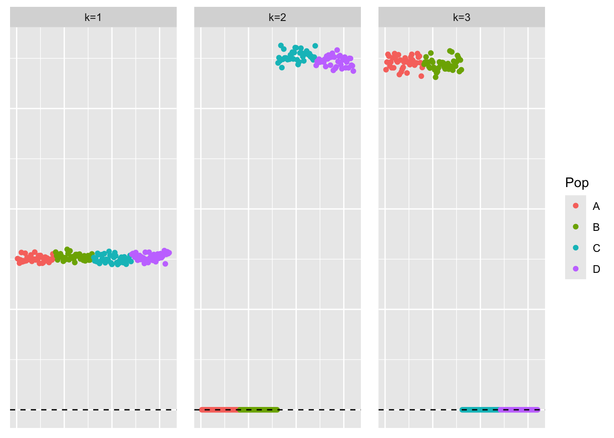
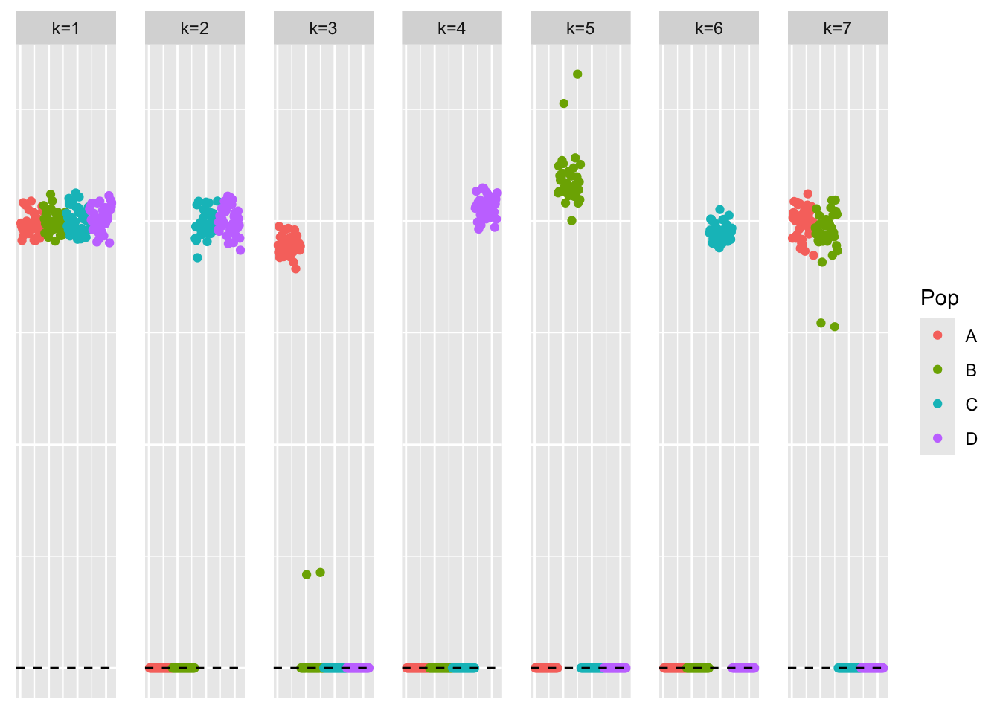
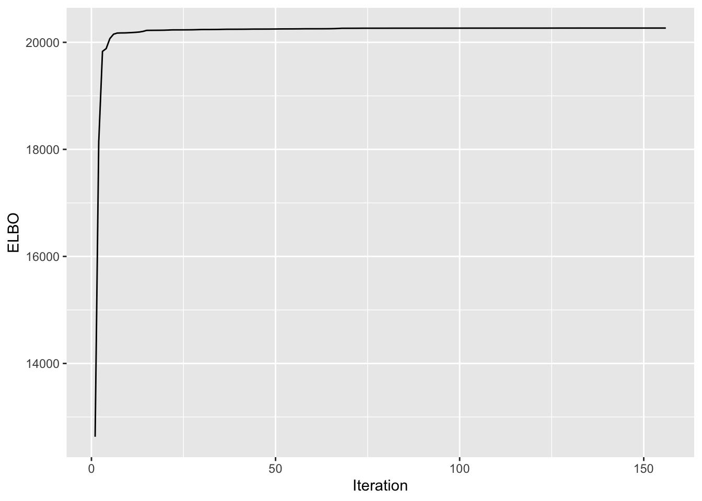
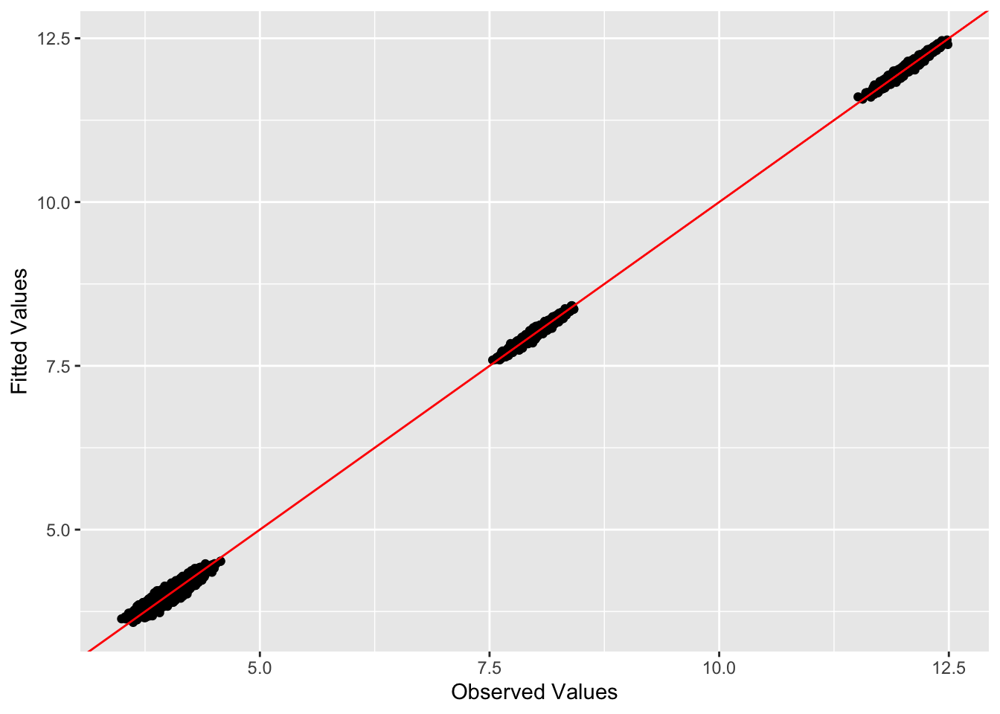
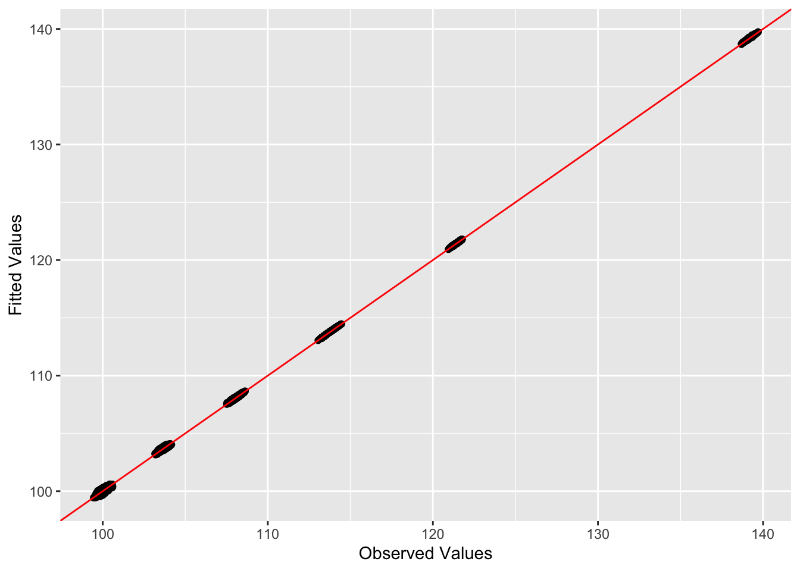

generalized-binary-comparison-experiments
Annie Xie
2024-08-29
Last updated: 2024-10-02
Checks: 7 0
Knit directory: EBCD_GBCD_comparison/
This reproducible R Markdown analysis was created with workflowr (version 1.7.1). The Checks tab describes the reproducibility checks that were applied when the results were created. The Past versions tab lists the development history.
Great! Since the R Markdown file has been committed to the Git repository, you know the exact version of the code that produced these results.
Great job! The global environment was empty. Objects defined in the global environment can affect the analysis in your R Markdown file in unknown ways. For reproduciblity it’s best to always run the code in an empty environment.
The command set.seed(20240229) was run prior to running
the code in the R Markdown file. Setting a seed ensures that any results
that rely on randomness, e.g. subsampling or permutations, are
reproducible.
Great job! Recording the operating system, R version, and package versions is critical for reproducibility.
Nice! There were no cached chunks for this analysis, so you can be confident that you successfully produced the results during this run.
Great job! Using relative paths to the files within your workflowr project makes it easier to run your code on other machines.
Great! You are using Git for version control. Tracking code development and connecting the code version to the results is critical for reproducibility.
The results in this page were generated with repository version 1922f6f. See the Past versions tab to see a history of the changes made to the R Markdown and HTML files.
Note that you need to be careful to ensure that all relevant files for
the analysis have been committed to Git prior to generating the results
(you can use wflow_publish or
wflow_git_commit). workflowr only checks the R Markdown
file, but you know if there are other scripts or data files that it
depends on. Below is the status of the Git repository when the results
were generated:
Ignored files:
Ignored: .DS_Store
Ignored: .Rhistory
Ignored: code/.DS_Store
Ignored: data/.DS_Store
Untracked files:
Untracked: analysis/convergence-comparison-experiments.Rmd
Untracked: analysis/driftr-comparison.Rmd
Untracked: code/drift_functions.R
Note that any generated files, e.g. HTML, png, CSS, etc., are not included in this status report because it is ok for generated content to have uncommitted changes.
These are the previous versions of the repository in which changes were
made to the R Markdown
(analysis/generalized-binary-comparison-experiments.Rmd)
and HTML
(docs/generalized-binary-comparison-experiments.html)
files. If you’ve configured a remote Git repository (see
?wflow_git_remote), click on the hyperlinks in the table
below to view the files as they were in that past version.
| File | Version | Author | Date | Message |
|---|---|---|---|---|
| Rmd | 1922f6f | Annie Xie | 2024-10-02 | Add generalized binary simulations |
Introduction
In this analysis, we are interested in comparing the convergence properties between EBCD, flash-Cov, and GBCD. We will run GBCD, EBMF-Cov with generalized binary prior, and EBCD with generalized binary prior. We will compare the number of iterations it takes for the algorithms to converge. We will also look at the progression of the objective function values (these will not be directly comparable since the methods have different objective functions). We will also compare the estimates and see if they both converge to the same local optima.
Packages and Functions
library(ggplot2)
library(cowplot)
library(RColorBrewer)
library(ggrepel)
library(pheatmap)
library(gridExtra)
#library(Seurat)
library(Matrix)
library(ebnm)
library(flashier)
library(magrittr)
library(ashr)
library(irlba)
library(reshape2)
library(patchwork)
Attaching package: 'patchwork'The following object is masked from 'package:cowplot':
align_plotslibrary(fastTopics)Warning: package 'fastTopics' was built under R version 4.3.3library(gbcd)
source("~/Documents/PhD 3/Research/EBCD/gbcd_functions.R")plot_heatmap <- function(L, title = "", colors_range = c("gray96", "red"), brks = NULL){
### define the color map
cols <- colorRampPalette(colors_range)(49)
if (is.null(brks) == TRUE){
brks <- seq(min(L), max(L), length=50)
}
plt <- pheatmap(L, show_rownames = FALSE, show_colnames = FALSE, cluster_rows = FALSE, cluster_cols = FALSE, color = cols, breaks = brks, main = title)
return(plt)
}source("code/ebcd_functions.R")#adapted from code used in Jason's thesis
plot_loadings <- function(L_est, Pop){
n <- nrow(L_est)
k <- ncol(L_est)
Idx <- rep(c(1:n), k)
Loading <- c(L_est)
Factor <- paste0('k=',c(sapply(c(1:k), function(x, n){rep(x, n)}, n = n)))
tib <- data.frame(Idx, Loading, Factor, Pop)
plt <- ggplot(tib, aes(x = Idx, y = Loading, col = Pop)) +
geom_point() +
geom_hline(yintercept = 0, linetype = "dashed") +
facet_grid(cols = vars(Factor)) +
theme(axis.title.x = element_blank(),
axis.title.y = element_blank(),
axis.ticks.x = element_blank(),
axis.ticks.y = element_blank(),
axis.text.x = element_blank(),
axis.text.y = element_blank(),
panel.spacing = unit(1, "lines"))
plot(plt)
}compute_bures_wasserstein_distance <- function(A, B){
trA <- sum(diag(A))
trB <- sum(diag(B))
svdA <- svd(A)
sqrtA <- svdA$u %*% sqrt(diag(svdA$d)) %*% t(svdA$u)
# eigA <- eigen(A, symmetric = TRUE)
# sqrtA <- eigA$vectors %*% diag(sqrt(eigA$values)) %*% t(eigA$vectors)
C <- sqrtA %*% B %*% sqrtA
svdC <- svd(C)
sqrtC <- svdC$u %*% sqrt(diag(svdC$d)) %*% t(svdC$u)
# eigC <- eigen(C, symmetric = TRUE)
# sqrtC <- eigC$vectors %*% diag(sqrt(eigC$values)) %*% t(eigC$vectors)
inner_trace <- sum(diag(sqrtC))
bw_dist <- (trA + trB - 2*inner_trace)
return(bw_dist)
}Example 1: Balanced Tree
In Example 1, we will simulate data from a balanced tree. Throughout this analysis, we will use the following notation: \(n_A\), \(n_B\), \(n_C\), and \(n_D\) are the sample sizes for the four different populations. \(\sigma_{ABC}^2\), \(\sigma_{AB}^2\), \(\sigma_{CD}^2\), \(\sigma_A^2\), \(\sigma_B^2\), \(\sigma_C^2\), and \(\sigma_D^2\) are the variances of the drift events. \(p\) is the number of genes. \(\sigma_{\epsilon}^2\) is the variance of the noise. We will use the same settings that Jason used in his thesis – \(n_A = n_B = n_C = n_D = 40\), \(\sigma_{ABC}^2 = \sigma_{AB}^2 = \sigma_{CD}^2 = \sigma_A^2 = \sigma_B^2 = \sigma_C^2 = \sigma_D^2 = 2^2\), \(p=1000\), and \(\sigma_{\epsilon}^2 = 1\).
Data Generation
sim_4pops <- function(pop_sizes,
branch_sds,
indiv_sd,
n_genes = 1000,
constrain_F = FALSE,
seed = 666) {
set.seed(seed)
n <- sum(pop_sizes)
p <- n_genes
FF <- matrix(rnorm(7 * p, sd = rep(branch_sds, each = p)), ncol = 7)
if (constrain_F) {
FF_svd <- svd(FF)
FF <- FF_svd$u
FF <- t(t(FF) * branch_sds * sqrt(p))
}
LL <- matrix(0, nrow = n, ncol = 7)
LL[, 1] <- 1
LL[, 2] <- rep(c(1, 1, 0, 0), times = pop_sizes)
LL[, 3] <- rep(c(0, 0, 1, 1), times = pop_sizes)
LL[, 4] <- rep(c(1, 0, 0, 0), times = pop_sizes)
LL[, 5] <- rep(c(0, 1, 0, 0), times = pop_sizes)
LL[, 6] <- rep(c(0, 0, 1, 0), times = pop_sizes)
LL[, 7] <- rep(c(0, 0, 0, 1), times = pop_sizes)
# Only true for trees with no admixture:
divmat <- matrix(nrow = n, ncol = 4)
divmat[, 1] <- LL[, 1]
divmat[, 2] <- LL[, 2] - LL[, 3]
divmat[, 3] <- LL[, 4] - LL[, 5]
divmat[, 4] <- LL[, 6] - LL[, 7]
E <- matrix(rnorm(n * p, sd = indiv_sd), nrow = n)
pops <- rep(LETTERS[1:length(pop_sizes)], times = pop_sizes)
return(list(Y = LL %*% t(FF) + E, LL = LL, FF = FF, divmat = divmat, pops = pops))
}sim_data_4pop <- sim_4pops(pop_sizes = rep(40, 4),
branch_sds = rep(2, 7),
indiv_sd = 1,
n_genes = 1000,
constrain_F = TRUE,
seed = 666)This is a heatmap of the loadings matrix, \(L\):
plot_heatmap(sim_data_4pop$LL)
This is a heatmap of \(F^{T}F\):
plot_heatmap(crossprod(sim_data_4pop$FF))observed.vals1 <- tcrossprod(sim_data_4pop$Y)/ ncol(sim_data_4pop$Y)This is a heatmap of the Gram matrix, \(XX^{T}/p\):
plot_heatmap(observed.vals1)
EBCD with generalized binary prior
Hypothesis
We think that EBCD can recover the binary, hierarchical loadings matrix that was used to generate the data. In this setting, we are particularly interested in recovering the tree structure in the data.
Analysis
set.seed(6287)
# ebcd_backfit_eps <- nrow(sim_data_4pop$Y)*ncol(sim_data_4pop$Y)*sqrt(.Machine$double.eps)
fit.ebcd1 <- ebcd(X = t(sim_data_4pop$Y), Kmax = 7, maxiter_backfit = 10000, ebnm_fn = ebnm::ebnm_generalized_binary)This is a heatmap of the estimate of \(L\), \(\hat{L}\):
plot_heatmap(fit.ebcd1$EL)
This is a scatter plot of the entries of \(\hat{L}\), separated by factor:
plot_loadings(fit.ebcd1$EL, c(rep('A', 40), rep('B', 40), rep('C', 40), rep('D', 40)))
ebcd.gb.fitted.vals1 <- tcrossprod(fit.ebcd1$EL)This is the L2 norm of the difference between the observed values and the fitted values.
sum((observed.vals1 - ebcd.gb.fitted.vals1)^2)[1] 862.6464This is the L2 norm of the difference between the off-diagonal entries of the observed values and fitted values.
sum((observed.vals1 - ebcd.gb.fitted.vals1)^2) - sum((diag(observed.vals1) - diag(ebcd.gb.fitted.vals1))^2)[1] 717.165This is the Bures-Wasserstein distance between the observed values and the fitted values.
compute_bures_wasserstein_distance(observed.vals1, ebcd.gb.fitted.vals1)[1] 151.5226This is a plot of (a subset of) the off-diagonal entries of the fitted values vs. observed values:
set.seed(3952)
diag_idx <- seq(1, prod(dim(observed.vals1)), length.out = ncol(observed.vals1))
off_diag_idx <- setdiff(c(1:prod(dim(observed.vals1))), diag_idx)
samp.vals <- sample(off_diag_idx, size = 10000)ggplot(data = NULL, aes(x = c(as.matrix(observed.vals1))[samp.vals], y = c(ebcd.gb.fitted.vals1)[samp.vals])) + geom_point() + xlab('Observed Values') + ylab('Fitted Values') + geom_abline(slope = 1, intercept = 0, color = 'red')This is a plot of the progression of the objective function
ggplot(data = NULL, aes(x = c(1:length(fit.ebcd1$vec.obj)), y = fit.ebcd1$vec.obj)) + geom_line()This is the number of iterations that the backfit did before the convergence criterion was satisfied:
length(fit.ebcd1$vec.obj)[1] 2438This is the value of the objective function that was attained:
fit.ebcd1$vec.obj[length(fit.ebcd1$vec.obj)][1] -223835.9Observations
At first glance, EBCD seems to find a loadings estimate similar to the desired hierarchical loadings matrix. However, looking at the scatter plot of the loadings, we see that there is variation in the loadings values within each factor. Ideally, within each factor, the non-negative loadings are about the same value. The variation in loadings values could be due to the use of the generalized binary prior. The prior does not enforce a strict binary structure; it allows for variation in order to model shared effects that are not binary. Therefore, this prior gives EBCD the ability to move away from binary-structured solutions towards solutions that give higher objective function values.
The fit of the estimates to the observed data with respect to the Euclidean distance is not particularly good. But we will compare it to the other methods. Maybe it is still comparable. The fit of the estimates to the observed data with respect to the Bures-Wasserstein distance is better. (Of course, we will compare it to the other methods.)
In this example, EBCD ran for 2438 backfit iterations. The ELBO saw a significant increase in the beginning, and then plateaued. There are no jumps in the ELBO (which we have seen in other examples such as the divergence factorization example).
EBMF-Cov with generalized binary prior
Hypothesis
We also think that EBMF-Cov with the generalized binary prior should be able to recover the tree-structured loadings matrix.
Analysis
# sink('~/Desktop/EBCD_GBCD_comparison_data/flash_cov_gb.tsv')
flash_cov_fit1 <- flash_init(data = observed.vals1, var_type = 0) %>%
flash_set_verbose(-1) %>%
flash_greedy(ebnm_fn = ebnm::ebnm_generalized_binary, Kmax = 7) %>%
flash_backfit()Type Factor Iter ELBO ELBO.diff LF.max.chg
greedy 1 1 -67326.97 NA 0.000333603115573067
greedy 1 2 -67326.96 0.0136388552637072 2.65381324090208e-05
greedy 1 3 -67326.96 0.00011171301594004 3.26245330620201e-06
greedy 2 1 -64590.83 NA 0.00585550112603725
greedy 3 1 -60976.41 NA 0.00583926984562615
greedy 3 2 -60975.03 1.37816460870818 0.000926359432015175
greedy 3 3 -60974.77 0.26620559074945 0.000107179427982718
greedy 3 4 -60974.74 0.0294747173320502 1.2423717591914e-05
greedy 3 5 -60974.73 0.00340082052571233 1.44135364613107e-06
greedy 3 6 -60974.73 0.000394354850868694 1.67244321516713e-07
greedy 3 7 -60974.73 4.57560527138412e-05 1.94061659242184e-08Warning in scale.EF(EF): Fitting stopped after the initialization function
failed to find a non-zero factor.greedy 4 1 -60974.73 0 0
backfit all 1 -52225.84 8748.89723365963 0.00104033446304005
backfit all 2 -46947.86 5277.97842834461 0.00119633872591446
backfit all 3 -46493.59 454.271728733547 0.00132967857567796
backfit all 4 -46443.75 49.8324018594503 0.000214551443310257
backfit all 5 -46429.17 14.5820643559855 0.000212562957685833
backfit all 6 -46427.30 1.87563237430004 0.000156181275866821
backfit all 7 -46427.19 0.10802718357445 0.000126160720582372
backfit all 8 -46427.02 0.170427208824549 0.000120228436106734
backfit all 9 -46426.85 0.166560655416106 0.000119282473811641
backfit all 10 -46426.75 0.095173701090971 0.000120766811713732
backfit all 11 -46426.71 0.0428592685493641 0.000128594778814078
backfit all 12 -46426.71 0.00668786507594632 1.2182291872595e-05
backfit all 13 -46426.70 0.00531734605465317 1.77637276802117e-05
backfit all 14 -46426.70 0.00418649127095705 2.11194219294497e-05
backfit all 15 -46426.69 0.00370168303197715 2.43572347739807e-05
backfit all 16 -46426.69 0.00288599645136856 2.88959196629024e-05
backfit all 17 -46426.69 0.000935686402954161 3.66521114137236e-05
backfit all 18 -46426.69 0.000106319639598951 2.4876962759629e-06progress_flash_cov <- read.delim('~/Desktop/EBCD_GBCD_comparison_data/flash_cov_gb.tsv')
# sink()This is a heatmap of the estimate of \(L\), \(\hat{L}\):
plot_heatmap(flash_cov_fit1$L_pm)This is a scatter plot of the entries of \(\hat{L}\), separated by factor:
plot_loadings(flash_cov_fit1$L_pm, c(rep('A', 40), rep('B', 40), rep('C', 40), rep('D', 40)))
flash.gb.rescale <- ldf(flash_cov_fit1)
flash.gb.rescale.L <- flash.gb.rescale$L %*% diag(sqrt(flash.gb.rescale$D))
flash.gb.fitted.vals1 <- tcrossprod(flash.gb.rescale.L)This is the L2 norm of the difference between the observed values and the fitted values.
sum((observed.vals1 - flash.gb.fitted.vals1)^2)[1] 52254.55This is the L2 norm of the difference between the off-diagonal entries of the observed values and fitted values.
sum((observed.vals1 - flash.gb.fitted.vals1)^2) - sum((diag(observed.vals1) - diag(flash.gb.fitted.vals1))^2)[1] 50821.02This is the Bures-Wasserstein distance between the observed values and the fitted values.
compute_bures_wasserstein_distance(observed.vals1, flash.gb.fitted.vals1)[1] 472.5925This is a plot of (a subset of) the off-diagonal entries of the fitted values vs. observed values:
set.seed(3952)
diag_idx <- seq(1, prod(dim(observed.vals1)), length.out = ncol(observed.vals1))
off_diag_idx <- setdiff(c(1:prod(dim(observed.vals1))), diag_idx)
samp.vals <- sample(off_diag_idx, size = 10000)ggplot(data = NULL, aes(x = c(as.matrix(observed.vals1))[samp.vals], y = c(flash.gb.fitted.vals1)[samp.vals])) + geom_point() + xlab('Observed Values') + ylab('Fitted Values') + geom_abline(slope = 1, intercept = 0, color = 'red')This is a plot of the objective function progression (greedy + backfit):
ggplot(data = progress_flash_cov, aes(x = c(1:dim(progress_flash_cov)[1]), y = ELBO)) + geom_line() + xlab('Iteration') + geom_vline(xintercept = 13, linetype = 'dashed', color = 'red')This is plot of the objective function progression for just the backfit:
ggplot(data = progress_flash_cov[progress_flash_cov$Type == 'backfit',], aes(x = Iter, y = ELBO)) + geom_line() + xlab('Iteration')This is the value of the objective function that was attained:
flash_cov_fit1$elbo[1] -46426.69Observations
EBMF-Cov generated an estimate for only 3 factors vs the desired 7. The 3 factors found are a mean factor with equal loading on all individuals and two factors corresponding to the 2 vs 2 split. One possible explanation for this is the population effects described in the last four factors were lumped into the individual errors. Because we are missing the other four factors, the fit of the estimates to the observed data is not very good. In particular, the Euclidean distance between the values is very large, much larger than that for EBCD. The Bures-Wasserstein distance is also larger for EBMF-Cov vs EBCD. This is not entirely surprising since the EBCD objective function uses the Bures-Wasserstein distance.
EBMF-Cov got to this estimate using 12 greedy iterations and 18 backfit iterations. The progression of the ELBO is what we expect – we see a sharper increase in the beginning and then eventually it plateaus.
EBMF-Cov with EBCD initialization
In comparing these two methods, we are interested in ascertaining whether differences in results are due to differences in the objective functions or differences in the convergence properties. In the context of this example, we want to know if EBCD gives a different result than EBMF-Cov because of a difference between their objective functions or because one of them is getting stuck in a local optima. One observation from the EBCD result is during the backfit, it does find something similar to the divergence factorization, but then moves away from this solution. We want to test the solution from EBMF-Cov when initialized with the EBCD solution. If the result is similar to the divergence factorization, then that suggests that the objective functions are different and finding different types of solutions. If the result is similar to the EBCD solution, that may suggest that EBCD is, in fact, finding a “better” solution.
Analysis
# sink('~/Desktop/EBCD_GBCD_comparison_data/flash_cov_ebcd_init_gb.tsv')
flash_cov_ebcd_init <- flash_init(data = observed.vals1, var_type = 0) %>%
flash_set_verbose(-1) %>%
flash_factors_init(init = list(fit.ebcd1$EL, fit.ebcd1$EL), ebnm_fn = ebnm::ebnm_generalized_binary) %>%
flash_backfit()Type Factor Iter ELBO ELBO.diff LF.max.chg
backfit all 1 12630.56 NA 0.011759130983285
backfit all 2 18168.40 5537.84407348801 0.00719319219366024
backfit all 3 19831.12 1662.71477284369 0.00584421416217809
backfit all 4 19882.72 51.5990997275767 0.0040618136770039
backfit all 5 20069.64 186.919392448821 0.000690758650619822
backfit all 6 20151.66 82.0229401003053 0.000678691917762389
backfit all 7 20173.08 21.4178006559487 0.000528827222111422
backfit all 8 20175.38 2.30105677894971 0.000353620387846754
backfit all 9 20175.99 0.613594682079565 0.000452744169856745
backfit all 10 20178.72 2.72979533952093 0.000580735813937694
backfit all 11 20182.46 3.7363486086324 0.000786130872678814
backfit all 12 20186.56 4.09954930760796 0.00116888987310917
backfit all 13 20192.53 5.97391526486535 0.00195568817717653
backfit all 14 20204.10 11.5722734650226 0.00374287302232279
backfit all 15 20222.97 18.8711923724732 0.00742900205134323
backfit all 16 20223.88 0.905760219011427 9.32249213834724e-05
backfit all 17 20224.54 0.663960819878412 0.00017596462599126
backfit all 18 20224.97 0.429976474388241 0.000289785670676362
backfit all 19 20225.66 0.680896593708894 0.000496481230653573
backfit all 20 20227.11 1.45234910696308 0.000929948234327294
backfit all 21 20229.72 2.61668882640151 0.00189471032536345
backfit all 22 20232.32 2.59821144997841 0.00372908434734326
backfit all 23 20232.41 0.0849749088374665 6.66602212691103e-05
backfit all 24 20232.56 0.154305625914276 0.000124920033173881
backfit all 25 20232.81 0.24851617125023 0.00020186018639401
backfit all 26 20233.22 0.411541892081004 0.000339547330776624
backfit all 27 20233.95 0.726348872514791 0.00062832897714768
backfit all 28 20235.27 1.31932425818741 0.0012757009402668
backfit all 29 20237.27 2.00064503268004 0.00252244099237292
backfit all 30 20239.08 1.81101954510814 0.00490591775080848
backfit all 31 20239.21 0.126525518993731 6.70054235474005e-05
backfit all 32 20239.44 0.239000966888852 0.000128572669278681
backfit all 33 20239.83 0.382986482869455 0.00021185076213151
backfit all 34 20240.44 0.615791656236979 0.000356048843395657
backfit all 35 20241.47 1.02924390216504 0.000653717308786633
backfit all 36 20243.09 1.61282966271756 0.00131695469240223
backfit all 37 20244.11 1.02928794120453 0.00261675450636811
backfit all 38 20244.17 0.0581722100287152 4.22925932485885e-05
backfit all 39 20244.29 0.113212522319373 7.93312817890246e-05
backfit all 40 20244.47 0.184633308999764 0.000127901338709713
backfit all 41 20244.77 0.299681379590766 0.000211908153294138
backfit all 42 20245.28 0.50767670485584 0.000388523360218052
backfit all 43 20246.12 0.84572685364401 0.000782260380840866
backfit all 44 20247.10 0.976235243047995 0.0015342252542023
backfit all 45 20247.14 0.0396508193734917 2.70385317773479e-05
backfit all 46 20247.22 0.0777134240161104 5.31464922414772e-05
backfit all 47 20247.35 0.128452623670455 8.84336013198608e-05
backfit all 48 20247.56 0.213961944042239 0.000149541454918793
backfit all 49 20247.94 0.380483330471179 0.000276205437225462
backfit all 50 20248.64 0.700863544945605 0.000561675422537638
backfit all 51 20249.71 1.06539509944196 0.00111688555499784
backfit all 52 20250.39 0.684482900349394 0.00220059325471604
backfit all 53 20250.49 0.0964697767340112 6.34592005840373e-05
backfit all 54 20250.67 0.18437737023487 0.000122160502899482
backfit all 55 20250.96 0.290731353834417 0.000200340427737644
backfit all 56 20251.41 0.446672767338896 0.000334501531598697
backfit all 57 20252.09 0.683818620505917 0.000610440561183118
backfit all 58 20252.96 0.870445189488237 0.00122601364282421
backfit all 59 20252.98 0.0189463060778507 6.76601809845856e-06
backfit all 60 20253.02 0.0376466875750339 1.27993541185756e-05
backfit all 61 20253.08 0.0636379456991563 2.04982606197557e-05
backfit all 62 20253.19 0.109658266414044 3.38244844195201e-05
backfit all 63 20253.40 0.206015121879318 6.18323672469945e-05
backfit all 64 20253.82 0.422441571921809 0.000125448854910976
backfit all 65 20254.65 0.831626478193357 0.000248974906430333
backfit all 66 20256.21 1.55926953523885 0.000486451282965927
backfit all 67 20258.88 2.66433754119862 0.000935466754446002
backfit all 68 20262.38 3.49852402835677 0.00175911214770691
backfit all 69 20262.47 0.0983903614360315 6.6010478339068e-05
backfit all 70 20262.58 0.106739219980227 0.000103182743857788
backfit all 71 20262.71 0.128419026070333 0.000151668490052041
backfit all 72 20262.90 0.192909959274402 0.000241029659643351
backfit all 73 20263.21 0.310786417168856 0.000432885060537971
backfit all 74 20263.63 0.415665189710126 0.000871672972100911
backfit all 75 20263.64 0.0128008498031704 6.60166055026223e-06
backfit all 76 20263.66 0.0144862868182827 1.4887293804923e-05
backfit all 77 20263.67 0.0170598789591168 2.72357415966179e-05
backfit all 78 20263.70 0.0283236285176827 4.84896188232414e-05
backfit all 79 20263.76 0.0540293113954249 9.12218585912838e-05
backfit all 80 20263.86 0.102971088152117 0.000185506797232601
backfit all 81 20264.02 0.166433560290898 0.000366223406809169
backfit all 82 20264.21 0.182584041554946 0.000714827256785545
backfit all 83 20264.22 0.0134212533339451 2.25321841126613e-05
backfit all 84 20264.24 0.0218029772549926 4.05076975416585e-05
backfit all 85 20264.27 0.0323156546037353 6.24862295703077e-05
backfit all 86 20264.33 0.0503875288522977 0.000100391240093006
backfit all 87 20264.41 0.0807076874370978 0.000180403205033541
backfit all 88 20264.52 0.113702997310611 0.000361986735456038
backfit all 89 20264.55 0.0351152688199363 0.000712880535835209
backfit all 90 20264.56 0.00683397440661793 1.43427192030587e-05
backfit all 91 20264.57 0.013004665812332 2.83514763030623e-05
backfit all 92 20264.60 0.0208981659889105 4.73791332499876e-05
backfit all 93 20264.63 0.0336002381664002 8.01361899059744e-05
backfit all 94 20264.69 0.0561845553784224 0.000147533695215779
backfit all 95 20264.78 0.089858581621229 0.000298325110284638
backfit all 96 20264.85 0.0796183837264834 0.000588630234413606
backfit all 97 20264.86 0.00418203448134591 9.73371474258244e-06
backfit all 98 20264.87 0.00813386329900823 1.8766125892411e-05
backfit all 99 20264.88 0.0132684994205192 3.07212169551596e-05
backfit all 100 20264.90 0.0216367959801573 5.13010692238247e-05
backfit all 101 20264.94 0.0370990563242231 9.38364225254451e-05
backfit all 102 20265.00 0.0634110788851103 0.00018914263752301
backfit all 103 20265.08 0.0781022774790472 0.00037224906313299
backfit all 104 20265.08 0.0030586309840146 7.78090614624027e-06
backfit all 105 20265.09 0.00600537050559069 1.5307638393719e-05
backfit all 106 20265.10 0.00992417013185332 2.54265195938838e-05
backfit all 107 20265.12 0.0164991053497943 4.28825433699334e-05
backfit all 108 20265.15 0.0292501588446612 7.892094817194e-05
backfit all 109 20265.20 0.0536967147818359 0.000159768313269269
backfit all 110 20265.28 0.0819185551154078 0.000315875529666144
backfit all 111 20265.34 0.0609905734381755 0.00061760536929311
backfit all 112 20265.35 0.00697797081738827 1.56137266579814e-05
backfit all 113 20265.36 0.0133736371426494 3.0524785805508e-05
backfit all 114 20265.38 0.0211995662903064 5.03042012293814e-05
backfit all 115 20265.42 0.0328874399310735 8.41214262858811e-05
backfit all 116 20265.47 0.0512189779292385 0.000153461475864924
backfit all 117 20265.53 0.0675116098063882 0.000308002720709161
backfit all 118 20265.54 0.0014790860877838 2.04126031586038e-06
backfit all 119 20265.54 0.00294682027742965 3.98404302465183e-06
backfit all 120 20265.54 0.0049805765520432 6.580800096051e-06
backfit all 121 20265.55 0.00856536860010237 1.10812709581964e-05
backfit all 122 20265.57 0.0160409650598012 2.04366619013796e-05
backfit all 123 20265.60 0.0327243794563401 4.15406681800179e-05
backfit all 124 20265.67 0.0637945333728567 8.24842285959693e-05
backfit all 125 20265.78 0.117189550637704 0.000161724194974594
backfit all 126 20265.97 0.19061713807605 0.000314451702951857
backfit all 127 20266.18 0.210296779714554 0.00060655784200328
backfit all 128 20266.19 0.00731801384245045 1.94646416733432e-05
backfit all 129 20266.20 0.0134358875984617 3.7238671870013e-05
backfit all 130 20266.23 0.0208293477880943 6.04934436172835e-05
backfit all 131 20266.26 0.0317542527081969 0.000100600513492512
backfit all 132 20266.30 0.0478947939518548 0.000183698601386499
backfit all 133 20266.36 0.0553361952697742 0.000370034001160882
backfit all 134 20266.36 0.000488468689582078 2.65760071319066e-06
backfit all 135 20266.36 0.000903685668163234 5.34889861861926e-06
backfit all 136 20266.36 0.00145463025910431 9.05075284412388e-06
backfit all 137 20266.37 0.00241502534117899 1.54615415289827e-05
backfit all 138 20266.37 0.00431593435496325 2.85995565153727e-05
backfit all 139 20266.38 0.008048298626818 5.79151065787237e-05
backfit all 140 20266.39 0.0128483797780063 0.000114315529766276
backfit all 141 20266.40 0.0127086615138978 0.00022298452491902
backfit all 142 20266.40 0.000932620481762569 5.67694428622173e-06
backfit all 143 20266.41 0.00175953381403815 1.10033561383158e-05
backfit all 144 20266.41 0.00277435521275038 1.80332042825151e-05
backfit all 145 20266.41 0.00432033814649913 3.00646557229722e-05
backfit all 146 20266.42 0.00681595660353196 5.47844570124509e-05
backfit all 147 20266.43 0.0093361393410305 0.000109907365803269
backfit all 148 20266.43 0.00115658184950007 0.000215324090687044
backfit all 149 20266.43 0.000592488577240147 4.53101490827112e-06
backfit all 150 20266.43 0.00114331346412655 8.91063506389816e-06
backfit all 151 20266.43 0.00183947142431862 1.47908315136641e-05
backfit all 152 20266.44 0.00293440550376545 2.49023343865395e-05
backfit all 153 20266.44 0.00483466309015057 4.57117499020679e-05
backfit all 154 20266.45 0.00747926770418417 9.22400347179858e-05
backfit all 155 20266.45 0.0055667303095106 0.000181641045228942
backfit all 156 20266.46 0.000362765917088836 2.86640632812807e-06progress_flash_cov_ebcd_init <- read.delim('~/Desktop/EBCD_GBCD_comparison_data/flash_cov_ebcd_init_gb.tsv')
# sink()This is a heatmap of the estimate of \(L\), \(\hat{L}\):
plot_heatmap(flash_cov_ebcd_init$L_pm)
This is a scatter plot of the entries of \(\hat{L}\), separated by factor:
plot_loadings(flash_cov_ebcd_init$L_pm, c(rep('A', 40), rep('B', 40), rep('C', 40), rep('D', 40)))
flash.ebcd.init.rescale <- ldf(flash_cov_ebcd_init)
flash.ebcd.init.rescale.L <- flash.ebcd.init.rescale$L %*% diag(sqrt(flash.ebcd.init.rescale$D))
flash.ebcd.init.fitted.vals1 <- tcrossprod(flash.ebcd.init.rescale.L)This is a plot of \(\hat{L}\hat{L}^{T}\).
plot_heatmap(flash.ebcd.init.fitted.vals1)This is the L2 norm of the difference between the observed values and the fitted values.
sum((observed.vals1 - flash.ebcd.init.fitted.vals1)^2)[1] 223.9972This is the L2 norm of the difference between the off-diagonal entries of the observed values and fitted values.
sum((observed.vals1 - flash.ebcd.init.fitted.vals1)^2) - sum((diag(observed.vals1) - diag(flash.ebcd.init.fitted.vals1))^2)[1] 76.65081This is the Bures-Wasserstein distance between the observed values and the fitted values.
compute_bures_wasserstein_distance(observed.vals1, flash.ebcd.init.fitted.vals1)[1] 152.5081This is a plot of (a subset of) the off-diagonal entries of the fitted values vs. observed values:
set.seed(3952)
diag_idx <- seq(1, prod(dim(observed.vals1)), length.out = ncol(observed.vals1))
off_diag_idx <- setdiff(c(1:prod(dim(observed.vals1))), diag_idx)
samp.vals <- sample(off_diag_idx, size = 10000)ggplot(data = NULL, aes(x = c(as.matrix(observed.vals1))[samp.vals], y = c(flash.ebcd.init.fitted.vals1)[samp.vals])) + geom_point() + xlab('Observed Values') + ylab('Fitted Values') + geom_abline(slope = 1, intercept = 0, color = 'red')This is a plot of the objective function progression (greedy + backfit):
ggplot(data = progress_flash_cov_ebcd_init, aes(x = Iter, y = ELBO)) + geom_line() + xlab('Iteration')
This is the value of the objective function that was attained:
flash_cov_ebcd_init$elbo[1] 20266.46Observations
Initializing EBMF-Cov with the EBCD estimate leads to an estimate that looks more like the desired drift factorization. EBMF-Cov retains all 7 factors of the EBCD estimate. Generally speaking, each factor can be interpreted as a drift in the tree. Factor 3 does have a weird thing where it is primarily loaded on individuals from population A, but it is also loaded on two individuals from population B. Similar to the EBCD estimate, within a factor, the loadings values are around the same value, but there is some variation.
The ELBO for this estimate is 20266.46, which is much higher than the ELBO for the regular EBMF-Cov estimate, -46426.69. Furthermore, the fit of these estimates to the observed data is much better than the regular EBMF-Cov estimate. This suggests that EBCD is finding a “better” estimate.
This run of EBMF-Cov used 156 backfit iterations.
GBCD
Hypothesis
We hypothesize that GBCD will be able to find the loadings matrix of the drift factorization.
Analysis
gbcd_fit1 <- fit_gbcd(Y = sim_data_4pop$Y, Kmax = 7)[1] "Form cell by cell covariance matrix..."
user system elapsed
0.006 0.000 0.006
[1] "Initialize GEP membership matrix L..."
Adding factor 1 to flash object...
Wrapping up...
Done.
Adding factor 2 to flash object...
Adding factor 3 to flash object...
Adding factor 4 to flash object...
Adding factor 5 to flash object...
Factor doesn't significantly increase objective and won't be added.
Wrapping up...
Done.
Backfitting 4 factors (tolerance: 3.81e-04)...
Difference between iterations is within 1.0e+04...
Difference between iterations is within 1.0e+03...
Difference between iterations is within 1.0e+02...
Difference between iterations is within 1.0e+01...
Difference between iterations is within 1.0e+00...
Difference between iterations is within 1.0e-01...
Difference between iterations is within 1.0e-02...
Difference between iterations is within 1.0e-03...
Wrapping up...
Done.
Backfitting 4 factors (tolerance: 3.81e-04)...
Difference between iterations is within 1.0e+03...
Difference between iterations is within 1.0e+02...
Difference between iterations is within 1.0e+01...
Difference between iterations is within 1.0e+00...
Difference between iterations is within 1.0e-01...
Difference between iterations is within 1.0e-02...
Difference between iterations is within 1.0e-03...
Difference between iterations is within 1.0e-04...
Wrapping up...
Done.
Backfitting 4 factors (tolerance: 3.81e-04)...
Difference between iterations is within 1.0e+00...
Wrapping up...
Done.
user system elapsed
0.611 0.013 0.624
[1] "Estimate GEP membership matrix L..."
Backfitting 7 factors (tolerance: 3.81e-04)...
Difference between iterations is within 1.0e+04...
Difference between iterations is within 1.0e+03...
Difference between iterations is within 1.0e+02...
Difference between iterations is within 1.0e+01...
Difference between iterations is within 1.0e+00...
--Maximum number of iterations reached!
Wrapping up...
Done.
Backfitting 7 factors (tolerance: 3.81e-04)...
Difference between iterations is within 1.0e+02...
Difference between iterations is within 1.0e+01...
Difference between iterations is within 1.0e+00...
Difference between iterations is within 1.0e-01...
--Maximum number of iterations reached!
Wrapping up...
Done.
Backfitting 7 factors (tolerance: 3.81e-04)...
Difference between iterations is within 1.0e-01...
--Maximum number of iterations reached!
Wrapping up...
Done.
user system elapsed
11.223 0.059 11.310
[1] "Estimate GEP signature matrix F..."
Backfitting 7 factors (tolerance: 2.38e-03)...
Difference between iterations is within 1.0e+00...
--Estimate of factor 7 is numerically zero!
--Maximum number of iterations reached!
Wrapping up...
Done.
user system elapsed
18.364 0.364 18.804 This is a heatmap of the estimate of \(L\), \(\hat{L}\):
plot_heatmap(gbcd_fit1$L)This is a scatter plot of the entries of \(\hat{L}\), separated by factor:
plot_loadings(gbcd_fit1$L, c(rep('A', 40), rep('B', 40), rep('C', 40), rep('D', 40)))Rescale GBCD loadings estimate:
#need to rescale estimate
fit.gbcd.rescale1 <- flash_fit_cov_ebnmf_fit_laplace(Y = sim_data_4pop$Y, Kmax = 7, prior = ebnm::ebnm_generalized_binary, thres = 0.9, extrapolate = FALSE, maxiter = 500, verbose = 1) Adding factor 1 to flash object...
Wrapping up...
Done.
Adding factor 2 to flash object...
Adding factor 3 to flash object...
Adding factor 4 to flash object...
Adding factor 5 to flash object...
Factor doesn't significantly increase objective and won't be added.
Wrapping up...
Done.
Backfitting 4 factors (tolerance: 3.81e-04)...
Difference between iterations is within 1.0e+04...
Difference between iterations is within 1.0e+03...
Difference between iterations is within 1.0e+02...
Difference between iterations is within 1.0e+01...
Difference between iterations is within 1.0e+00...
Difference between iterations is within 1.0e-01...
Difference between iterations is within 1.0e-02...
Difference between iterations is within 1.0e-03...
Wrapping up...
Done.
Backfitting 4 factors (tolerance: 3.81e-04)...
Difference between iterations is within 1.0e+00...
Difference between iterations is within 1.0e-01...
Difference between iterations is within 1.0e-02...
Difference between iterations is within 1.0e-03...
Wrapping up...
Done.
Backfitting 4 factors (tolerance: 3.81e-04)...
Difference between iterations is within 1.0e-01...
Difference between iterations is within 1.0e-02...
Difference between iterations is within 1.0e-03...
Wrapping up...
Done.fit.gbcd.rescale2 <- flash_fit_cov_ebnmf_fit_L(dat = fit.gbcd.rescale1$dat, fit.gbcd.rescale1$fit.cov, Y=sim_data_4pop$Y, Kmax=7, prior = ebnm::ebnm_generalized_binary, thres = 0.9, extrapolate = FALSE, maxiter = 500, verbose = 1)Backfitting 7 factors (tolerance: 3.81e-04)...
Difference between iterations is within 1.0e+04...
Difference between iterations is within 1.0e+03...
Difference between iterations is within 1.0e+02...
Difference between iterations is within 1.0e+01...
Difference between iterations is within 1.0e+00...
Difference between iterations is within 1.0e-01...
--Maximum number of iterations reached!
Wrapping up...
Done.
Backfitting 7 factors (tolerance: 3.81e-04)...
Difference between iterations is within 1.0e+02...
Difference between iterations is within 1.0e+01...
Difference between iterations is within 1.0e+00...
--Maximum number of iterations reached!
Wrapping up...
Done.
Backfitting 7 factors (tolerance: 3.81e-04)...
Difference between iterations is within 1.0e+01...
Difference between iterations is within 1.0e+00...
Difference between iterations is within 1.0e-01...
--Maximum number of iterations reached!
Wrapping up...
Done.
Backfitting 7 factors (tolerance: 3.81e-04)...
Difference between iterations is within 1.0e-01...
--Maximum number of iterations reached!
Wrapping up...
Done.LDF Method of Scaling:
fit.gbcd.rescale.ldf <- ldf(fit.gbcd.rescale2$fit.cov, type = 'i')
fit.gbcd.rescale.L <- fit.gbcd.rescale.ldf$L %*% diag(sqrt(fit.gbcd.rescale.ldf$D))
thres <- 0.9
k.idx <- which(fit.gbcd.rescale2$corr > thres)
fit.gbcd.rescale.L <- fit.gbcd.rescale.L[,fit.gbcd.rescale2$k.order][,k.idx]gbcd.fitted.vals1 <- tcrossprod(fit.gbcd.rescale.L)This is the L2 norm of the difference between the observed values and the fitted values.
sum((observed.vals1 - gbcd.fitted.vals1)^2)[1] 210.4347This is the L2 norm of the difference between the off-diagonal entries of the observed values and fitted values.
sum((observed.vals1 - gbcd.fitted.vals1)^2) - sum((diag(observed.vals1) - diag(gbcd.fitted.vals1))^2)[1] 54.39368This is the Bures-Wasserstein distance between the observed values and the fitted values.
compute_bures_wasserstein_distance(observed.vals1, gbcd.fitted.vals1)[1] 152.6587This is a plot of (a subset of) the off-diagonal entries of the fitted values vs. observed values:
set.seed(3952)
diag_idx <- seq(1, prod(dim(observed.vals1)), length.out = ncol(observed.vals1))
off_diag_idx <- setdiff(c(1:prod(dim(observed.vals1))), diag_idx)
samp.vals <- sample(off_diag_idx, size = 10000)ggplot(data = NULL, aes(x = c(as.matrix(observed.vals1))[samp.vals], y = c(gbcd.fitted.vals1)[samp.vals])) + geom_point() + xlab('Observed Values') + ylab('Fitted Values') + geom_abline(slope = 1, intercept = 0, color = 'red')
This is the objective function from the final flash fit (before the processing of the L estimates).
fit.gbcd.rescale2$fit.cov$elbo[1] 35436.01Observations
Overall, GBCD did an okay job at finding the loadings matrix from the drift factorization. The method was generally able to find the population specific effects. However, in some of the population-effect factors, there are a couple of samples from other populations with non-negative loadings. This is not desired. The first factor has non-negative loadings for all the individuals. However, individuals from populations C and D have a higher loading value than those from populations A and B. Ideally, this factor could be interpreted as a mean factor, and we’d have a consistent loading value across all populations. Furthermore, the third factor has non-negative loading on populations C and D and zero loading on populations A and B. This is desired and can be interpreted as representing part of the 2 vs 2 split. However, in the third factor, the individuals in population D have a higher loading value than those in population C. Ideally, the loading value would be consistent across the two populations.
The fit of the GBCD estimate to the observed values is pretty good. The Euclidean distance between the estimates and the observed values is less than that for the EBCD estimate. However, for the Bures-Wasserstein distance, the EBCD estimate does a slightly better job. Again, this is not surprising since the objective function of the EBCD estimate uses the Bures-Wasserstein distance.
Because the GBCD method requires some ad-hoc processing of the estimates for \(L\), I’m not sure if there’s a direct objective function value. But I did plot the objective function value from the final flash fit.
Example 2: Unbalanced Tree
In Example 2, we will simulate data from an unbalanced tree. We will use the following settings – \(n_A = n_B = n_C = n_D = 40\), \(\sigma_{ABC}^2 = 10; \ \sigma_{AB}^2, \sigma_{CD}^2, \sigma_{A}^2, \sigma_B^2, \sigma_C^2, \sigma_D^2 \overset{i.i.d.}{\sim} \text{Unif}[1,6]\), \(p=10000\), and \(\sigma_{\epsilon}^2 = 1\).
Data Generation
#pop_size <- round(runif(4, min = 20, max = 80))
set.seed(2759)
pop_size <- rep(40, 4)
branch_sd <- c(10, runif(6, min = 1, max = 6))
pop_size[1] 40 40 40 40branch_sd[1] 10.000000 1.909695 2.832827 4.215251 5.960734 2.436259 2.371553sim_data2_4pop <- sim_4pops(pop_sizes = pop_size,
branch_sds = branch_sd,
indiv_sd = 1,
n_genes = 10000,
constrain_F = TRUE)This is a heatmap of the loadings matrix, \(L\):
plot_heatmap(sim_data2_4pop$LL)
This is a heatmap of \(F^{T}F\):
plot_heatmap(t(sim_data2_4pop$FF) %*% sim_data2_4pop$FF)observed.vals2 <- tcrossprod(sim_data2_4pop$Y)/ ncol(sim_data2_4pop$Y)This is a heatmap of the Gram matrix, \(XX^{T}/p\):
plot_heatmap(observed.vals2)EBCD with generalized binary prior
Analysis
set.seed(6287)
# ebcd_backfit_eps <- nrow(sim_data2_4pop$Y)*ncol(sim_data2_4pop$Y)*sqrt(.Machine$double.eps)
fit.ebcd2 <- ebcd(X = t(sim_data2_4pop$Y), Kmax = 7, maxiter_backfit = 10000, ebnm_fn = ebnm::ebnm_generalized_binary)This is a heatmap of the estimate of \(L\), \(\hat{L}\):
plot_heatmap(fit.ebcd2$EL)This is a scatter plot of the entries of \(\hat{L}\), separated by factor:
plot_loadings(fit.ebcd2$EL, c(rep('A', 40), rep('B', 40), rep('C', 40), rep('D', 40)))ebcd.gb.fitted.vals2 <- tcrossprod(fit.ebcd2$EL)This is the L2 norm of the difference between the observed values and the fitted values.
sum((observed.vals2 - ebcd.gb.fitted.vals2)^2)[1] 291.925This is the L2 norm of the difference between the off-diagonal entries of the observed values and fitted values.
sum((observed.vals2 - ebcd.gb.fitted.vals2)^2) - sum((diag(observed.vals2) - diag(ebcd.gb.fitted.vals2))^2)[1] 145.4187This is the Bures-Wasserstein distance between the observed values and the fitted values.
compute_bures_wasserstein_distance(observed.vals2, ebcd.gb.fitted.vals2)[1] 152.4695This is a plot of (a subset of) the off-diagonal entries of the fitted values vs. observed values:
set.seed(3952)
diag_idx <- seq(1, prod(dim(observed.vals2)), length.out = ncol(observed.vals2))
off_diag_idx <- setdiff(c(1:prod(dim(observed.vals2))), diag_idx)
samp.vals <- sample(off_diag_idx, size = 10000)ggplot(data = NULL, aes(x = c(as.matrix(observed.vals2))[samp.vals], y = c(ebcd.gb.fitted.vals2)[samp.vals])) + geom_point() + xlab('Observed Values') + ylab('Fitted Values') + geom_abline(slope = 1, intercept = 0, color = 'red')
This is a plot of the progression of the objective function
ggplot(data = NULL, aes(x = c(1:length(fit.ebcd2$vec.obj)), y = fit.ebcd2$vec.obj)) + geom_line()This is the number of iterations that the backfit did before the convergence criterion was satisfied:
length(fit.ebcd2$vec.obj)[1] 7226This is the value of the objective function that was attained:
fit.ebcd2$vec.obj[length(fit.ebcd2$vec.obj)][1] -2236099Observations
EBCD struggled more with recovering the tree structure for the unbalanced tree. Factors 5 and 7 look very similar – both have positive loading on samples from populations A and B and zero loading for the other samples. EBCD did not recover the individual population effect for population C.
EBMF-Cov with generalized binary prior
Analysis
# sink('~/Desktop/EBCD_GBCD_comparison_data/flash_cov_gb_unbalanced_tree.tsv')
flash_cov_fit2 <- flash_init(data = observed.vals2, var_type = 0) %>%
flash_set_verbose(-1) %>%
flash_greedy(ebnm_fn = ebnm::ebnm_generalized_binary, Kmax = 7) %>%
flash_backfit()Type Factor Iter ELBO ELBO.diff LF.max.chg
greedy 1 1 -95938.97 NA 1.78989772744303e-05
greedy 1 2 -95938.96 0.0124319697060855 1.51598322732649e-06
greedy 1 3 -95938.96 1.93213054444641e-06 2.69668445213034e-08
greedy 2 1 -93842.38 NA 0.000383847698500778
greedy 3 1 -91888.82 NA 0.00141816566618939Warning in scale.EF(EF): Fitting stopped after the initialization function
failed to find a non-zero factor.greedy 4 1 -91888.82 0 0
backfit all 1 -88031.67 3857.15290903694 0.00211161504218323
backfit all 2 -85756.81 2274.85708145564 0.00182887308181627
backfit all 3 -84712.86 1043.95551947699 0.00255851293389717
backfit all 4 -83839.71 873.146071701631 0.0340528018841154
backfit all 5 -74506.56 9333.14894356197 0.0218475751323843
backfit all 6 -61470.14 13036.42368968 0.0147529973295364
backfit all 7 -59775.89 1694.24913548978 0.0445470090258362
backfit all 8 -54450.29 5325.59615968342 0.00345640285658264
backfit all 9 -52189.91 2260.37886572583 0.00311575088009905
backfit all 10 -51773.88 416.038902152221 0.00253773220326152
backfit all 11 -51735.33 38.5451169656299 0.000500838710447829
backfit all 12 -51713.45 21.8815820329619 0.000583627816645289
backfit all 13 -51699.27 14.1743668071358 0.000556644565249245
backfit all 14 -51685.24 14.0378157543892 0.000582613438658917
backfit all 15 -51667.87 17.3620463872066 0.000709035668231772
backfit all 16 -51643.99 23.8877607562463 0.000975419188265644
backfit all 17 -51607.97 36.0136404818768 0.00148758852246763
backfit all 18 -51548.10 59.8770237145436 0.0025289625369159
backfit all 19 -51438.27 109.828413604431 0.00484995518687473
backfit all 20 -51252.68 185.58696789635 0.00908783095416009
backfit all 21 -51019.04 233.64320103261 0.0154946472578934
backfit all 22 -51010.89 8.14410957027576 6.13906354779842e-05
backfit all 23 -51006.35 4.54041397371475 4.6531955447765e-05
backfit all 24 -51003.02 3.33384972642671 5.9153490328534e-05
backfit all 25 -50997.75 5.27411702641984 0.000175068853016921
backfit all 26 -50987.62 10.128363349766 0.000306349616868651
backfit all 27 -50966.51 21.1115976248548 0.000617594193581095
backfit all 28 -50922.71 43.7972250458115 0.00126516358041264
backfit all 29 -50837.18 85.5281251164124 0.00250151800919042
backfit all 30 -50699.34 137.841921113024 0.00481950722799458
backfit all 31 -50668.05 31.2857257934229 0.00890005674035723
backfit all 32 -50525.89 142.15964186471 0.000311145958507172
backfit all 33 -50476.26 49.6338214016214 0.000309816707957222
backfit all 34 -50475.75 0.50491944928217 2.17442821147523e-05
backfit all 35 -50475.16 0.597983495157678 2.92689670145785e-05
backfit all 36 -50474.60 0.557215636312321 3.05949546878237e-05
backfit all 37 -50474.09 0.508625397014839 2.9228390839825e-05
backfit all 38 -50473.56 0.529366427515924 2.68589538757608e-05
backfit all 39 -50472.87 0.691954595677089 4.17932179651095e-05
backfit all 40 -50471.74 1.13174054810224 7.27330030225633e-05
backfit all 41 -50469.54 2.20109683084593 0.000141275750222516
backfit all 42 -50464.92 4.61306666477321 0.000293447857215037
backfit all 43 -50455.67 9.24877683012892 0.000595309254952006
backfit all 44 -50438.38 17.2937354781316 0.00118809179002773
backfit all 45 -50410.78 27.5996488229139 0.00233114332375415
backfit all 46 -50392.43 18.3462040279701 0.00445118419949586
backfit all 47 -50383.84 8.59275897408224 7.37017717531707e-05
backfit all 48 -50381.61 2.23332724684587 9.04944411689868e-05
backfit all 49 -50381.54 0.0634030963847181 4.17852162173937e-06
backfit all 50 -50381.46 0.0839128022198565 1.51348317792843e-05
backfit all 51 -50381.35 0.115767354618583 2.74458873959632e-05
backfit all 52 -50381.19 0.155120892253763 3.89857032608576e-05
backfit all 53 -50380.98 0.210695482615847 5.32921927222235e-05
backfit all 54 -50380.67 0.306753423421469 7.7517371166777e-05
backfit all 55 -50380.18 0.494545139321417 0.000126058432739079
backfit all 56 -50379.28 0.896944385145616 0.000235059694800296
backfit all 57 -50377.58 1.70060687995283 0.00047543458879841
backfit all 58 -50374.68 2.90249113922619 0.000942215926106285
backfit all 59 -50370.90 3.77367938408133 0.00182697694572234
backfit all 60 -50370.89 0.0137220905235154 2.835406907431e-06
backfit all 61 -50370.87 0.0225332363406778 4.70893170390063e-06
backfit all 62 -50370.84 0.0314486579009099 6.29167722679402e-06
backfit all 63 -50370.79 0.0449293085184763 8.75629262846178e-06
backfit all 64 -50370.72 0.0708174499304732 2.01887878562984e-05
backfit all 65 -50370.60 0.122964577603852 4.73574860473114e-05
backfit all 66 -50370.39 0.209803429766907 0.000104846017902532
backfit all 67 -50370.03 0.354662902740529 0.000223846313355314
backfit all 68 -50369.48 0.550062409165548 0.000464885133384954
backfit all 69 -50368.98 0.503101261027041 0.000942279988078012
backfit all 70 -50368.34 0.640516019222559 2.67322348039001e-05
backfit all 71 -50367.48 0.863090406579431 4.58780061807218e-05
backfit all 72 -50366.76 0.71309692239447 6.34889703494262e-05
backfit all 73 -50366.68 0.0810215578530915 8.5187285844876e-05
backfit all 74 -50366.65 0.0300099478845368 5.5791087343604e-06
backfit all 75 -50366.61 0.0402890094992472 9.67368441516514e-06
backfit all 76 -50366.57 0.0384093921311432 1.34001230095854e-05
backfit all 77 -50366.55 0.0277989177629934 1.79297473214962e-05
backfit all 78 -50366.54 0.00628372518985998 2.52763736641043e-05
backfit all 79 -50366.53 0.009679951799626 2.7223575407298e-06
backfit all 80 -50366.52 0.0144923369953176 4.40887234065546e-06
backfit all 81 -50366.50 0.0168688136909623 5.7276273247725e-06
backfit all 82 -50366.48 0.0186678082172875 7.14800125140025e-06
backfit all 83 -50366.46 0.0214783947449178 9.23570461433543e-06
backfit all 84 -50366.43 0.0263955240516225 1.58459812042849e-05
backfit all 85 -50366.40 0.0299344429076882 3.36806655381536e-05
backfit all 86 -50366.38 0.0262576368040754 6.98793914919796e-05
backfit all 87 -50366.37 0.00282424888428068 0.000143692371233434
backfit all 88 -50366.18 0.19526060235512 1.49079739689695e-05
backfit all 89 -50365.91 0.263849219772965 2.54581248237545e-05
backfit all 90 -50365.69 0.219607342150994 3.51045118185817e-05
backfit all 91 -50365.66 0.031721057894174 4.70656441840661e-05
backfit all 92 -50365.65 0.00964651425601915 2.98086951890097e-06
backfit all 93 -50365.64 0.0134507746843155 4.74262246265289e-06
backfit all 94 -50365.63 0.0138881295133615 6.04900232759054e-06
backfit all 95 -50365.61 0.012396910940879 7.39411557423852e-06
backfit all 96 -50365.60 0.00919277979119215 9.31655619706984e-06
backfit all 97 -50365.60 0.00182355510332854 1.27857883474997e-05
backfit all 98 -50365.59 0.0112467820581514 3.33137747092482e-06
backfit all 99 -50365.57 0.0163334725948516 5.68980115892015e-06
backfit all 100 -50365.56 0.0166215728240786 7.84472679367376e-06
backfit all 101 -50365.55 0.0118170162022579 1.05623994533788e-05
backfit all 102 -50365.54 0.00227393458044389 6.66684159864039e-07
backfit all 103 -50365.54 0.00400758555770153 1.20304545118272e-06
backfit all 104 -50365.53 0.00592997764033498 1.93431103580333e-06
backfit all 105 -50365.53 0.00889218724478269 3.13000489791937e-06
backfit all 106 -50365.51 0.0145204458458466 5.44115925789346e-06
backfit all 107 -50365.48 0.0268396485334961 1.05750329733936e-05
backfit all 108 -50365.43 0.0534982356257387 2.20542662466641e-05
backfit all 109 -50365.33 0.104121634758485 4.50978084587592e-05
backfit all 110 -50365.13 0.196226386542548 9.12260116360114e-05
backfit all 111 -50364.79 0.344301705015823 0.000183282814669762
backfit all 112 -50364.29 0.492171993450029 0.000366213750274867
backfit all 113 -50364.12 0.176963995909318 0.000727057274612974
backfit all 114 -50364.06 0.0590256954310462 7.85048447050907e-06
backfit all 115 -50363.98 0.0732501725506154 1.34685250912925e-05
backfit all 116 -50363.92 0.0618434933785466 1.8754172341845e-05
backfit all 117 -50363.91 0.0121211327277706 2.53799369602653e-05
backfit all 118 -50363.91 0.00349229999847012 2.59673370756053e-06
backfit all 119 -50363.90 0.00471298579941504 4.96241879284487e-06
backfit all 120 -50363.90 0.00556266523199156 7.50835331986277e-06
backfit all 121 -50363.89 0.00656517757306574 1.10847454397878e-05
backfit all 122 -50363.88 0.00809155571187148 1.7537210557847e-05
backfit all 123 -50363.87 0.0107683818641817 3.14644824649657e-05
backfit all 124 -50363.86 0.0137380926462356 6.16139125831222e-05
backfit all 125 -50363.85 0.0108975632247166 0.000119786574381053
backfit all 126 -50363.83 0.0182045931069297 4.59519552747922e-06
backfit all 127 -50363.80 0.0249758811551146 7.9088273265554e-06
backfit all 128 -50363.78 0.0214732795066084 1.10069227392678e-05
backfit all 129 -50363.78 0.00448357433924684 1.49202186866954e-05
backfit all 130 -50363.78 0.00117923466314096 1.84220624874221e-06
backfit all 131 -50363.77 0.00185027786938008 3.27025547980364e-06
backfit all 132 -50363.77 0.00233527267118916 4.84362660034543e-06
backfit all 133 -50363.77 0.00289713851816487 7.18746034183981e-06
backfit all 134 -50363.77 0.00385047090094304 1.15088309879385e-05
backfit all 135 -50363.76 0.00569751837610966 2.08480827073587e-05
backfit all 136 -50363.75 0.00858245597919449 4.10814214775457e-05
backfit all 137 -50363.74 0.0105748552232399 8.0254627284948e-05
backfit all 138 -50363.74 0.00343848685588455 0.000156514833421217
backfit all 139 -50363.72 0.0145555033377605 4.17550689531254e-06
backfit all 140 -50363.70 0.0198744987719692 7.1746564370978e-06
backfit all 141 -50363.69 0.0167893308898783 9.9718212607236e-06
backfit all 142 -50363.68 0.00255919204937527 1.35042799631613e-05
backfit all 143 -50363.68 0.000561150460271165 1.07163508504537e-06
backfit all 144 -50363.68 0.000783791394496802 1.84122529883757e-06
backfit all 145 -50363.68 0.000802655442385003 2.61997651740398e-06
backfit all 146 -50363.68 0.000684222461131867 3.71532705269184e-06
backfit all 147 -50363.68 0.000397895681089722 5.67349060491551e-06
backfit all 148 -50363.68 0.000152882144902833 3.4954976385615e-07progress_flash_cov <- read.delim('~/Desktop/EBCD_GBCD_comparison_data/flash_cov_gb_unbalanced_tree.tsv')
# sink()This is a heatmap of the estimate of \(L\), \(\hat{L}\):
plot_heatmap(flash_cov_fit2$L_pm)This is a scatter plot of the entries of \(\hat{L}\), separated by factor:
plot_loadings(flash_cov_fit2$L_pm, c(rep('A', 40), rep('B', 40), rep('C', 40), rep('D', 40)))flash.gb.rescale <- ldf(flash_cov_fit1)
flash.gb.rescale.L <- flash.gb.rescale$L %*% diag(sqrt(flash.gb.rescale$D))
flash.gb.fitted.vals2 <- tcrossprod(flash.gb.rescale.L)This is the L2 norm of the difference between the observed values and the fitted values.
sum((observed.vals2 - flash.gb.fitted.vals2)^2)[1] 257989521This is the L2 norm of the difference between the off-diagonal entries of the observed values and fitted values.
sum((observed.vals2 - flash.gb.fitted.vals2)^2) - sum((diag(observed.vals2) - diag(flash.gb.fitted.vals2))^2)[1] 255926474This is the Bures-Wasserstein distance between the observed values and the fitted values.
compute_bures_wasserstein_distance(observed.vals2, flash.gb.fitted.vals2)[1] 11064.07This is a plot of (a subset of) the off-diagonal entries of the fitted values vs. observed values:
set.seed(3952)
diag_idx <- seq(1, prod(dim(observed.vals1)), length.out = ncol(observed.vals1))
off_diag_idx <- setdiff(c(1:prod(dim(observed.vals1))), diag_idx)
samp.vals <- sample(off_diag_idx, size = 10000)ggplot(data = NULL, aes(x = c(as.matrix(observed.vals2))[samp.vals], y = c(flash.gb.fitted.vals2)[samp.vals])) + geom_point() + xlab('Observed Values') + ylab('Fitted Values') + geom_abline(slope = 1, intercept = 0, color = 'red')This is a plot of the objective function progression (greedy + backfit):
ggplot(data = progress_flash_cov, aes(x = c(1:dim(progress_flash_cov)[1]), y = ELBO)) + geom_line() + xlab('Iteration') + geom_vline(xintercept = 7, linetype = 'dashed', color = 'red')This is plot of the objective function progression for just the backfit:
ggplot(data = progress_flash_cov[progress_flash_cov$Type == 'backfit',], aes(x = Iter, y = ELBO)) + geom_line() + xlab('Iteration')
This is the value of the objective function that was attained:
flash_cov_fit2$elbo[1] -50363.68Observations
EBMF-Cov generated an estimate for only 3 factors vs the desired 7. The first factor kind of looks like a mean factor. However, the loading value for samples from population B is noticeably larger than that of the other samples. The second factor has positive loading for populations A and B and zero loading for populations C and D. The third factor is a 3 vs 1 factor – it has positive loading on populations A, C, and D and zero loading on population B. Regarding the missing factors, it’s possible that some of the population effects were lumped into the individual noise factor.
GBCD
Analysis
gbcd_fit2 <- fit_gbcd(Y = sim_data2_4pop$Y, Kmax = 7)[1] "Form cell by cell covariance matrix..."
user system elapsed
0.060 0.001 0.060
[1] "Initialize GEP membership matrix L..."
Adding factor 1 to flash object...
Wrapping up...
Done.
Adding factor 2 to flash object...
Adding factor 3 to flash object...
Adding factor 4 to flash object...
Adding factor 5 to flash object...
Factor doesn't significantly increase objective and won't be added.
Wrapping up...
Done.
Backfitting 4 factors (tolerance: 3.81e-04)...
Difference between iterations is within 1.0e+04...
Difference between iterations is within 1.0e+03...
Difference between iterations is within 1.0e+02...
Difference between iterations is within 1.0e+01...
Difference between iterations is within 1.0e+00...
Difference between iterations is within 1.0e-01...
Difference between iterations is within 1.0e-02...
Difference between iterations is within 1.0e-03...
--Maximum number of iterations reached!
Wrapping up...
Done.
Backfitting 4 factors (tolerance: 3.81e-04)...
Difference between iterations is within 1.0e+04...
Difference between iterations is within 1.0e+03...
Difference between iterations is within 1.0e+02...
Difference between iterations is within 1.0e+01...
Difference between iterations is within 1.0e+00...
Difference between iterations is within 1.0e-01...
Difference between iterations is within 1.0e-02...
Difference between iterations is within 1.0e-03...
Wrapping up...
Done.
Backfitting 4 factors (tolerance: 3.81e-04)...
Difference between iterations is within 1.0e+01...
Difference between iterations is within 1.0e+00...
Difference between iterations is within 1.0e-01...
Difference between iterations is within 1.0e-02...
Wrapping up...
Done.
user system elapsed
0.639 0.016 0.656
[1] "Estimate GEP membership matrix L..."
Backfitting 7 factors (tolerance: 3.81e-04)...
Difference between iterations is within 1.0e+03...
Difference between iterations is within 1.0e+02...
Difference between iterations is within 1.0e+01...
Difference between iterations is within 1.0e+00...
--Maximum number of iterations reached!
Wrapping up...
Done.
Backfitting 7 factors (tolerance: 3.81e-04)...
Difference between iterations is within 1.0e+03...
Difference between iterations is within 1.0e+02...
Difference between iterations is within 1.0e+01...
Difference between iterations is within 1.0e+00...
Difference between iterations is within 1.0e-01...
An update to factor 1 decreased the objective by 4.923e-04.
An update to factor 2 decreased the objective by 2.009e-05.
An update to factor 1 decreased the objective by 5.464e-04.
An update to factor 2 decreased the objective by 3.675e-06.
An update to factor 3 decreased the objective by 2.764e-06.
An update to factor 1 decreased the objective by 4.850e-04.
An update to factor 2 decreased the objective by 5.549e-06.
An update to factor 3 decreased the objective by 2.955e-06.
An update to factor 1 decreased the objective by 1.971e-04.
An update to factor 2 decreased the objective by 1.822e-05.
An update to factor 3 decreased the objective by 7.677e-06.
An update to factor 1 decreased the objective by 2.929e-04.
An update to factor 2 decreased the objective by 5.199e-06.
An update to factor 3 decreased the objective by 9.427e-06.
An update to factor 1 decreased the objective by 3.870e-04.
An update to factor 2 decreased the objective by 1.025e-05.
An update to factor 3 decreased the objective by 8.331e-06.
An update to factor 1 decreased the objective by 4.575e-04.
An update to factor 2 decreased the objective by 2.184e-05.
An update to factor 3 decreased the objective by 9.339e-06.
An update to factor 1 decreased the objective by 2.724e-04.
An update to factor 2 decreased the objective by 5.674e-06.
An update to factor 3 decreased the objective by 1.207e-05.
An update to factor 1 decreased the objective by 4.384e-04.
An update to factor 3 decreased the objective by 7.187e-06.
An update to factor 1 decreased the objective by 3.389e-04.
An update to factor 3 decreased the objective by 8.914e-06.
An update to factor 1 decreased the objective by 1.298e-04.
An update to factor 2 decreased the objective by 1.814e-05.
An update to factor 3 decreased the objective by 6.472e-06.
An update to factor 1 decreased the objective by 4.588e-04.
An update to factor 2 decreased the objective by 2.317e-05.
An update to factor 3 decreased the objective by 2.682e-06.
An update to factor 1 decreased the objective by 2.906e-05.
An update to factor 2 decreased the objective by 4.302e-06.
An update to factor 3 decreased the objective by 1.081e-05.
An update to factor 1 decreased the objective by 1.964e-04.
An update to factor 2 decreased the objective by 1.920e-05.
An update to factor 3 decreased the objective by 8.036e-06.
An update to factor 1 decreased the objective by 1.519e-04.
An update to factor 2 decreased the objective by 1.375e-05.
An update to factor 3 decreased the objective by 1.237e-05.
An update to factor 1 decreased the objective by 1.935e-04.
An update to factor 2 decreased the objective by 2.355e-05.
An update to factor 3 decreased the objective by 1.443e-06.
An update to factor 1 decreased the objective by 2.838e-04.
An update to factor 2 decreased the objective by 2.140e-05.
An update to factor 3 decreased the objective by 2.961e-06.
An update to factor 1 decreased the objective by 1.811e-04.
An update to factor 2 decreased the objective by 1.491e-05.
An update to factor 3 decreased the objective by 1.264e-05.
An update to factor 1 decreased the objective by 1.485e-04.
An update to factor 2 decreased the objective by 2.644e-05.
An update to factor 3 decreased the objective by 3.363e-06.
An update to factor 1 decreased the objective by 5.697e-04.
An update to factor 2 decreased the objective by 1.293e-05.
An update to factor 3 decreased the objective by 1.509e-05.
An update to factor 1 decreased the objective by 6.734e-05.
An update to factor 2 decreased the objective by 1.366e-05.
An update to factor 3 decreased the objective by 4.796e-06.
An update to factor 1 decreased the objective by 5.781e-04.
An update to factor 2 decreased the objective by 2.155e-05.
An update to factor 3 decreased the objective by 4.944e-06.
An update to factor 1 decreased the objective by 2.142e-04.
An update to factor 2 decreased the objective by 1.930e-05.
An update to factor 3 decreased the objective by 4.356e-06.
An update to factor 1 decreased the objective by 2.619e-04.
An update to factor 2 decreased the objective by 1.557e-05.
An update to factor 3 decreased the objective by 8.836e-07.
An update to factor 1 decreased the objective by 2.023e-04.
An update to factor 1 decreased the objective by 9.461e-06.
An update to factor 3 decreased the objective by 3.485e-06.
An update to factor 1 decreased the objective by 2.491e-04.
An update to factor 1 decreased the objective by 9.887e-05.
An update to factor 2 decreased the objective by 1.790e-05.
An update to factor 3 decreased the objective by 6.216e-06.
An update to factor 1 decreased the objective by 4.673e-04.
An update to factor 2 decreased the objective by 2.370e-05.
An update to factor 3 decreased the objective by 1.093e-05.
An update to factor 1 decreased the objective by 3.275e-04.
An update to factor 3 decreased the objective by 1.181e-06.
An update to factor 1 decreased the objective by 2.677e-04.
An update to factor 2 decreased the objective by 5.784e-06.
An update to factor 1 decreased the objective by 8.145e-05.
An update to factor 2 decreased the objective by 1.796e-06.
An update to factor 3 decreased the objective by 4.552e-06.
An update to factor 1 decreased the objective by 3.661e-04.
An update to factor 2 decreased the objective by 6.074e-06.
An update to factor 3 decreased the objective by 2.545e-06.
An update to factor 1 decreased the objective by 3.627e-04.
An update to factor 2 decreased the objective by 3.169e-06.
An update to factor 3 decreased the objective by 7.859e-07.
An update to factor 1 decreased the objective by 6.922e-05.
An update to factor 2 decreased the objective by 2.392e-05.
An update to factor 3 decreased the objective by 1.508e-06.
An update to factor 1 decreased the objective by 2.062e-04.
An update to factor 2 decreased the objective by 1.251e-05.
An update to factor 3 decreased the objective by 1.451e-06.
An update to factor 1 decreased the objective by 2.358e-04.
An update to factor 2 decreased the objective by 1.596e-05.
An update to factor 3 decreased the objective by 5.133e-06.
An update to factor 1 decreased the objective by 5.511e-05.
An update to factor 2 decreased the objective by 2.020e-05.
An update to factor 3 decreased the objective by 2.162e-06.
An update to factor 1 decreased the objective by 3.297e-04.
An update to factor 2 decreased the objective by 1.272e-05.
An update to factor 3 decreased the objective by 6.033e-06.
An update to factor 1 decreased the objective by 2.842e-04.
An update to factor 3 decreased the objective by 1.810e-06.
An update to factor 1 decreased the objective by 3.135e-04.
An update to factor 2 decreased the objective by 2.658e-05.
An update to factor 3 decreased the objective by 8.646e-06.
An update to factor 1 decreased the objective by 4.404e-04.
An update to factor 3 decreased the objective by 1.945e-06.
An update to factor 1 decreased the objective by 1.237e-04.
An update to factor 2 decreased the objective by 7.607e-06.
An update to factor 3 decreased the objective by 3.232e-06.
An update to factor 1 decreased the objective by 3.680e-04.
An update to factor 2 decreased the objective by 1.461e-07.
An update to factor 3 decreased the objective by 5.094e-06.
An update to factor 1 decreased the objective by 6.080e-04.
An update to factor 2 decreased the objective by 6.430e-06.
An update to factor 3 decreased the objective by 1.712e-06.
An update to factor 1 decreased the objective by 5.746e-04.
An update to factor 2 decreased the objective by 8.205e-06.
An update to factor 3 decreased the objective by 5.588e-06.
An update to factor 1 decreased the objective by 3.661e-04.
An update to factor 2 decreased the objective by 1.488e-05.
An update to factor 3 decreased the objective by 2.550e-06.
An update to factor 1 decreased the objective by 4.661e-04.
An update to factor 2 decreased the objective by 4.728e-06.
An update to factor 3 decreased the objective by 3.748e-06.
An update to factor 1 decreased the objective by 2.618e-04.
An update to factor 2 decreased the objective by 1.161e-05.
An update to factor 1 decreased the objective by 3.586e-04.
An update to factor 2 decreased the objective by 1.344e-05.
An update to factor 3 decreased the objective by 1.264e-06.
An update to factor 1 decreased the objective by 2.390e-04.
An update to factor 2 decreased the objective by 1.446e-05.
An update to factor 3 decreased the objective by 4.524e-07.
An update to factor 1 decreased the objective by 3.489e-04.
An update to factor 2 decreased the objective by 2.740e-06.
An update to factor 3 decreased the objective by 8.144e-06.
An update to factor 1 decreased the objective by 3.405e-04.
An update to factor 2 decreased the objective by 8.015e-06.
An update to factor 3 decreased the objective by 6.213e-06.
An update to factor 1 decreased the objective by 2.465e-04.
An update to factor 2 decreased the objective by 8.632e-06.
An update to factor 3 decreased the objective by 1.037e-05.
An update to factor 1 decreased the objective by 5.606e-04.
An update to factor 2 decreased the objective by 4.349e-06.
An update to factor 3 decreased the objective by 5.981e-06.
An update to factor 1 decreased the objective by 6.337e-04.
An update to factor 2 decreased the objective by 1.497e-05.
An update to factor 1 decreased the objective by 4.843e-04.
An update to factor 2 decreased the objective by 1.102e-05.
An update to factor 3 decreased the objective by 7.933e-06.
An update to factor 1 decreased the objective by 5.011e-04.
An update to factor 2 decreased the objective by 1.229e-05.
An update to factor 3 decreased the objective by 8.302e-06.
An update to factor 1 decreased the objective by 6.544e-04.
An update to factor 2 decreased the objective by 1.120e-06.
An update to factor 3 decreased the objective by 1.869e-06.
An update to factor 1 decreased the objective by 1.551e-04.
An update to factor 2 decreased the objective by 6.087e-06.
An update to factor 3 decreased the objective by 1.275e-05.
An update to factor 1 decreased the objective by 1.796e-04.
An update to factor 2 decreased the objective by 2.404e-05.
An update to factor 3 decreased the objective by 1.068e-05.
An update to factor 1 decreased the objective by 5.729e-04.
An update to factor 2 decreased the objective by 2.378e-05.
An update to factor 3 decreased the objective by 1.009e-05.
An update to factor 1 decreased the objective by 3.726e-04.
An update to factor 3 decreased the objective by 9.198e-06.
An update to factor 1 decreased the objective by 5.354e-04.
An update to factor 2 decreased the objective by 1.092e-05.
An update to factor 3 decreased the objective by 3.118e-06.
An update to factor 1 decreased the objective by 4.600e-04.
An update to factor 2 decreased the objective by 5.375e-06.
An update to factor 3 decreased the objective by 1.036e-05.
An update to factor 1 decreased the objective by 4.316e-04.
An update to factor 2 decreased the objective by 1.435e-05.
An update to factor 3 decreased the objective by 9.670e-06.
An update to factor 1 decreased the objective by 2.268e-04.
An update to factor 2 decreased the objective by 1.486e-05.
An update to factor 3 decreased the objective by 1.230e-05.
An update to factor 1 decreased the objective by 1.770e-04.
An update to factor 2 decreased the objective by 1.111e-05.
An update to factor 3 decreased the objective by 9.782e-06.
An update to factor 1 decreased the objective by 3.311e-04.
An update to factor 3 decreased the objective by 3.698e-06.
An update to factor 1 decreased the objective by 2.460e-04.
An update to factor 3 decreased the objective by 3.239e-06.
An update to factor 1 decreased the objective by 3.059e-04.
An update to factor 2 decreased the objective by 3.573e-05.
An update to factor 3 decreased the objective by 7.089e-06.
An update to factor 1 decreased the objective by 4.834e-04.
An update to factor 2 decreased the objective by 1.288e-05.
An update to factor 3 decreased the objective by 2.948e-06.
An update to factor 1 decreased the objective by 4.882e-04.
An update to factor 2 decreased the objective by 3.326e-05.
An update to factor 3 decreased the objective by 6.079e-06.
An update to factor 1 decreased the objective by 1.069e-04.
An update to factor 2 decreased the objective by 3.437e-06.
An update to factor 3 decreased the objective by 6.572e-06.
An update to factor 1 decreased the objective by 4.820e-04.
An update to factor 2 decreased the objective by 3.133e-05.
An update to factor 3 decreased the objective by 5.891e-06.
An update to factor 1 decreased the objective by 1.381e-04.
An update to factor 2 decreased the objective by 1.607e-05.
An update to factor 3 decreased the objective by 8.010e-06.
An update to factor 1 decreased the objective by 4.005e-04.
An update to factor 2 decreased the objective by 1.403e-05.
An update to factor 3 decreased the objective by 1.127e-05.
An update to factor 1 decreased the objective by 2.795e-04.
An update to factor 2 decreased the objective by 1.844e-05.
An update to factor 3 decreased the objective by 1.038e-05.
An update to factor 1 decreased the objective by 4.924e-04.
An update to factor 2 decreased the objective by 1.385e-05.
An update to factor 3 decreased the objective by 7.847e-06.
An update to factor 1 decreased the objective by 5.635e-05.
An update to factor 2 decreased the objective by 1.641e-05.
An update to factor 3 decreased the objective by 6.153e-06.
An update to factor 1 decreased the objective by 4.845e-04.
An update to factor 2 decreased the objective by 2.474e-05.
An update to factor 3 decreased the objective by 6.630e-06.
An update to factor 1 decreased the objective by 3.171e-04.
An update to factor 2 decreased the objective by 2.674e-05.
An update to factor 3 decreased the objective by 8.321e-06.
An update to factor 1 decreased the objective by 3.869e-04.
An update to factor 2 decreased the objective by 1.224e-05.
An update to factor 3 decreased the objective by 9.186e-06.
An update to factor 1 decreased the objective by 4.410e-04.
An update to factor 2 decreased the objective by 1.906e-05.
An update to factor 3 decreased the objective by 4.061e-06.
An update to factor 1 decreased the objective by 4.908e-04.
An update to factor 2 decreased the objective by 8.166e-06.
An update to factor 3 decreased the objective by 9.070e-06.
An update to factor 1 decreased the objective by 4.621e-04.
An update to factor 2 decreased the objective by 1.167e-05.
An update to factor 3 decreased the objective by 9.026e-06.
An update to factor 1 decreased the objective by 1.478e-04.
An update to factor 2 decreased the objective by 6.098e-06.
An update to factor 3 decreased the objective by 1.090e-05.
An update to factor 1 decreased the objective by 4.499e-04.
An update to factor 2 decreased the objective by 2.554e-05.
An update to factor 3 decreased the objective by 5.769e-06.
An update to factor 1 decreased the objective by 3.150e-04.
An update to factor 2 decreased the objective by 1.213e-05.
An update to factor 3 decreased the objective by 6.817e-06.
An update to factor 1 decreased the objective by 3.159e-04.
An update to factor 2 decreased the objective by 2.127e-05.
An update to factor 3 decreased the objective by 1.096e-05.
An update to factor 1 decreased the objective by 2.034e-04.
An update to factor 2 decreased the objective by 2.229e-05.
An update to factor 3 decreased the objective by 1.109e-05.
An update to factor 1 decreased the objective by 3.967e-04.
An update to factor 2 decreased the objective by 1.682e-05.
An update to factor 3 decreased the objective by 6.429e-06.
An update to factor 1 decreased the objective by 2.095e-04.
An update to factor 2 decreased the objective by 2.190e-05.
An update to factor 3 decreased the objective by 9.405e-06.
An update to factor 1 decreased the objective by 6.040e-04.
An update to factor 2 decreased the objective by 1.650e-05.
An update to factor 3 decreased the objective by 9.617e-06.
An update to factor 1 decreased the objective by 2.228e-04.
An update to factor 2 decreased the objective by 1.477e-06.
An update to factor 3 decreased the objective by 6.459e-06.
An update to factor 1 decreased the objective by 3.719e-04.
An update to factor 2 decreased the objective by 6.584e-06.
An update to factor 3 decreased the objective by 8.708e-06.
An update to factor 1 decreased the objective by 6.799e-04.
An update to factor 2 decreased the objective by 1.641e-05.
An update to factor 3 decreased the objective by 4.728e-06.
An update to factor 1 decreased the objective by 3.856e-04.
An update to factor 2 decreased the objective by 2.251e-05.
An update to factor 3 decreased the objective by 6.828e-06.
An update to factor 1 decreased the objective by 1.466e-04.
An update to factor 2 decreased the objective by 1.406e-05.
An update to factor 3 decreased the objective by 1.220e-05.
An update to factor 1 decreased the objective by 3.354e-04.
An update to factor 2 decreased the objective by 1.103e-05.
An update to factor 3 decreased the objective by 7.431e-06.
An update to factor 1 decreased the objective by 5.690e-04.
An update to factor 2 decreased the objective by 3.159e-05.
An update to factor 3 decreased the objective by 6.308e-06.
An update to factor 1 decreased the objective by 6.671e-04.
An update to factor 2 decreased the objective by 1.717e-05.
An update to factor 3 decreased the objective by 4.696e-06.
An update to factor 1 decreased the objective by 3.564e-04.
An update to factor 2 decreased the objective by 1.987e-05.
An update to factor 1 decreased the objective by 8.106e-04.
An update to factor 2 decreased the objective by 2.528e-05.
An update to factor 3 decreased the objective by 9.225e-06.
An update to factor 1 decreased the objective by 3.930e-04.
An update to factor 2 decreased the objective by 2.531e-05.
An update to factor 3 decreased the objective by 5.641e-06.
An update to factor 1 decreased the objective by 4.940e-04.
An update to factor 2 decreased the objective by 2.069e-05.
An update to factor 3 decreased the objective by 6.513e-06.
An update to factor 1 decreased the objective by 4.133e-04.
An update to factor 2 decreased the objective by 1.331e-05.
An update to factor 3 decreased the objective by 7.680e-06.
An update to factor 1 decreased the objective by 5.489e-04.
An update to factor 3 decreased the objective by 9.491e-06.
An update to factor 1 decreased the objective by 4.051e-04.
An update to factor 2 decreased the objective by 1.425e-05.
An update to factor 1 decreased the objective by 2.502e-04.
An update to factor 2 decreased the objective by 2.147e-05.
An update to factor 3 decreased the objective by 1.250e-05.
An update to factor 1 decreased the objective by 4.200e-04.
An update to factor 2 decreased the objective by 2.698e-05.
An update to factor 3 decreased the objective by 8.550e-06.
An update to factor 1 decreased the objective by 4.559e-04.
An update to factor 2 decreased the objective by 1.320e-05.
An update to factor 3 decreased the objective by 8.786e-06.
An update to factor 1 decreased the objective by 5.719e-04.
An update to factor 2 decreased the objective by 3.256e-05.
An update to factor 3 decreased the objective by 5.168e-06.
An update to factor 1 decreased the objective by 4.020e-04.
An update to factor 2 decreased the objective by 2.211e-05.
An update to factor 3 decreased the objective by 7.875e-06.
An update to factor 1 decreased the objective by 4.707e-04.
An update to factor 2 decreased the objective by 5.584e-06.
An update to factor 3 decreased the objective by 7.264e-06.
An update to factor 1 decreased the objective by 4.617e-04.
An update to factor 2 decreased the objective by 1.518e-05.
An update to factor 3 decreased the objective by 5.053e-06.
An update to factor 1 decreased the objective by 3.266e-04.
An update to factor 2 decreased the objective by 2.870e-05.
An update to factor 3 decreased the objective by 1.778e-06.
An update to factor 1 decreased the objective by 3.001e-04.
An update to factor 2 decreased the objective by 2.408e-05.
An update to factor 3 decreased the objective by 1.328e-05.
An update to factor 1 decreased the objective by 4.529e-04.
An update to factor 2 decreased the objective by 2.107e-05.
An update to factor 3 decreased the objective by 1.515e-05.
An update to factor 1 decreased the objective by 2.669e-04.
An update to factor 2 decreased the objective by 1.174e-05.
An update to factor 3 decreased the objective by 1.585e-05.
An update to factor 1 decreased the objective by 4.970e-04.
An update to factor 2 decreased the objective by 1.587e-05.
An update to factor 3 decreased the objective by 8.785e-06.
An update to factor 1 decreased the objective by 1.069e-04.
An update to factor 2 decreased the objective by 1.607e-05.
An update to factor 3 decreased the objective by 6.940e-06.
An update to factor 1 decreased the objective by 2.620e-04.
An update to factor 2 decreased the objective by 2.486e-05.
An update to factor 3 decreased the objective by 3.539e-06.
An update to factor 1 decreased the objective by 9.643e-05.
An update to factor 3 decreased the objective by 6.780e-06.
An update to factor 1 decreased the objective by 3.734e-04.
An update to factor 2 decreased the objective by 1.599e-05.
An update to factor 3 decreased the objective by 4.756e-06.
An update to factor 1 decreased the objective by 5.520e-04.
An update to factor 2 decreased the objective by 1.371e-05.
An update to factor 3 decreased the objective by 6.473e-06.
An update to factor 1 decreased the objective by 4.404e-04.
An update to factor 2 decreased the objective by 1.969e-05.
An update to factor 3 decreased the objective by 8.108e-06.
An update to factor 1 decreased the objective by 3.473e-04.
An update to factor 2 decreased the objective by 2.475e-05.
An update to factor 3 decreased the objective by 3.784e-06.
An update to factor 1 decreased the objective by 2.827e-04.
An update to factor 2 decreased the objective by 8.688e-06.
An update to factor 3 decreased the objective by 1.591e-05.
An update to factor 1 decreased the objective by 6.216e-04.
An update to factor 2 decreased the objective by 1.930e-05.
An update to factor 3 decreased the objective by 3.368e-06.
An update to factor 1 decreased the objective by 2.298e-04.
An update to factor 2 decreased the objective by 2.888e-05.
An update to factor 3 decreased the objective by 8.540e-06.
An update to factor 1 decreased the objective by 3.334e-04.
An update to factor 2 decreased the objective by 1.300e-05.
An update to factor 3 decreased the objective by 6.328e-06.
An update to factor 1 decreased the objective by 4.503e-04.
An update to factor 2 decreased the objective by 2.609e-05.
An update to factor 3 decreased the objective by 3.204e-06.
An update to factor 1 decreased the objective by 1.353e-04.
An update to factor 2 decreased the objective by 3.219e-05.
An update to factor 3 decreased the objective by 1.494e-05.
An update to factor 1 decreased the objective by 3.742e-04.
An update to factor 2 decreased the objective by 1.770e-05.
An update to factor 3 decreased the objective by 7.133e-06.
An update to factor 1 decreased the objective by 8.831e-05.
An update to factor 2 decreased the objective by 2.641e-05.
An update to factor 3 decreased the objective by 9.916e-06.
An update to factor 1 decreased the objective by 5.116e-04.
An update to factor 2 decreased the objective by 3.514e-05.
An update to factor 3 decreased the objective by 1.213e-05.
An update to factor 1 decreased the objective by 1.379e-04.
An update to factor 2 decreased the objective by 2.696e-05.
An update to factor 3 decreased the objective by 8.475e-06.
An update to factor 1 decreased the objective by 3.526e-04.
An update to factor 2 decreased the objective by 3.104e-05.
An update to factor 3 decreased the objective by 5.879e-06.
An update to factor 1 decreased the objective by 3.050e-04.
An update to factor 2 decreased the objective by 3.119e-05.
An update to factor 3 decreased the objective by 3.753e-06.
An update to factor 1 decreased the objective by 2.617e-04.
An update to factor 2 decreased the objective by 1.277e-05.
An update to factor 3 decreased the objective by 3.695e-06.
An update to factor 1 decreased the objective by 9.022e-05.
An update to factor 2 decreased the objective by 2.421e-05.
An update to factor 3 decreased the objective by 2.034e-06.
An update to factor 1 decreased the objective by 3.519e-04.
An update to factor 2 decreased the objective by 1.551e-05.
An update to factor 3 decreased the objective by 4.545e-06.
An update to factor 1 decreased the objective by 1.151e-04.
An update to factor 2 decreased the objective by 1.995e-05.
An update to factor 3 decreased the objective by 1.336e-05.
An update to factor 1 decreased the objective by 3.907e-04.
An update to factor 2 decreased the objective by 1.112e-05.
An update to factor 3 decreased the objective by 4.479e-06.
An update to factor 1 decreased the objective by 3.959e-04.
An update to factor 2 decreased the objective by 1.170e-05.
An update to factor 3 decreased the objective by 6.117e-06.
An update to factor 1 decreased the objective by 3.353e-04.
An update to factor 2 decreased the objective by 3.062e-05.
An update to factor 3 decreased the objective by 1.153e-05.
An update to factor 1 decreased the objective by 5.055e-04.
An update to factor 2 decreased the objective by 2.570e-05.
An update to factor 3 decreased the objective by 6.722e-06.
--Maximum number of iterations reached!
Wrapping up...
Done.
Backfitting 7 factors (tolerance: 3.81e-04)...
Difference between iterations is within 1.0e+00...
Difference between iterations is within 1.0e-01...
An update to factor 1 decreased the objective by 8.391e-05.
An update to factor 2 decreased the objective by 9.627e-06.
An update to factor 1 decreased the objective by 4.034e-04.
An update to factor 2 decreased the objective by 1.475e-05.
An update to factor 3 decreased the objective by 1.643e-06.
An update to factor 1 decreased the objective by 5.611e-04.
An update to factor 2 decreased the objective by 1.028e-06.
An update to factor 1 decreased the objective by 3.262e-04.
An update to factor 2 decreased the objective by 9.239e-06.
An update to factor 3 decreased the objective by 1.901e-06.
An update to factor 1 decreased the objective by 2.686e-04.
An update to factor 2 decreased the objective by 7.485e-06.
An update to factor 3 decreased the objective by 4.458e-06.
An update to factor 1 decreased the objective by 3.865e-04.
An update to factor 2 decreased the objective by 1.002e-05.
An update to factor 3 decreased the objective by 1.930e-06.
An update to factor 1 decreased the objective by 3.535e-04.
An update to factor 2 decreased the objective by 4.849e-06.
An update to factor 3 decreased the objective by 7.011e-06.
An update to factor 1 decreased the objective by 2.891e-04.
An update to factor 3 decreased the objective by 5.720e-06.
An update to factor 1 decreased the objective by 1.583e-04.
An update to factor 2 decreased the objective by 1.637e-05.
An update to factor 3 decreased the objective by 2.382e-07.
An update to factor 1 decreased the objective by 2.413e-04.
An update to factor 2 decreased the objective by 1.316e-05.
An update to factor 3 decreased the objective by 3.820e-06.
An update to factor 1 decreased the objective by 2.614e-04.
An update to factor 2 decreased the objective by 1.189e-05.
An update to factor 3 decreased the objective by 4.049e-06.
An update to factor 1 decreased the objective by 5.343e-04.
An update to factor 3 decreased the objective by 7.868e-07.
An update to factor 1 decreased the objective by 5.106e-04.
An update to factor 2 decreased the objective by 8.584e-06.
An update to factor 3 decreased the objective by 4.141e-06.
An update to factor 1 decreased the objective by 2.924e-04.
An update to factor 2 decreased the objective by 4.711e-06.
An update to factor 1 decreased the objective by 1.484e-04.
An update to factor 2 decreased the objective by 1.477e-05.
An update to factor 3 decreased the objective by 3.017e-06.
An update to factor 1 decreased the objective by 2.892e-04.
An update to factor 3 decreased the objective by 8.042e-06.
An update to factor 1 decreased the objective by 2.986e-04.
An update to factor 2 decreased the objective by 2.096e-05.
An update to factor 3 decreased the objective by 2.623e-06.
An update to factor 1 decreased the objective by 5.977e-04.
An update to factor 2 decreased the objective by 1.354e-05.
An update to factor 3 decreased the objective by 5.123e-06.
An update to factor 1 decreased the objective by 1.677e-04.
An update to factor 2 decreased the objective by 2.654e-05.
An update to factor 3 decreased the objective by 5.164e-06.
An update to factor 1 decreased the objective by 2.738e-04.
An update to factor 2 decreased the objective by 1.909e-05.
An update to factor 3 decreased the objective by 1.086e-05.
An update to factor 1 decreased the objective by 3.013e-04.
An update to factor 2 decreased the objective by 1.413e-05.
An update to factor 3 decreased the objective by 4.335e-06.
An update to factor 1 decreased the objective by 2.973e-04.
An update to factor 2 decreased the objective by 2.536e-05.
An update to factor 3 decreased the objective by 4.746e-06.
An update to factor 1 decreased the objective by 4.992e-04.
An update to factor 2 decreased the objective by 2.428e-05.
An update to factor 3 decreased the objective by 6.199e-06.
An update to factor 1 decreased the objective by 1.777e-04.
An update to factor 2 decreased the objective by 1.992e-05.
An update to factor 1 decreased the objective by 7.090e-05.
An update to factor 2 decreased the objective by 2.752e-05.
An update to factor 3 decreased the objective by 4.197e-06.
An update to factor 1 decreased the objective by 2.973e-04.
An update to factor 2 decreased the objective by 1.976e-05.
An update to factor 3 decreased the objective by 4.790e-06.
An update to factor 1 decreased the objective by 5.066e-04.
An update to factor 2 decreased the objective by 1.067e-05.
An update to factor 3 decreased the objective by 4.228e-06.
An update to factor 1 decreased the objective by 3.573e-04.
An update to factor 2 decreased the objective by 1.757e-05.
An update to factor 3 decreased the objective by 1.656e-06.
An update to factor 1 decreased the objective by 2.000e-04.
An update to factor 2 decreased the objective by 3.324e-05.
An update to factor 3 decreased the objective by 1.291e-05.
An update to factor 1 decreased the objective by 2.946e-04.
An update to factor 2 decreased the objective by 1.992e-05.
An update to factor 3 decreased the objective by 7.756e-06.
An update to factor 1 decreased the objective by 3.205e-04.
An update to factor 2 decreased the objective by 2.443e-05.
An update to factor 3 decreased the objective by 7.250e-07.
An update to factor 1 decreased the objective by 1.549e-04.
An update to factor 2 decreased the objective by 2.040e-05.
An update to factor 3 decreased the objective by 6.531e-07.
An update to factor 1 decreased the objective by 1.834e-04.
An update to factor 2 decreased the objective by 2.322e-05.
An update to factor 3 decreased the objective by 1.071e-05.
An update to factor 1 decreased the objective by 2.030e-04.
An update to factor 2 decreased the objective by 6.864e-06.
An update to factor 3 decreased the objective by 1.931e-06.
An update to factor 1 decreased the objective by 1.261e-04.
An update to factor 2 decreased the objective by 1.060e-05.
An update to factor 3 decreased the objective by 2.386e-06.
An update to factor 1 decreased the objective by 1.626e-04.
An update to factor 2 decreased the objective by 2.759e-05.
An update to factor 3 decreased the objective by 3.874e-06.
An update to factor 1 decreased the objective by 2.148e-04.
An update to factor 2 decreased the objective by 1.720e-05.
An update to factor 3 decreased the objective by 3.559e-06.
An update to factor 1 decreased the objective by 5.661e-04.
An update to factor 2 decreased the objective by 1.633e-05.
An update to factor 1 decreased the objective by 1.051e-04.
An update to factor 2 decreased the objective by 1.189e-05.
An update to factor 3 decreased the objective by 4.456e-06.
An update to factor 1 decreased the objective by 2.609e-04.
An update to factor 2 decreased the objective by 1.292e-06.
An update to factor 3 decreased the objective by 3.578e-06.
An update to factor 1 decreased the objective by 2.900e-04.
An update to factor 1 decreased the objective by 4.724e-04.
An update to factor 2 decreased the objective by 6.470e-08.
An update to factor 1 decreased the objective by 5.049e-04.
An update to factor 3 decreased the objective by 2.563e-07.
An update to factor 1 decreased the objective by 4.009e-04.
An update to factor 3 decreased the objective by 6.697e-07.
An update to factor 1 decreased the objective by 3.726e-04.
An update to factor 2 decreased the objective by 1.579e-05.
An update to factor 1 decreased the objective by 1.085e-04.
An update to factor 2 decreased the objective by 6.539e-06.
An update to factor 3 decreased the objective by 1.251e-05.
An update to factor 1 decreased the objective by 4.366e-04.
An update to factor 2 decreased the objective by 4.164e-07.
An update to factor 3 decreased the objective by 5.221e-06.
An update to factor 1 decreased the objective by 2.596e-04.
An update to factor 2 decreased the objective by 8.800e-06.
An update to factor 3 decreased the objective by 1.667e-05.
An update to factor 1 decreased the objective by 2.415e-04.
An update to factor 2 decreased the objective by 1.289e-08.
An update to factor 3 decreased the objective by 7.715e-06.
An update to factor 1 decreased the objective by 4.585e-05.
An update to factor 2 decreased the objective by 1.802e-05.
An update to factor 3 decreased the objective by 1.006e-05.
An update to factor 1 decreased the objective by 1.467e-04.
An update to factor 2 decreased the objective by 1.015e-05.
An update to factor 3 decreased the objective by 1.093e-05.
An update to factor 1 decreased the objective by 3.138e-04.
An update to factor 2 decreased the objective by 4.081e-06.
An update to factor 3 decreased the objective by 4.021e-06.
An update to factor 1 decreased the objective by 5.179e-04.
An update to factor 2 decreased the objective by 2.420e-05.
An update to factor 3 decreased the objective by 1.608e-05.
An update to factor 1 decreased the objective by 4.209e-04.
An update to factor 2 decreased the objective by 1.001e-05.
An update to factor 3 decreased the objective by 4.655e-06.
An update to factor 1 decreased the objective by 5.678e-05.
An update to factor 2 decreased the objective by 2.473e-05.
An update to factor 3 decreased the objective by 7.208e-06.
An update to factor 1 decreased the objective by 1.754e-04.
An update to factor 2 decreased the objective by 1.828e-05.
An update to factor 3 decreased the objective by 1.002e-05.
An update to factor 1 decreased the objective by 4.188e-04.
An update to factor 2 decreased the objective by 4.120e-06.
An update to factor 3 decreased the objective by 1.221e-05.
An update to factor 1 decreased the objective by 9.304e-05.
An update to factor 3 decreased the objective by 9.023e-06.
An update to factor 1 decreased the objective by 3.157e-04.
An update to factor 2 decreased the objective by 1.720e-05.
An update to factor 3 decreased the objective by 7.305e-06.
An update to factor 1 decreased the objective by 2.275e-04.
An update to factor 2 decreased the objective by 2.047e-05.
An update to factor 3 decreased the objective by 8.908e-06.
An update to factor 1 decreased the objective by 2.223e-04.
An update to factor 2 decreased the objective by 1.592e-05.
An update to factor 3 decreased the objective by 1.122e-05.
An update to factor 1 decreased the objective by 3.836e-04.
An update to factor 2 decreased the objective by 1.261e-05.
An update to factor 3 decreased the objective by 1.164e-05.
An update to factor 1 decreased the objective by 2.107e-04.
An update to factor 2 decreased the objective by 1.775e-06.
An update to factor 3 decreased the objective by 9.691e-06.
An update to factor 1 decreased the objective by 5.756e-04.
An update to factor 1 decreased the objective by 2.498e-04.
An update to factor 2 decreased the objective by 1.927e-05.
An update to factor 3 decreased the objective by 7.023e-06.
An update to factor 1 decreased the objective by 4.292e-04.
An update to factor 2 decreased the objective by 1.974e-05.
An update to factor 3 decreased the objective by 9.222e-06.
An update to factor 1 decreased the objective by 3.752e-04.
An update to factor 2 decreased the objective by 2.008e-05.
An update to factor 3 decreased the objective by 6.112e-06.
An update to factor 1 decreased the objective by 1.489e-04.
An update to factor 2 decreased the objective by 2.719e-05.
An update to factor 3 decreased the objective by 3.778e-06.
An update to factor 1 decreased the objective by 2.908e-04.
An update to factor 2 decreased the objective by 1.160e-05.
An update to factor 3 decreased the objective by 6.132e-06.
An update to factor 1 decreased the objective by 5.030e-04.
An update to factor 3 decreased the objective by 9.184e-06.
An update to factor 1 decreased the objective by 2.356e-04.
An update to factor 3 decreased the objective by 7.420e-06.
An update to factor 1 decreased the objective by 5.582e-04.
An update to factor 2 decreased the objective by 1.221e-05.
An update to factor 1 decreased the objective by 2.112e-04.
An update to factor 3 decreased the objective by 8.468e-06.
An update to factor 1 decreased the objective by 6.536e-05.
An update to factor 3 decreased the objective by 7.922e-06.
An update to factor 1 decreased the objective by 4.224e-04.
An update to factor 2 decreased the objective by 2.114e-05.
An update to factor 1 decreased the objective by 6.301e-05.
An update to factor 2 decreased the objective by 6.861e-06.
An update to factor 3 decreased the objective by 1.151e-06.
An update to factor 1 decreased the objective by 3.330e-04.
An update to factor 3 decreased the objective by 1.114e-05.
An update to factor 1 decreased the objective by 1.284e-04.
An update to factor 2 decreased the objective by 2.487e-05.
An update to factor 3 decreased the objective by 5.911e-06.
An update to factor 1 decreased the objective by 4.812e-04.
An update to factor 2 decreased the objective by 1.895e-05.
An update to factor 3 decreased the objective by 1.184e-05.
An update to factor 1 decreased the objective by 4.467e-04.
An update to factor 2 decreased the objective by 1.481e-05.
An update to factor 3 decreased the objective by 8.243e-06.
An update to factor 1 decreased the objective by 4.639e-04.
An update to factor 2 decreased the objective by 3.080e-05.
An update to factor 3 decreased the objective by 5.447e-06.
An update to factor 1 decreased the objective by 5.441e-04.
An update to factor 2 decreased the objective by 3.469e-05.
An update to factor 3 decreased the objective by 1.534e-05.
An update to factor 1 decreased the objective by 4.464e-04.
An update to factor 2 decreased the objective by 2.471e-05.
An update to factor 3 decreased the objective by 1.154e-05.
An update to factor 1 decreased the objective by 4.214e-04.
An update to factor 2 decreased the objective by 2.255e-05.
An update to factor 3 decreased the objective by 1.275e-05.
An update to factor 1 decreased the objective by 8.929e-05.
An update to factor 2 decreased the objective by 1.427e-05.
An update to factor 3 decreased the objective by 1.133e-05.
An update to factor 1 decreased the objective by 3.615e-04.
An update to factor 2 decreased the objective by 2.645e-05.
An update to factor 3 decreased the objective by 5.390e-06.
An update to factor 1 decreased the objective by 1.574e-04.
An update to factor 2 decreased the objective by 1.802e-05.
An update to factor 3 decreased the objective by 7.105e-06.
An update to factor 1 decreased the objective by 3.130e-04.
An update to factor 2 decreased the objective by 2.676e-05.
An update to factor 3 decreased the objective by 5.059e-06.
An update to factor 1 decreased the objective by 3.610e-04.
An update to factor 2 decreased the objective by 3.962e-05.
An update to factor 3 decreased the objective by 2.497e-06.
An update to factor 1 decreased the objective by 1.686e-04.
An update to factor 2 decreased the objective by 3.223e-05.
An update to factor 3 decreased the objective by 1.101e-05.
An update to factor 1 decreased the objective by 1.187e-04.
An update to factor 2 decreased the objective by 8.688e-06.
An update to factor 3 decreased the objective by 1.503e-05.
An update to factor 1 decreased the objective by 3.601e-04.
An update to factor 2 decreased the objective by 1.571e-05.
An update to factor 3 decreased the objective by 6.553e-06.
An update to factor 1 decreased the objective by 2.001e-04.
An update to factor 2 decreased the objective by 1.971e-05.
An update to factor 3 decreased the objective by 1.040e-05.
An update to factor 1 decreased the objective by 2.618e-04.
An update to factor 2 decreased the objective by 1.541e-05.
An update to factor 3 decreased the objective by 1.613e-06.
An update to factor 1 decreased the objective by 4.158e-04.
An update to factor 2 decreased the objective by 2.947e-05.
An update to factor 3 decreased the objective by 1.421e-05.
An update to factor 3 decreased the objective by 1.880e-06.
An update to factor 1 decreased the objective by 2.898e-04.
An update to factor 1 decreased the objective by 6.308e-04.
An update to factor 3 decreased the objective by 1.096e-05.
An update to factor 1 decreased the objective by 4.933e-04.
An update to factor 2 decreased the objective by 6.526e-06.
An update to factor 3 decreased the objective by 3.334e-06.
An update to factor 1 decreased the objective by 6.817e-04.
An update to factor 3 decreased the objective by 1.242e-05.
An update to factor 1 decreased the objective by 4.803e-04.
An update to factor 3 decreased the objective by 1.050e-05.
An update to factor 1 decreased the objective by 6.275e-04.
An update to factor 2 decreased the objective by 9.141e-06.
An update to factor 1 decreased the objective by 5.188e-04.
An update to factor 2 decreased the objective by 6.195e-06.
An update to factor 3 decreased the objective by 6.790e-06.
An update to factor 1 decreased the objective by 3.545e-04.
An update to factor 2 decreased the objective by 1.410e-05.
An update to factor 3 decreased the objective by 5.244e-06.
An update to factor 1 decreased the objective by 4.573e-04.
An update to factor 2 decreased the objective by 1.780e-05.
An update to factor 3 decreased the objective by 1.493e-05.
An update to factor 1 decreased the objective by 6.019e-04.
An update to factor 2 decreased the objective by 1.869e-05.
An update to factor 3 decreased the objective by 1.187e-05.
An update to factor 1 decreased the objective by 5.869e-04.
An update to factor 2 decreased the objective by 1.938e-05.
An update to factor 3 decreased the objective by 1.815e-05.
An update to factor 1 decreased the objective by 3.316e-04.
An update to factor 2 decreased the objective by 1.303e-05.
An update to factor 3 decreased the objective by 8.025e-06.
An update to factor 1 decreased the objective by 6.238e-04.
An update to factor 2 decreased the objective by 3.500e-06.
An update to factor 3 decreased the objective by 1.746e-05.
An update to factor 1 decreased the objective by 6.286e-04.
An update to factor 2 decreased the objective by 7.846e-06.
An update to factor 3 decreased the objective by 6.276e-06.
An update to factor 1 decreased the objective by 4.751e-04.
An update to factor 2 decreased the objective by 5.431e-07.
An update to factor 3 decreased the objective by 7.472e-06.
An update to factor 1 decreased the objective by 6.154e-04.
An update to factor 3 decreased the objective by 1.045e-05.
An update to factor 1 decreased the objective by 4.315e-04.
An update to factor 2 decreased the objective by 1.480e-05.
An update to factor 3 decreased the objective by 1.185e-05.
An update to factor 1 decreased the objective by 3.650e-04.
An update to factor 2 decreased the objective by 9.403e-06.
An update to factor 3 decreased the objective by 7.195e-06.
An update to factor 1 decreased the objective by 6.230e-04.
An update to factor 2 decreased the objective by 1.106e-05.
An update to factor 3 decreased the objective by 2.671e-06.
An update to factor 1 decreased the objective by 4.179e-04.
An update to factor 2 decreased the objective by 8.856e-06.
An update to factor 3 decreased the objective by 1.397e-05.
An update to factor 1 decreased the objective by 3.632e-04.
An update to factor 2 decreased the objective by 1.515e-06.
An update to factor 3 decreased the objective by 4.595e-06.
An update to factor 1 decreased the objective by 4.765e-04.
An update to factor 2 decreased the objective by 1.559e-05.
An update to factor 3 decreased the objective by 1.983e-05.
An update to factor 1 decreased the objective by 8.521e-04.
An update to factor 3 decreased the objective by 9.169e-06.
An update to factor 1 decreased the objective by 2.866e-04.
An update to factor 2 decreased the objective by 1.693e-05.
An update to factor 3 decreased the objective by 9.275e-06.
An update to factor 1 decreased the objective by 6.738e-04.
An update to factor 2 decreased the objective by 2.380e-05.
An update to factor 3 decreased the objective by 6.704e-06.
An update to factor 1 decreased the objective by 1.929e-04.
An update to factor 2 decreased the objective by 3.184e-06.
An update to factor 3 decreased the objective by 8.560e-06.
An update to factor 1 decreased the objective by 5.555e-04.
An update to factor 2 decreased the objective by 1.293e-05.
An update to factor 3 decreased the objective by 1.508e-05.
An update to factor 1 decreased the objective by 5.927e-04.
An update to factor 3 decreased the objective by 1.063e-05.
An update to factor 1 decreased the objective by 6.379e-04.
An update to factor 2 decreased the objective by 2.265e-05.
An update to factor 3 decreased the objective by 1.106e-05.
An update to factor 1 decreased the objective by 2.043e-04.
An update to factor 3 decreased the objective by 7.431e-06.
An update to factor 1 decreased the objective by 5.621e-04.
An update to factor 2 decreased the objective by 1.834e-05.
An update to factor 3 decreased the objective by 1.356e-05.
An update to factor 1 decreased the objective by 4.676e-04.
An update to factor 2 decreased the objective by 2.028e-06.
An update to factor 3 decreased the objective by 9.423e-06.
An update to factor 1 decreased the objective by 2.859e-04.
An update to factor 2 decreased the objective by 1.962e-05.
An update to factor 3 decreased the objective by 1.407e-05.
An update to factor 1 decreased the objective by 9.411e-04.
An update to factor 2 decreased the objective by 2.336e-05.
An update to factor 3 decreased the objective by 2.883e-06.
An update to factor 1 decreased the objective by 4.008e-04.
An update to factor 2 decreased the objective by 4.348e-06.
An update to factor 3 decreased the objective by 6.426e-06.
An update to factor 1 decreased the objective by 5.624e-04.
An update to factor 3 decreased the objective by 5.826e-06.
An update to factor 1 decreased the objective by 7.337e-04.
An update to factor 2 decreased the objective by 1.178e-05.
An update to factor 3 decreased the objective by 9.738e-06.
An update to factor 1 decreased the objective by 6.111e-04.
An update to factor 2 decreased the objective by 9.360e-06.
An update to factor 3 decreased the objective by 7.929e-06.
An update to factor 1 decreased the objective by 2.629e-04.
An update to factor 2 decreased the objective by 5.938e-06.
An update to factor 3 decreased the objective by 1.244e-05.
An update to factor 1 decreased the objective by 2.837e-04.
An update to factor 2 decreased the objective by 2.315e-05.
An update to factor 3 decreased the objective by 1.121e-05.
--Maximum number of iterations reached!
Wrapping up...
Done.
user system elapsed
11.667 0.108 11.830
[1] "Estimate GEP signature matrix F..."
Backfitting 7 factors (tolerance: 2.38e-02)...
--Maximum number of iterations reached!
Wrapping up...
Done.
user system elapsed
140.147 6.867 147.452 This is a heatmap of the estimate of \(L\), \(\hat{L}\):
plot_heatmap(gbcd_fit2$L)This is a scatter plot of the entries of \(\hat{L}\), separated by factor:
plot_loadings(gbcd_fit2$L, c(rep('A', 40), rep('B', 40), rep('C', 40), rep('D', 40)))Rescale GBCD loadings estimate:
#need to rescale estimate
fit.gbcd.rescale1 <- flash_fit_cov_ebnmf_fit_laplace(Y = sim_data2_4pop$Y, Kmax = 7, prior = ebnm::ebnm_generalized_binary, thres = 0.9, extrapolate = FALSE, maxiter = 500, verbose = 1) Adding factor 1 to flash object...
Wrapping up...
Done.
Adding factor 2 to flash object...
Adding factor 3 to flash object...
Adding factor 4 to flash object...
Adding factor 5 to flash object...
Factor doesn't significantly increase objective and won't be added.
Wrapping up...
Done.
Backfitting 4 factors (tolerance: 3.81e-04)...
Difference between iterations is within 1.0e+04...
Difference between iterations is within 1.0e+03...
Difference between iterations is within 1.0e+02...
Difference between iterations is within 1.0e+01...
Difference between iterations is within 1.0e+00...
Difference between iterations is within 1.0e-01...
Difference between iterations is within 1.0e-02...
Difference between iterations is within 1.0e-03...
Difference between iterations is within 1.0e-04...
Wrapping up...
Done.
Backfitting 4 factors (tolerance: 3.81e-04)...
Difference between iterations is within 1.0e+03...
Difference between iterations is within 1.0e+02...
Difference between iterations is within 1.0e+01...
Difference between iterations is within 1.0e+00...
Difference between iterations is within 1.0e-01...
Difference between iterations is within 1.0e-02...
Difference between iterations is within 1.0e-03...
Difference between iterations is within 1.0e-04...
Wrapping up...
Done.
Backfitting 4 factors (tolerance: 3.81e-04)...
Difference between iterations is within 1.0e-01...
Difference between iterations is within 1.0e-02...
Difference between iterations is within 1.0e-03...
Wrapping up...
Done.fit.gbcd.rescale2 <- flash_fit_cov_ebnmf_fit_L(dat = fit.gbcd.rescale1$dat, fit.gbcd.rescale1$fit.cov, Y=sim_data_4pop$Y, Kmax=7, prior = ebnm::ebnm_generalized_binary, thres = 0.9, extrapolate = FALSE, maxiter = 500, verbose = 1)Backfitting 7 factors (tolerance: 3.81e-04)...
An update to factor 6 decreased the objective by 2.758e-01.
An update to factor 6 decreased the objective by 2.743e-01.
An update to factor 6 decreased the objective by 2.767e-01.
An update to factor 6 decreased the objective by 2.565e-01.
An update to factor 6 decreased the objective by 2.947e-01.
An update to factor 6 decreased the objective by 2.611e-01.
An update to factor 6 decreased the objective by 2.274e-01.
Difference between iterations is within 1.0e+03...
An update to factor 6 decreased the objective by 2.043e-01.
An update to factor 6 decreased the objective by 1.909e-01.
Difference between iterations is within 1.0e+02...
An update to factor 6 decreased the objective by 1.930e-01.
Difference between iterations is within 1.0e+01...
An update to factor 6 decreased the objective by 5.291e-09.
Difference between iterations is within 1.0e+00...
An update to factor 6 decreased the objective by 5.204e-09.
An update to factor 6 decreased the objective by 6.385e-10.
An update to factor 6 decreased the objective by 4.821e-08.
An update to factor 6 decreased the objective by 6.349e-08.
An update to factor 6 decreased the objective by 6.889e-08.
An update to factor 6 decreased the objective by 7.107e-08.
An update to factor 6 decreased the objective by 7.200e-08.
An update to factor 6 decreased the objective by 7.239e-08.
An update to factor 6 decreased the objective by 7.266e-08.
An update to factor 6 decreased the objective by 7.274e-08.
--Maximum number of iterations reached!
Wrapping up...
Done.
Backfitting 7 factors (tolerance: 3.81e-04)...
Difference between iterations is within 1.0e+02...
An update to factor 6 decreased the objective by 2.009e-01.
An update to factor 6 decreased the objective by 3.081e+00.
An update to factor 6 decreased the objective by 3.296e+00.
An update to factor 6 decreased the objective by 4.087e+00.
An update to factor 6 decreased the objective by 2.934e+00.
An update to factor 6 decreased the objective by 5.346e+00.
An update to factor 6 decreased the objective by 7.430e+00.
An update to factor 6 decreased the objective by 8.628e+00.
An update to factor 6 decreased the objective by 8.658e+00.
An update to factor 6 decreased the objective by 8.122e+00.
Difference between iterations is within 1.0e+01...
An update to factor 6 decreased the objective by 7.588e+00.
An update to factor 6 decreased the objective by 7.167e+00.
--Maximum number of iterations reached!
Wrapping up...
Done.
Backfitting 7 factors (tolerance: 3.81e-04)...
An update to factor 6 decreased the objective by 9.085e-01.
An update to factor 6 decreased the objective by 7.866e-01.
An update to factor 6 decreased the objective by 1.733e+00.
An update to factor 6 decreased the objective by 2.223e+00.
An update to factor 6 decreased the objective by 2.283e+00.
An update to factor 6 decreased the objective by 1.933e+00.
An update to factor 6 decreased the objective by 1.678e+00.
An update to factor 6 decreased the objective by 1.518e+00.
An update to factor 6 decreased the objective by 1.410e+00.
An update to factor 6 decreased the objective by 1.325e+00.
An update to factor 6 decreased the objective by 1.393e+00.
An update to factor 6 decreased the objective by 1.824e+00.
An update to factor 6 decreased the objective by 1.837e+00.
An update to factor 6 decreased the objective by 1.689e+00.
An update to factor 6 decreased the objective by 1.502e+00.
An update to factor 6 decreased the objective by 1.283e+00.
An update to factor 6 decreased the objective by 1.005e+00.
An update to factor 6 decreased the objective by 6.350e-01.
An update to factor 6 decreased the objective by 4.029e-02.
--Maximum number of iterations reached!
Wrapping up...
Done.
Backfitting 7 factors (tolerance: 3.81e-04)...
Difference between iterations is within 1.0e+01...
An update to factor 6 decreased the objective by 5.714e-01.
An update to factor 6 decreased the objective by 1.319e+00.
An update to factor 6 decreased the objective by 2.313e+00.
An update to factor 6 decreased the objective by 3.874e+00.
An update to factor 6 decreased the objective by 5.578e+00.
An update to factor 6 decreased the objective by 7.094e+00.
An update to factor 6 decreased the objective by 8.616e+00.
An update to factor 6 decreased the objective by 1.063e+01.
An update to factor 6 decreased the objective by 1.285e+01.
An update to factor 6 decreased the objective by 1.339e+01.
An update to factor 6 decreased the objective by 1.243e+01.
An update to factor 6 decreased the objective by 1.163e+01.
An update to factor 6 decreased the objective by 1.110e+01.
Difference between iterations is within 1.0e+00...
An update to factor 6 decreased the objective by 1.075e+01.
An update to factor 6 decreased the objective by 1.032e+01.
An update to factor 6 decreased the objective by 7.908e+00.
An update to factor 6 decreased the objective by 6.561e+00.
An update to factor 6 decreased the objective by 5.965e+00.
An update to factor 6 decreased the objective by 5.658e+00.
An update to factor 6 decreased the objective by 5.525e+00.
An update to factor 6 decreased the objective by 5.497e+00.
Difference between iterations is within 1.0e-01...
An update to factor 6 decreased the objective by 5.531e+00.
An update to factor 6 decreased the objective by 5.598e+00.
An update to factor 6 decreased the objective by 5.681e+00.
An update to factor 6 decreased the objective by 5.769e+00.
An update to factor 6 decreased the objective by 5.856e+00.
An update to factor 6 decreased the objective by 5.937e+00.
An update to factor 6 decreased the objective by 6.012e+00.
An update to factor 6 decreased the objective by 6.080e+00.
An update to factor 6 decreased the objective by 6.140e+00.
An update to factor 6 decreased the objective by 6.192e+00.
An update to factor 6 decreased the objective by 6.239e+00.
An update to factor 6 decreased the objective by 6.279e+00.
An update to factor 6 decreased the objective by 6.314e+00.
An update to factor 6 decreased the objective by 6.344e+00.
An update to factor 6 decreased the objective by 6.371e+00.
An update to factor 6 decreased the objective by 6.393e+00.
An update to factor 1 decreased the objective by 9.236e-05.
An update to factor 3 decreased the objective by 4.341e-06.
An update to factor 6 decreased the objective by 6.395e+00.
An update to factor 1 decreased the objective by 3.352e-04.
An update to factor 2 decreased the objective by 1.488e-05.
An update to factor 3 decreased the objective by 8.015e-06.
An update to factor 6 decreased the objective by 6.395e+00.
An update to factor 1 decreased the objective by 1.811e-04.
An update to factor 2 decreased the objective by 1.940e-05.
An update to factor 3 decreased the objective by 4.304e-06.
An update to factor 6 decreased the objective by 6.396e+00.
An update to factor 1 decreased the objective by 3.977e-04.
An update to factor 6 decreased the objective by 6.396e+00.
An update to factor 1 decreased the objective by 1.448e-04.
An update to factor 2 decreased the objective by 1.010e-05.
An update to factor 3 decreased the objective by 7.053e-06.
An update to factor 6 decreased the objective by 6.396e+00.
An update to factor 1 decreased the objective by 5.413e-05.
An update to factor 2 decreased the objective by 1.659e-05.
An update to factor 6 decreased the objective by 6.397e+00.
An update to factor 1 decreased the objective by 1.288e-04.
An update to factor 3 decreased the objective by 1.218e-06.
An update to factor 6 decreased the objective by 6.397e+00.
An update to factor 1 decreased the objective by 1.855e-04.
An update to factor 2 decreased the objective by 2.994e-05.
An update to factor 6 decreased the objective by 6.398e+00.
An update to factor 6 decreased the objective by 6.416e+00.
An update to factor 1 decreased the objective by 2.214e-05.
An update to factor 3 decreased the objective by 8.845e-06.
An update to factor 6 decreased the objective by 6.417e+00.
An update to factor 1 decreased the objective by 2.682e-04.
An update to factor 3 decreased the objective by 2.797e-06.
An update to factor 6 decreased the objective by 6.418e+00.
An update to factor 1 decreased the objective by 9.598e-05.
An update to factor 2 decreased the objective by 3.679e-06.
An update to factor 3 decreased the objective by 4.135e-06.
An update to factor 6 decreased the objective by 6.418e+00.
An update to factor 1 decreased the objective by 2.572e-04.
An update to factor 2 decreased the objective by 4.020e-06.
An update to factor 3 decreased the objective by 7.589e-06.
An update to factor 6 decreased the objective by 6.418e+00.
An update to factor 1 decreased the objective by 6.644e-05.
An update to factor 3 decreased the objective by 2.397e-06.
An update to factor 6 decreased the objective by 6.419e+00.
An update to factor 1 decreased the objective by 2.086e-04.
An update to factor 2 decreased the objective by 9.795e-06.
An update to factor 3 decreased the objective by 6.013e-06.
An update to factor 6 decreased the objective by 6.419e+00.
An update to factor 6 decreased the objective by 6.435e+00.
An update to factor 1 decreased the objective by 2.657e-04.
An update to factor 3 decreased the objective by 4.264e-07.
An update to factor 6 decreased the objective by 6.436e+00.
An update to factor 1 decreased the objective by 4.480e-05.
An update to factor 2 decreased the objective by 2.311e-05.
An update to factor 6 decreased the objective by 6.436e+00.
An update to factor 1 decreased the objective by 2.635e-04.
An update to factor 2 decreased the objective by 3.496e-05.
An update to factor 3 decreased the objective by 4.957e-06.
An update to factor 6 decreased the objective by 6.437e+00.
An update to factor 1 decreased the objective by 2.151e-04.
An update to factor 2 decreased the objective by 7.149e-06.
An update to factor 6 decreased the objective by 6.437e+00.
An update to factor 1 decreased the objective by 6.596e-06.
An update to factor 2 decreased the objective by 2.733e-06.
An update to factor 3 decreased the objective by 1.856e-06.
An update to factor 6 decreased the objective by 6.438e+00.
An update to factor 1 decreased the objective by 2.611e-04.
An update to factor 2 decreased the objective by 1.461e-05.
An update to factor 3 decreased the objective by 1.432e-05.
An update to factor 6 decreased the objective by 6.438e+00.
An update to factor 1 decreased the objective by 2.184e-04.
An update to factor 2 decreased the objective by 2.424e-05.
An update to factor 6 decreased the objective by 6.438e+00.
An update to factor 1 decreased the objective by 8.854e-05.
An update to factor 2 decreased the objective by 1.417e-05.
An update to factor 3 decreased the objective by 6.831e-06.
An update to factor 6 decreased the objective by 6.439e+00.
An update to factor 6 decreased the objective by 6.452e+00.
An update to factor 1 decreased the objective by 1.506e-04.
An update to factor 3 decreased the objective by 1.529e-05.
An update to factor 6 decreased the objective by 6.454e+00.
An update to factor 1 decreased the objective by 1.527e-04.
An update to factor 2 decreased the objective by 1.472e-05.
An update to factor 3 decreased the objective by 1.422e-05.
An update to factor 6 decreased the objective by 6.454e+00.
An update to factor 1 decreased the objective by 2.471e-04.
An update to factor 2 decreased the objective by 1.199e-05.
An update to factor 3 decreased the objective by 5.981e-06.
An update to factor 6 decreased the objective by 6.454e+00.
An update to factor 1 decreased the objective by 6.642e-05.
An update to factor 3 decreased the objective by 1.336e-05.
An update to factor 6 decreased the objective by 6.455e+00.
An update to factor 1 decreased the objective by 2.071e-04.
An update to factor 2 decreased the objective by 2.068e-05.
An update to factor 3 decreased the objective by 1.573e-05.
An update to factor 6 decreased the objective by 6.455e+00.
An update to factor 1 decreased the objective by 5.239e-04.
An update to factor 2 decreased the objective by 1.299e-05.
An update to factor 3 decreased the objective by 1.073e-05.
An update to factor 6 decreased the objective by 6.456e+00.
An update to factor 1 decreased the objective by 1.578e-04.
An update to factor 2 decreased the objective by 2.731e-05.
An update to factor 3 decreased the objective by 8.931e-06.
An update to factor 6 decreased the objective by 6.456e+00.
An update to factor 6 decreased the objective by 6.468e+00.
An update to factor 2 decreased the objective by 2.781e-07.
An update to factor 6 decreased the objective by 6.482e+00.
An update to factor 1 decreased the objective by 2.538e-04.
An update to factor 6 decreased the objective by 6.480e+00.
An update to factor 1 decreased the objective by 3.807e-04.
An update to factor 2 decreased the objective by 3.273e-05.
An update to factor 6 decreased the objective by 6.480e+00.
An update to factor 1 decreased the objective by 2.396e-04.
An update to factor 2 decreased the objective by 2.124e-05.
An update to factor 3 decreased the objective by 7.017e-06.
An update to factor 6 decreased the objective by 6.481e+00.
An update to factor 1 decreased the objective by 3.474e-05.
An update to factor 2 decreased the objective by 2.121e-05.
An update to factor 6 decreased the objective by 6.481e+00.
An update to factor 1 decreased the objective by 2.904e-04.
An update to factor 2 decreased the objective by 3.348e-06.
An update to factor 3 decreased the objective by 5.382e-06.
An update to factor 6 decreased the objective by 6.481e+00.
An update to factor 1 decreased the objective by 4.274e-05.
An update to factor 2 decreased the objective by 2.249e-05.
An update to factor 3 decreased the objective by 2.509e-06.
An update to factor 6 decreased the objective by 6.482e+00.
An update to factor 1 decreased the objective by 5.732e-05.
An update to factor 2 decreased the objective by 1.390e-05.
An update to factor 3 decreased the objective by 1.755e-06.
An update to factor 6 decreased the objective by 6.482e+00.
An update to factor 1 decreased the objective by 3.618e-05.
An update to factor 2 decreased the objective by 1.273e-05.
An update to factor 3 decreased the objective by 1.189e-05.
An update to factor 6 decreased the objective by 6.483e+00.
An update to factor 1 decreased the objective by 2.659e-04.
An update to factor 2 decreased the objective by 2.838e-05.
An update to factor 3 decreased the objective by 1.075e-06.
An update to factor 6 decreased the objective by 6.483e+00.
An update to factor 6 decreased the objective by 6.491e+00.
An update to factor 1 decreased the objective by 1.913e-04.
An update to factor 3 decreased the objective by 1.698e-06.
An update to factor 6 decreased the objective by 6.492e+00.
An update to factor 1 decreased the objective by 1.290e-04.
An update to factor 6 decreased the objective by 6.492e+00.
An update to factor 1 decreased the objective by 4.381e-04.
An update to factor 2 decreased the objective by 2.326e-05.
An update to factor 3 decreased the objective by 6.201e-06.
An update to factor 6 decreased the objective by 6.493e+00.
An update to factor 1 decreased the objective by 4.738e-04.
An update to factor 2 decreased the objective by 1.649e-05.
An update to factor 3 decreased the objective by 2.574e-06.
An update to factor 6 decreased the objective by 6.493e+00.
An update to factor 1 decreased the objective by 1.996e-04.
An update to factor 2 decreased the objective by 9.910e-06.
An update to factor 3 decreased the objective by 2.000e-07.
An update to factor 6 decreased the objective by 6.494e+00.
An update to factor 1 decreased the objective by 2.614e-04.
An update to factor 2 decreased the objective by 8.131e-06.
An update to factor 3 decreased the objective by 9.166e-07.
An update to factor 6 decreased the objective by 6.494e+00.
An update to factor 1 decreased the objective by 5.571e-04.
An update to factor 2 decreased the objective by 1.709e-05.
An update to factor 3 decreased the objective by 4.222e-06.
An update to factor 6 decreased the objective by 6.494e+00.
An update to factor 1 decreased the objective by 7.843e-05.
An update to factor 2 decreased the objective by 2.883e-05.
An update to factor 3 decreased the objective by 4.173e-06.
An update to factor 6 decreased the objective by 6.495e+00.
An update to factor 1 decreased the objective by 2.818e-04.
An update to factor 2 decreased the objective by 1.839e-05.
An update to factor 3 decreased the objective by 3.495e-06.
An update to factor 6 decreased the objective by 6.495e+00.
An update to factor 2 decreased the objective by 6.130e-06.
An update to factor 6 decreased the objective by 6.506e+00.
An update to factor 1 decreased the objective by 1.845e-04.
An update to factor 3 decreased the objective by 4.923e-06.
An update to factor 6 decreased the objective by 6.504e+00.
An update to factor 1 decreased the objective by 1.189e-04.
An update to factor 2 decreased the objective by 5.405e-06.
An update to factor 3 decreased the objective by 2.660e-06.
An update to factor 6 decreased the objective by 6.505e+00.
An update to factor 1 decreased the objective by 6.247e-05.
An update to factor 2 decreased the objective by 4.357e-07.
An update to factor 3 decreased the objective by 1.055e-06.
An update to factor 6 decreased the objective by 6.505e+00.
An update to factor 1 decreased the objective by 2.776e-04.
An update to factor 2 decreased the objective by 7.412e-06.
An update to factor 6 decreased the objective by 6.506e+00.
An update to factor 1 decreased the objective by 3.330e-04.
An update to factor 3 decreased the objective by 2.315e-06.
An update to factor 6 decreased the objective by 6.506e+00.
An update to factor 1 decreased the objective by 2.345e-04.
An update to factor 3 decreased the objective by 6.826e-06.
An update to factor 6 decreased the objective by 6.506e+00.
An update to factor 1 decreased the objective by 6.680e-05.
An update to factor 2 decreased the objective by 9.914e-07.
An update to factor 3 decreased the objective by 3.899e-07.
An update to factor 6 decreased the objective by 6.507e+00.
An update to factor 1 decreased the objective by 4.915e-05.
An update to factor 2 decreased the objective by 2.382e-06.
An update to factor 3 decreased the objective by 6.531e-06.
An update to factor 6 decreased the objective by 6.507e+00.
An update to factor 1 decreased the objective by 3.759e-04.
An update to factor 2 decreased the objective by 1.905e-05.
An update to factor 3 decreased the objective by 3.173e-06.
An update to factor 6 decreased the objective by 6.508e+00.
An update to factor 3 decreased the objective by 2.550e-06.
An update to factor 6 decreased the objective by 6.515e+00.
An update to factor 1 decreased the objective by 3.422e-04.
An update to factor 2 decreased the objective by 3.768e-06.
An update to factor 6 decreased the objective by 6.516e+00.
An update to factor 1 decreased the objective by 1.909e-04.
An update to factor 3 decreased the objective by 5.184e-06.
An update to factor 6 decreased the objective by 6.516e+00.
An update to factor 1 decreased the objective by 3.590e-04.
An update to factor 2 decreased the objective by 1.019e-05.
An update to factor 6 decreased the objective by 6.516e+00.
An update to factor 1 decreased the objective by 5.774e-04.
An update to factor 3 decreased the objective by 2.032e-07.
An update to factor 6 decreased the objective by 6.517e+00.
An update to factor 1 decreased the objective by 1.097e-04.
An update to factor 2 decreased the objective by 1.220e-05.
An update to factor 3 decreased the objective by 6.355e-06.
An update to factor 6 decreased the objective by 6.517e+00.
An update to factor 1 decreased the objective by 3.042e-04.
An update to factor 2 decreased the objective by 2.198e-05.
An update to factor 6 decreased the objective by 6.518e+00.
An update to factor 1 decreased the objective by 2.344e-04.
An update to factor 2 decreased the objective by 1.082e-05.
An update to factor 3 decreased the objective by 4.966e-06.
An update to factor 6 decreased the objective by 6.518e+00.
An update to factor 1 decreased the objective by 5.227e-04.
An update to factor 2 decreased the objective by 1.279e-05.
An update to factor 3 decreased the objective by 6.303e-06.
An update to factor 6 decreased the objective by 6.518e+00.
An update to factor 1 decreased the objective by 5.415e-04.
An update to factor 2 decreased the objective by 9.811e-06.
An update to factor 3 decreased the objective by 1.255e-05.
An update to factor 6 decreased the objective by 6.519e+00.
An update to factor 1 decreased the objective by 3.658e-04.
An update to factor 2 decreased the objective by 1.774e-05.
An update to factor 3 decreased the objective by 7.205e-06.
An update to factor 6 decreased the objective by 6.519e+00.
An update to factor 1 decreased the objective by 5.036e-04.
An update to factor 2 decreased the objective by 6.718e-06.
An update to factor 3 decreased the objective by 9.730e-06.
An update to factor 6 decreased the objective by 6.520e+00.
An update to factor 1 decreased the objective by 4.763e-04.
An update to factor 2 decreased the objective by 3.389e-05.
An update to factor 3 decreased the objective by 5.876e-06.
An update to factor 6 decreased the objective by 6.520e+00.
An update to factor 1 decreased the objective by 2.082e-05.
An update to factor 2 decreased the objective by 2.550e-05.
An update to factor 3 decreased the objective by 5.631e-06.
An update to factor 6 decreased the objective by 6.520e+00.
An update to factor 1 decreased the objective by 6.899e-04.
An update to factor 2 decreased the objective by 3.983e-06.
An update to factor 3 decreased the objective by 4.068e-06.
An update to factor 6 decreased the objective by 6.521e+00.
An update to factor 1 decreased the objective by 3.073e-04.
An update to factor 2 decreased the objective by 2.983e-06.
An update to factor 3 decreased the objective by 2.623e-06.
An update to factor 6 decreased the objective by 6.521e+00.
An update to factor 1 decreased the objective by 5.108e-06.
An update to factor 2 decreased the objective by 3.082e-05.
An update to factor 3 decreased the objective by 8.114e-06.
An update to factor 6 decreased the objective by 6.522e+00.
An update to factor 1 decreased the objective by 5.067e-04.
An update to factor 2 decreased the objective by 9.768e-06.
An update to factor 3 decreased the objective by 8.923e-06.
An update to factor 6 decreased the objective by 6.522e+00.
An update to factor 1 decreased the objective by 7.164e-04.
An update to factor 2 decreased the objective by 5.747e-06.
An update to factor 3 decreased the objective by 2.637e-06.
An update to factor 6 decreased the objective by 6.522e+00.
An update to factor 1 decreased the objective by 4.198e-04.
An update to factor 2 decreased the objective by 8.170e-06.
An update to factor 3 decreased the objective by 6.180e-06.
An update to factor 6 decreased the objective by 6.523e+00.
An update to factor 1 decreased the objective by 4.297e-04.
An update to factor 3 decreased the objective by 7.844e-06.
An update to factor 6 decreased the objective by 6.523e+00.
An update to factor 1 decreased the objective by 5.232e-04.
An update to factor 2 decreased the objective by 1.214e-05.
An update to factor 3 decreased the objective by 9.855e-06.
An update to factor 6 decreased the objective by 6.524e+00.
An update to factor 1 decreased the objective by 4.193e-04.
An update to factor 2 decreased the objective by 8.004e-06.
An update to factor 3 decreased the objective by 5.532e-06.
An update to factor 6 decreased the objective by 6.524e+00.
An update to factor 1 decreased the objective by 5.451e-04.
An update to factor 2 decreased the objective by 1.011e-05.
An update to factor 3 decreased the objective by 1.791e-06.
An update to factor 6 decreased the objective by 6.524e+00.
An update to factor 1 decreased the objective by 3.713e-04.
An update to factor 2 decreased the objective by 1.851e-06.
An update to factor 3 decreased the objective by 3.963e-06.
An update to factor 6 decreased the objective by 6.525e+00.
An update to factor 1 decreased the objective by 4.331e-04.
An update to factor 2 decreased the objective by 2.299e-05.
An update to factor 3 decreased the objective by 3.147e-06.
An update to factor 6 decreased the objective by 6.525e+00.
An update to factor 1 decreased the objective by 3.979e-04.
An update to factor 2 decreased the objective by 2.488e-05.
An update to factor 3 decreased the objective by 1.314e-05.
An update to factor 6 decreased the objective by 6.525e+00.
An update to factor 1 decreased the objective by 3.223e-04.
An update to factor 2 decreased the objective by 2.876e-05.
An update to factor 6 decreased the objective by 6.526e+00.
An update to factor 1 decreased the objective by 2.062e-04.
An update to factor 2 decreased the objective by 2.063e-05.
An update to factor 3 decreased the objective by 5.321e-06.
An update to factor 6 decreased the objective by 6.526e+00.
An update to factor 1 decreased the objective by 5.733e-04.
An update to factor 3 decreased the objective by 8.773e-06.
An update to factor 6 decreased the objective by 6.527e+00.
An update to factor 1 decreased the objective by 2.588e-04.
An update to factor 2 decreased the objective by 2.518e-05.
An update to factor 3 decreased the objective by 7.428e-06.
An update to factor 6 decreased the objective by 6.527e+00.
An update to factor 1 decreased the objective by 4.346e-04.
An update to factor 2 decreased the objective by 2.454e-05.
An update to factor 3 decreased the objective by 5.659e-06.
An update to factor 6 decreased the objective by 6.527e+00.
An update to factor 1 decreased the objective by 3.590e-04.
An update to factor 2 decreased the objective by 2.569e-05.
An update to factor 3 decreased the objective by 1.282e-05.
An update to factor 6 decreased the objective by 6.528e+00.
An update to factor 1 decreased the objective by 1.753e-04.
An update to factor 2 decreased the objective by 3.249e-05.
An update to factor 3 decreased the objective by 1.027e-05.
An update to factor 6 decreased the objective by 6.528e+00.
An update to factor 1 decreased the objective by 3.261e-04.
An update to factor 2 decreased the objective by 3.362e-05.
An update to factor 3 decreased the objective by 5.875e-06.
An update to factor 6 decreased the objective by 6.529e+00.
An update to factor 1 decreased the objective by 3.867e-04.
An update to factor 2 decreased the objective by 2.703e-05.
An update to factor 3 decreased the objective by 1.316e-05.
An update to factor 6 decreased the objective by 6.529e+00.
An update to factor 1 decreased the objective by 3.393e-04.
An update to factor 2 decreased the objective by 1.443e-05.
An update to factor 3 decreased the objective by 4.461e-06.
An update to factor 6 decreased the objective by 6.529e+00.
An update to factor 1 decreased the objective by 5.172e-04.
An update to factor 2 decreased the objective by 3.046e-05.
An update to factor 3 decreased the objective by 8.599e-06.
An update to factor 6 decreased the objective by 6.530e+00.
An update to factor 1 decreased the objective by 4.202e-04.
An update to factor 2 decreased the objective by 2.706e-05.
An update to factor 3 decreased the objective by 4.864e-06.
An update to factor 6 decreased the objective by 6.530e+00.
An update to factor 1 decreased the objective by 3.483e-04.
An update to factor 2 decreased the objective by 8.852e-06.
An update to factor 3 decreased the objective by 8.809e-06.
An update to factor 6 decreased the objective by 6.531e+00.
An update to factor 1 decreased the objective by 5.430e-04.
An update to factor 2 decreased the objective by 4.064e-06.
An update to factor 3 decreased the objective by 4.244e-06.
An update to factor 6 decreased the objective by 6.531e+00.
An update to factor 1 decreased the objective by 5.431e-04.
An update to factor 2 decreased the objective by 1.656e-05.
An update to factor 3 decreased the objective by 6.504e-06.
An update to factor 6 decreased the objective by 6.531e+00.
An update to factor 1 decreased the objective by 4.846e-04.
An update to factor 2 decreased the objective by 1.120e-05.
An update to factor 3 decreased the objective by 6.039e-06.
An update to factor 6 decreased the objective by 6.532e+00.
An update to factor 1 decreased the objective by 4.201e-04.
An update to factor 2 decreased the objective by 2.489e-05.
An update to factor 3 decreased the objective by 1.588e-05.
An update to factor 6 decreased the objective by 6.532e+00.
An update to factor 1 decreased the objective by 4.267e-04.
An update to factor 2 decreased the objective by 4.764e-06.
An update to factor 3 decreased the objective by 7.054e-06.
An update to factor 6 decreased the objective by 6.532e+00.
An update to factor 1 decreased the objective by 1.135e-04.
An update to factor 2 decreased the objective by 2.150e-05.
An update to factor 3 decreased the objective by 8.331e-06.
An update to factor 6 decreased the objective by 6.533e+00.
An update to factor 1 decreased the objective by 4.441e-04.
An update to factor 2 decreased the objective by 2.362e-05.
An update to factor 3 decreased the objective by 9.698e-06.
An update to factor 6 decreased the objective by 6.533e+00.
An update to factor 1 decreased the objective by 4.905e-04.
An update to factor 2 decreased the objective by 2.209e-05.
An update to factor 3 decreased the objective by 1.703e-05.
An update to factor 6 decreased the objective by 6.534e+00.
An update to factor 1 decreased the objective by 2.739e-04.
An update to factor 2 decreased the objective by 1.656e-05.
An update to factor 3 decreased the objective by 1.249e-05.
An update to factor 6 decreased the objective by 6.534e+00.
An update to factor 2 decreased the objective by 7.113e-06.
An update to factor 3 decreased the objective by 4.240e-06.
An update to factor 6 decreased the objective by 6.544e+00.
An update to factor 1 decreased the objective by 3.666e-04.
An update to factor 3 decreased the objective by 8.606e-07.
An update to factor 6 decreased the objective by 6.544e+00.
An update to factor 1 decreased the objective by 3.070e-04.
An update to factor 6 decreased the objective by 6.544e+00.
An update to factor 1 decreased the objective by 7.389e-05.
An update to factor 2 decreased the objective by 1.053e-05.
An update to factor 3 decreased the objective by 5.858e-06.
An update to factor 6 decreased the objective by 6.544e+00.
An update to factor 1 decreased the objective by 4.582e-04.
An update to factor 2 decreased the objective by 8.375e-06.
An update to factor 3 decreased the objective by 7.017e-06.
An update to factor 6 decreased the objective by 6.545e+00.
An update to factor 1 decreased the objective by 3.048e-04.
An update to factor 2 decreased the objective by 3.815e-06.
An update to factor 3 decreased the objective by 8.956e-06.
An update to factor 6 decreased the objective by 6.545e+00.
An update to factor 1 decreased the objective by 1.625e-04.
An update to factor 2 decreased the objective by 2.204e-05.
An update to factor 3 decreased the objective by 1.171e-05.
An update to factor 6 decreased the objective by 6.545e+00.
An update to factor 1 decreased the objective by 6.617e-04.
An update to factor 2 decreased the objective by 1.595e-05.
An update to factor 3 decreased the objective by 8.730e-06.
An update to factor 6 decreased the objective by 6.546e+00.
An update to factor 1 decreased the objective by 1.609e-04.
An update to factor 2 decreased the objective by 2.945e-05.
An update to factor 6 decreased the objective by 6.546e+00.
An update to factor 1 decreased the objective by 5.673e-04.
An update to factor 2 decreased the objective by 1.831e-05.
An update to factor 3 decreased the objective by 6.032e-06.
An update to factor 6 decreased the objective by 6.547e+00.
An update to factor 1 decreased the objective by 2.525e-04.
An update to factor 2 decreased the objective by 1.606e-05.
An update to factor 3 decreased the objective by 7.664e-06.
An update to factor 6 decreased the objective by 6.547e+00.
An update to factor 1 decreased the objective by 6.290e-04.
An update to factor 2 decreased the objective by 1.238e-05.
An update to factor 3 decreased the objective by 1.131e-05.
An update to factor 6 decreased the objective by 6.547e+00.
An update to factor 1 decreased the objective by 1.849e-04.
An update to factor 2 decreased the objective by 3.036e-05.
An update to factor 3 decreased the objective by 7.319e-06.
An update to factor 6 decreased the objective by 6.548e+00.
An update to factor 1 decreased the objective by 3.735e-04.
An update to factor 2 decreased the objective by 1.499e-05.
An update to factor 3 decreased the objective by 1.314e-05.
An update to factor 6 decreased the objective by 6.548e+00.
An update to factor 1 decreased the objective by 1.131e-04.
An update to factor 2 decreased the objective by 1.126e-05.
An update to factor 3 decreased the objective by 1.178e-05.
An update to factor 6 decreased the objective by 6.549e+00.
An update to factor 6 decreased the objective by 6.555e+00.
An update to factor 1 decreased the objective by 4.239e-04.
An update to factor 2 decreased the objective by 2.057e-05.
An update to factor 3 decreased the objective by 6.320e-06.
An update to factor 6 decreased the objective by 6.556e+00.
An update to factor 1 decreased the objective by 7.749e-04.
An update to factor 2 decreased the objective by 1.723e-06.
An update to factor 3 decreased the objective by 5.423e-06.
An update to factor 6 decreased the objective by 6.557e+00.
An update to factor 1 decreased the objective by 3.970e-04.
An update to factor 3 decreased the objective by 7.482e-06.
An update to factor 6 decreased the objective by 6.557e+00.
An update to factor 1 decreased the objective by 3.835e-04.
An update to factor 2 decreased the objective by 8.020e-06.
An update to factor 3 decreased the objective by 7.840e-06.
An update to factor 6 decreased the objective by 6.557e+00.
An update to factor 1 decreased the objective by 6.189e-04.
An update to factor 2 decreased the objective by 2.227e-05.
An update to factor 3 decreased the objective by 1.301e-05.
An update to factor 6 decreased the objective by 6.558e+00.
An update to factor 1 decreased the objective by 6.908e-04.
An update to factor 2 decreased the objective by 1.414e-05.
An update to factor 3 decreased the objective by 1.961e-06.
An update to factor 6 decreased the objective by 6.558e+00.
An update to factor 1 decreased the objective by 4.394e-04.
An update to factor 2 decreased the objective by 2.220e-05.
An update to factor 6 decreased the objective by 6.558e+00.
An update to factor 1 decreased the objective by 2.886e-04.
An update to factor 2 decreased the objective by 1.953e-05.
An update to factor 3 decreased the objective by 6.304e-06.
An update to factor 6 decreased the objective by 6.559e+00.
An update to factor 1 decreased the objective by 3.512e-04.
An update to factor 2 decreased the objective by 2.073e-05.
An update to factor 3 decreased the objective by 1.890e-06.
An update to factor 6 decreased the objective by 6.559e+00.
An update to factor 1 decreased the objective by 5.229e-04.
An update to factor 2 decreased the objective by 7.770e-06.
An update to factor 3 decreased the objective by 8.094e-06.
An update to factor 6 decreased the objective by 6.560e+00.
An update to factor 1 decreased the objective by 2.204e-04.
An update to factor 2 decreased the objective by 1.025e-05.
An update to factor 3 decreased the objective by 1.036e-05.
An update to factor 6 decreased the objective by 6.560e+00.
An update to factor 1 decreased the objective by 6.155e-04.
An update to factor 2 decreased the objective by 1.293e-05.
An update to factor 3 decreased the objective by 1.663e-05.
An update to factor 6 decreased the objective by 6.560e+00.
An update to factor 1 decreased the objective by 1.741e-04.
An update to factor 2 decreased the objective by 1.544e-05.
An update to factor 3 decreased the objective by 3.884e-06.
An update to factor 6 decreased the objective by 6.561e+00.
An update to factor 1 decreased the objective by 1.042e-04.
An update to factor 2 decreased the objective by 2.178e-05.
An update to factor 3 decreased the objective by 3.507e-06.
An update to factor 6 decreased the objective by 6.561e+00.
An update to factor 1 decreased the objective by 2.060e-04.
An update to factor 2 decreased the objective by 1.373e-05.
An update to factor 3 decreased the objective by 1.003e-05.
An update to factor 6 decreased the objective by 6.561e+00.
An update to factor 1 decreased the objective by 5.016e-04.
An update to factor 2 decreased the objective by 4.634e-06.
An update to factor 6 decreased the objective by 6.562e+00.
An update to factor 1 decreased the objective by 6.315e-04.
An update to factor 2 decreased the objective by 2.404e-05.
An update to factor 3 decreased the objective by 5.809e-06.
An update to factor 6 decreased the objective by 6.562e+00.
An update to factor 1 decreased the objective by 4.118e-04.
An update to factor 2 decreased the objective by 1.690e-05.
An update to factor 3 decreased the objective by 9.836e-06.
An update to factor 6 decreased the objective by 6.563e+00.
An update to factor 1 decreased the objective by 4.111e-04.
An update to factor 2 decreased the objective by 9.230e-06.
An update to factor 3 decreased the objective by 7.880e-06.
An update to factor 6 decreased the objective by 6.563e+00.
An update to factor 1 decreased the objective by 5.641e-04.
An update to factor 2 decreased the objective by 7.378e-06.
An update to factor 3 decreased the objective by 1.124e-05.
An update to factor 6 decreased the objective by 6.563e+00.
An update to factor 1 decreased the objective by 4.817e-04.
An update to factor 2 decreased the objective by 1.460e-05.
An update to factor 3 decreased the objective by 5.768e-06.
An update to factor 6 decreased the objective by 6.564e+00.
An update to factor 1 decreased the objective by 6.332e-04.
An update to factor 2 decreased the objective by 8.020e-06.
An update to factor 3 decreased the objective by 7.256e-06.
An update to factor 6 decreased the objective by 6.564e+00.
An update to factor 1 decreased the objective by 3.004e-04.
An update to factor 2 decreased the objective by 1.094e-05.
An update to factor 3 decreased the objective by 1.023e-05.
An update to factor 6 decreased the objective by 6.564e+00.
An update to factor 1 decreased the objective by 4.157e-04.
An update to factor 2 decreased the objective by 6.460e-06.
An update to factor 3 decreased the objective by 7.859e-06.
An update to factor 6 decreased the objective by 6.565e+00.
An update to factor 1 decreased the objective by 1.926e-04.
An update to factor 2 decreased the objective by 2.199e-05.
An update to factor 3 decreased the objective by 8.605e-06.
An update to factor 6 decreased the objective by 6.565e+00.
An update to factor 1 decreased the objective by 7.662e-04.
An update to factor 2 decreased the objective by 6.570e-06.
An update to factor 3 decreased the objective by 1.148e-05.
An update to factor 6 decreased the objective by 6.566e+00.
An update to factor 1 decreased the objective by 2.868e-04.
An update to factor 2 decreased the objective by 1.246e-06.
An update to factor 3 decreased the objective by 4.563e-06.
An update to factor 6 decreased the objective by 6.566e+00.
An update to factor 1 decreased the objective by 4.334e-04.
An update to factor 2 decreased the objective by 1.288e-05.
An update to factor 3 decreased the objective by 1.054e-05.
An update to factor 6 decreased the objective by 6.566e+00.
An update to factor 1 decreased the objective by 5.317e-04.
An update to factor 2 decreased the objective by 1.348e-05.
An update to factor 3 decreased the objective by 3.707e-06.
An update to factor 6 decreased the objective by 6.567e+00.
An update to factor 1 decreased the objective by 6.584e-04.
An update to factor 2 decreased the objective by 1.325e-05.
An update to factor 3 decreased the objective by 1.690e-05.
An update to factor 6 decreased the objective by 6.567e+00.
An update to factor 1 decreased the objective by 2.274e-04.
An update to factor 2 decreased the objective by 1.274e-05.
An update to factor 3 decreased the objective by 5.953e-06.
An update to factor 6 decreased the objective by 6.567e+00.
An update to factor 1 decreased the objective by 6.612e-04.
An update to factor 2 decreased the objective by 9.595e-06.
An update to factor 3 decreased the objective by 7.262e-06.
An update to factor 6 decreased the objective by 6.568e+00.
An update to factor 1 decreased the objective by 5.960e-04.
An update to factor 2 decreased the objective by 2.716e-05.
An update to factor 3 decreased the objective by 6.307e-06.
An update to factor 6 decreased the objective by 6.568e+00.
An update to factor 1 decreased the objective by 7.344e-04.
An update to factor 2 decreased the objective by 2.859e-05.
An update to factor 3 decreased the objective by 6.948e-06.
An update to factor 6 decreased the objective by 6.569e+00.
An update to factor 1 decreased the objective by 2.208e-04.
An update to factor 2 decreased the objective by 8.332e-06.
An update to factor 3 decreased the objective by 7.040e-06.
An update to factor 6 decreased the objective by 6.569e+00.
An update to factor 1 decreased the objective by 8.990e-05.
An update to factor 3 decreased the objective by 5.104e-06.
An update to factor 6 decreased the objective by 6.569e+00.
An update to factor 1 decreased the objective by 5.103e-04.
An update to factor 2 decreased the objective by 4.513e-05.
An update to factor 3 decreased the objective by 9.855e-06.
An update to factor 6 decreased the objective by 6.570e+00.
An update to factor 1 decreased the objective by 5.236e-04.
An update to factor 2 decreased the objective by 1.001e-05.
An update to factor 3 decreased the objective by 7.778e-06.
An update to factor 6 decreased the objective by 6.570e+00.
An update to factor 1 decreased the objective by 5.972e-04.
An update to factor 2 decreased the objective by 1.416e-05.
An update to factor 3 decreased the objective by 1.170e-05.
An update to factor 6 decreased the objective by 6.570e+00.
An update to factor 1 decreased the objective by 2.075e-04.
An update to factor 2 decreased the objective by 1.874e-05.
An update to factor 3 decreased the objective by 1.067e-05.
An update to factor 6 decreased the objective by 6.571e+00.
An update to factor 1 decreased the objective by 2.239e-04.
An update to factor 2 decreased the objective by 4.823e-06.
An update to factor 3 decreased the objective by 6.011e-06.
An update to factor 6 decreased the objective by 6.571e+00.
An update to factor 1 decreased the objective by 3.237e-04.
An update to factor 2 decreased the objective by 2.240e-05.
An update to factor 3 decreased the objective by 1.296e-05.
An update to factor 6 decreased the objective by 6.572e+00.
An update to factor 1 decreased the objective by 6.705e-04.
An update to factor 2 decreased the objective by 8.453e-06.
An update to factor 3 decreased the objective by 1.065e-05.
An update to factor 6 decreased the objective by 6.572e+00.
An update to factor 1 decreased the objective by 3.845e-04.
An update to factor 2 decreased the objective by 1.001e-05.
An update to factor 3 decreased the objective by 1.524e-05.
An update to factor 6 decreased the objective by 6.572e+00.
An update to factor 1 decreased the objective by 5.849e-04.
An update to factor 3 decreased the objective by 3.004e-06.
An update to factor 6 decreased the objective by 6.573e+00.
An update to factor 1 decreased the objective by 3.653e-04.
An update to factor 2 decreased the objective by 1.282e-06.
An update to factor 3 decreased the objective by 4.085e-06.
An update to factor 6 decreased the objective by 6.573e+00.
An update to factor 1 decreased the objective by 9.635e-05.
An update to factor 2 decreased the objective by 2.330e-05.
An update to factor 3 decreased the objective by 1.057e-05.
An update to factor 6 decreased the objective by 6.573e+00.
An update to factor 1 decreased the objective by 3.832e-04.
An update to factor 2 decreased the objective by 2.092e-05.
An update to factor 3 decreased the objective by 7.832e-06.
An update to factor 6 decreased the objective by 6.574e+00.
An update to factor 1 decreased the objective by 1.643e-04.
An update to factor 2 decreased the objective by 2.095e-05.
An update to factor 3 decreased the objective by 9.276e-06.
An update to factor 6 decreased the objective by 6.574e+00.
An update to factor 1 decreased the objective by 3.700e-04.
An update to factor 2 decreased the objective by 1.652e-05.
An update to factor 3 decreased the objective by 8.552e-06.
An update to factor 6 decreased the objective by 6.575e+00.
An update to factor 1 decreased the objective by 2.594e-04.
An update to factor 2 decreased the objective by 8.938e-06.
An update to factor 3 decreased the objective by 1.163e-05.
An update to factor 6 decreased the objective by 6.575e+00.
An update to factor 1 decreased the objective by 3.287e-04.
An update to factor 2 decreased the objective by 8.686e-06.
An update to factor 3 decreased the objective by 6.291e-06.
An update to factor 6 decreased the objective by 6.575e+00.
An update to factor 1 decreased the objective by 4.711e-04.
An update to factor 2 decreased the objective by 3.559e-06.
An update to factor 3 decreased the objective by 7.799e-06.
An update to factor 6 decreased the objective by 6.576e+00.
An update to factor 1 decreased the objective by 2.809e-04.
An update to factor 2 decreased the objective by 9.589e-06.
An update to factor 3 decreased the objective by 1.105e-05.
An update to factor 6 decreased the objective by 6.576e+00.
An update to factor 1 decreased the objective by 5.286e-04.
An update to factor 2 decreased the objective by 2.137e-05.
An update to factor 3 decreased the objective by 5.731e-06.
An update to factor 6 decreased the objective by 6.576e+00.
An update to factor 1 decreased the objective by 3.897e-04.
An update to factor 2 decreased the objective by 1.585e-05.
An update to factor 3 decreased the objective by 1.011e-05.
An update to factor 6 decreased the objective by 6.577e+00.
An update to factor 1 decreased the objective by 1.080e-04.
An update to factor 2 decreased the objective by 2.235e-05.
An update to factor 3 decreased the objective by 8.627e-06.
An update to factor 6 decreased the objective by 6.577e+00.
An update to factor 1 decreased the objective by 4.899e-04.
An update to factor 2 decreased the objective by 2.888e-05.
An update to factor 3 decreased the objective by 1.499e-05.
An update to factor 6 decreased the objective by 6.578e+00.
An update to factor 1 decreased the objective by 4.240e-04.
An update to factor 2 decreased the objective by 1.203e-05.
An update to factor 3 decreased the objective by 1.269e-05.
An update to factor 6 decreased the objective by 6.578e+00.
An update to factor 1 decreased the objective by 6.261e-04.
An update to factor 2 decreased the objective by 2.688e-05.
An update to factor 3 decreased the objective by 1.106e-05.
An update to factor 6 decreased the objective by 6.578e+00.
An update to factor 1 decreased the objective by 4.208e-04.
An update to factor 2 decreased the objective by 2.358e-05.
An update to factor 3 decreased the objective by 1.436e-05.
An update to factor 6 decreased the objective by 6.579e+00.
An update to factor 1 decreased the objective by 2.144e-04.
An update to factor 2 decreased the objective by 1.983e-05.
An update to factor 3 decreased the objective by 7.272e-06.
An update to factor 6 decreased the objective by 6.579e+00.
An update to factor 1 decreased the objective by 5.593e-04.
An update to factor 2 decreased the objective by 1.814e-05.
An update to factor 3 decreased the objective by 5.925e-06.
An update to factor 6 decreased the objective by 6.579e+00.
An update to factor 1 decreased the objective by 4.281e-04.
An update to factor 2 decreased the objective by 1.123e-05.
An update to factor 3 decreased the objective by 9.673e-06.
An update to factor 6 decreased the objective by 6.580e+00.
An update to factor 1 decreased the objective by 2.761e-04.
An update to factor 2 decreased the objective by 8.910e-06.
An update to factor 3 decreased the objective by 4.905e-06.
An update to factor 6 decreased the objective by 6.580e+00.
An update to factor 1 decreased the objective by 8.468e-04.
An update to factor 3 decreased the objective by 1.233e-05.
An update to factor 6 decreased the objective by 6.580e+00.
An update to factor 1 decreased the objective by 4.292e-04.
An update to factor 2 decreased the objective by 8.845e-06.
An update to factor 3 decreased the objective by 1.028e-05.
An update to factor 6 decreased the objective by 6.581e+00.
An update to factor 1 decreased the objective by 3.611e-06.
An update to factor 3 decreased the objective by 4.068e-06.
An update to factor 6 decreased the objective by 6.581e+00.
An update to factor 1 decreased the objective by 4.325e-04.
An update to factor 2 decreased the objective by 2.528e-05.
An update to factor 3 decreased the objective by 1.564e-06.
An update to factor 6 decreased the objective by 6.582e+00.
An update to factor 1 decreased the objective by 1.238e-04.
An update to factor 2 decreased the objective by 2.473e-05.
An update to factor 3 decreased the objective by 8.762e-06.
An update to factor 6 decreased the objective by 6.582e+00.
An update to factor 1 decreased the objective by 3.226e-04.
An update to factor 2 decreased the objective by 1.539e-05.
An update to factor 3 decreased the objective by 5.006e-06.
An update to factor 6 decreased the objective by 6.582e+00.
An update to factor 1 decreased the objective by 3.154e-04.
An update to factor 2 decreased the objective by 6.157e-06.
An update to factor 3 decreased the objective by 3.687e-06.
An update to factor 6 decreased the objective by 6.583e+00.
An update to factor 1 decreased the objective by 1.954e-04.
An update to factor 2 decreased the objective by 1.289e-06.
An update to factor 3 decreased the objective by 4.000e-06.
An update to factor 6 decreased the objective by 6.583e+00.
An update to factor 1 decreased the objective by 5.323e-04.
An update to factor 2 decreased the objective by 6.216e-06.
An update to factor 3 decreased the objective by 4.367e-06.
An update to factor 6 decreased the objective by 6.583e+00.
An update to factor 1 decreased the objective by 3.035e-04.
An update to factor 2 decreased the objective by 1.354e-05.
An update to factor 3 decreased the objective by 6.375e-06.
An update to factor 6 decreased the objective by 6.584e+00.
An update to factor 1 decreased the objective by 3.777e-04.
An update to factor 2 decreased the objective by 6.481e-06.
An update to factor 3 decreased the objective by 1.905e-06.
An update to factor 6 decreased the objective by 6.584e+00.
An update to factor 1 decreased the objective by 3.466e-04.
An update to factor 2 decreased the objective by 2.306e-05.
An update to factor 3 decreased the objective by 6.316e-06.
An update to factor 6 decreased the objective by 6.585e+00.
An update to factor 1 decreased the objective by 3.513e-04.
An update to factor 2 decreased the objective by 1.213e-05.
An update to factor 3 decreased the objective by 7.001e-06.
An update to factor 6 decreased the objective by 6.585e+00.
An update to factor 1 decreased the objective by 2.338e-04.
An update to factor 2 decreased the objective by 2.414e-05.
An update to factor 3 decreased the objective by 1.458e-06.
An update to factor 6 decreased the objective by 6.585e+00.
An update to factor 1 decreased the objective by 3.192e-04.
An update to factor 2 decreased the objective by 2.545e-05.
An update to factor 3 decreased the objective by 7.795e-06.
An update to factor 6 decreased the objective by 6.586e+00.
An update to factor 1 decreased the objective by 3.704e-04.
An update to factor 2 decreased the objective by 2.545e-05.
An update to factor 3 decreased the objective by 4.119e-06.
An update to factor 6 decreased the objective by 6.586e+00.
An update to factor 1 decreased the objective by 4.960e-04.
An update to factor 2 decreased the objective by 1.618e-05.
An update to factor 3 decreased the objective by 4.538e-06.
An update to factor 6 decreased the objective by 6.586e+00.
An update to factor 1 decreased the objective by 2.442e-05.
An update to factor 2 decreased the objective by 2.771e-05.
An update to factor 3 decreased the objective by 1.124e-05.
An update to factor 6 decreased the objective by 6.587e+00.
An update to factor 1 decreased the objective by 4.305e-04.
An update to factor 2 decreased the objective by 2.336e-06.
An update to factor 3 decreased the objective by 2.002e-06.
An update to factor 6 decreased the objective by 6.587e+00.
An update to factor 1 decreased the objective by 5.038e-05.
An update to factor 2 decreased the objective by 3.348e-05.
An update to factor 3 decreased the objective by 3.230e-06.
An update to factor 6 decreased the objective by 6.587e+00.
An update to factor 1 decreased the objective by 7.328e-04.
An update to factor 2 decreased the objective by 2.018e-05.
An update to factor 3 decreased the objective by 4.461e-06.
An update to factor 6 decreased the objective by 6.588e+00.
An update to factor 1 decreased the objective by 2.408e-04.
An update to factor 2 decreased the objective by 2.782e-05.
An update to factor 3 decreased the objective by 5.295e-06.
An update to factor 6 decreased the objective by 6.588e+00.
An update to factor 1 decreased the objective by 1.692e-04.
An update to factor 3 decreased the objective by 1.205e-06.
An update to factor 6 decreased the objective by 6.589e+00.
An update to factor 1 decreased the objective by 6.017e-04.
An update to factor 2 decreased the objective by 1.479e-05.
An update to factor 3 decreased the objective by 5.877e-06.
An update to factor 6 decreased the objective by 6.589e+00.
An update to factor 1 decreased the objective by 5.395e-04.
An update to factor 2 decreased the objective by 1.150e-05.
An update to factor 3 decreased the objective by 8.186e-06.
An update to factor 6 decreased the objective by 6.589e+00.
An update to factor 1 decreased the objective by 4.198e-04.
An update to factor 2 decreased the objective by 4.619e-06.
An update to factor 3 decreased the objective by 4.225e-06.
An update to factor 6 decreased the objective by 6.590e+00.
An update to factor 1 decreased the objective by 3.401e-04.
An update to factor 2 decreased the objective by 2.155e-05.
An update to factor 3 decreased the objective by 1.208e-05.
An update to factor 6 decreased the objective by 6.590e+00.
An update to factor 1 decreased the objective by 6.266e-05.
An update to factor 2 decreased the objective by 9.727e-06.
An update to factor 6 decreased the objective by 6.590e+00.
An update to factor 1 decreased the objective by 3.085e-04.
An update to factor 2 decreased the objective by 4.301e-06.
An update to factor 3 decreased the objective by 1.005e-05.
An update to factor 6 decreased the objective by 6.591e+00.
An update to factor 1 decreased the objective by 1.608e-04.
An update to factor 2 decreased the objective by 1.905e-05.
An update to factor 3 decreased the objective by 1.482e-05.
An update to factor 6 decreased the objective by 6.591e+00.
An update to factor 1 decreased the objective by 1.122e-04.
An update to factor 2 decreased the objective by 2.659e-05.
An update to factor 3 decreased the objective by 8.870e-06.
An update to factor 6 decreased the objective by 6.591e+00.
An update to factor 1 decreased the objective by 2.544e-04.
An update to factor 2 decreased the objective by 1.651e-05.
An update to factor 3 decreased the objective by 7.697e-06.
An update to factor 6 decreased the objective by 6.592e+00.
An update to factor 1 decreased the objective by 9.994e-06.
An update to factor 2 decreased the objective by 6.952e-06.
An update to factor 3 decreased the objective by 4.981e-06.
An update to factor 6 decreased the objective by 6.592e+00.
An update to factor 1 decreased the objective by 1.904e-04.
An update to factor 2 decreased the objective by 1.057e-05.
An update to factor 3 decreased the objective by 9.026e-06.
An update to factor 6 decreased the objective by 6.593e+00.
An update to factor 1 decreased the objective by 6.170e-04.
An update to factor 2 decreased the objective by 2.979e-05.
An update to factor 3 decreased the objective by 7.204e-06.
An update to factor 6 decreased the objective by 6.593e+00.
An update to factor 1 decreased the objective by 2.154e-04.
An update to factor 2 decreased the objective by 1.485e-05.
An update to factor 3 decreased the objective by 7.806e-06.
An update to factor 6 decreased the objective by 6.593e+00.
An update to factor 1 decreased the objective by 5.505e-04.
An update to factor 2 decreased the objective by 2.974e-07.
An update to factor 3 decreased the objective by 8.447e-06.
An update to factor 6 decreased the objective by 6.594e+00.
An update to factor 1 decreased the objective by 4.954e-04.
An update to factor 2 decreased the objective by 4.089e-05.
An update to factor 3 decreased the objective by 1.089e-05.
An update to factor 6 decreased the objective by 6.594e+00.
An update to factor 1 decreased the objective by 3.330e-04.
An update to factor 3 decreased the objective by 3.371e-06.
An update to factor 6 decreased the objective by 6.594e+00.
An update to factor 1 decreased the objective by 1.885e-04.
An update to factor 2 decreased the objective by 2.830e-05.
An update to factor 3 decreased the objective by 1.096e-05.
An update to factor 6 decreased the objective by 6.595e+00.
An update to factor 1 decreased the objective by 2.962e-04.
An update to factor 2 decreased the objective by 2.021e-05.
An update to factor 3 decreased the objective by 1.367e-05.
An update to factor 6 decreased the objective by 6.595e+00.
An update to factor 1 decreased the objective by 8.523e-04.
An update to factor 2 decreased the objective by 4.163e-05.
An update to factor 3 decreased the objective by 1.171e-05.
An update to factor 6 decreased the objective by 6.595e+00.
An update to factor 1 decreased the objective by 3.000e-04.
An update to factor 2 decreased the objective by 3.145e-05.
An update to factor 3 decreased the objective by 9.140e-06.
An update to factor 6 decreased the objective by 6.596e+00.
An update to factor 1 decreased the objective by 1.480e-04.
An update to factor 2 decreased the objective by 3.400e-05.
An update to factor 3 decreased the objective by 1.479e-05.
An update to factor 6 decreased the objective by 6.596e+00.
An update to factor 1 decreased the objective by 4.007e-04.
An update to factor 2 decreased the objective by 3.284e-05.
An update to factor 3 decreased the objective by 1.417e-05.
An update to factor 6 decreased the objective by 6.597e+00.
An update to factor 1 decreased the objective by 2.313e-04.
An update to factor 2 decreased the objective by 1.267e-05.
An update to factor 3 decreased the objective by 4.229e-06.
An update to factor 6 decreased the objective by 6.597e+00.
An update to factor 1 decreased the objective by 6.085e-04.
An update to factor 2 decreased the objective by 2.084e-05.
An update to factor 3 decreased the objective by 7.624e-06.
An update to factor 6 decreased the objective by 6.597e+00.
An update to factor 1 decreased the objective by 3.145e-04.
An update to factor 2 decreased the objective by 3.866e-05.
An update to factor 3 decreased the objective by 9.147e-06.
An update to factor 6 decreased the objective by 6.598e+00.
An update to factor 1 decreased the objective by 1.473e-04.
An update to factor 2 decreased the objective by 1.622e-05.
An update to factor 3 decreased the objective by 7.808e-06.
An update to factor 6 decreased the objective by 6.598e+00.
An update to factor 1 decreased the objective by 4.444e-04.
An update to factor 2 decreased the objective by 2.733e-05.
An update to factor 3 decreased the objective by 1.065e-05.
An update to factor 6 decreased the objective by 6.598e+00.
An update to factor 1 decreased the objective by 5.049e-04.
An update to factor 2 decreased the objective by 2.589e-05.
An update to factor 3 decreased the objective by 1.074e-05.
An update to factor 6 decreased the objective by 6.599e+00.
An update to factor 1 decreased the objective by 2.709e-04.
An update to factor 2 decreased the objective by 2.400e-05.
An update to factor 3 decreased the objective by 6.684e-06.
An update to factor 6 decreased the objective by 6.599e+00.
An update to factor 1 decreased the objective by 2.356e-04.
An update to factor 2 decreased the objective by 1.829e-05.
An update to factor 3 decreased the objective by 1.153e-05.
An update to factor 6 decreased the objective by 6.599e+00.
An update to factor 1 decreased the objective by 3.321e-04.
An update to factor 2 decreased the objective by 3.504e-05.
An update to factor 3 decreased the objective by 3.064e-06.
An update to factor 6 decreased the objective by 6.600e+00.
An update to factor 3 decreased the objective by 9.608e-08.
An update to factor 6 decreased the objective by 6.612e+00.
An update to factor 1 decreased the objective by 2.856e-04.
An update to factor 6 decreased the objective by 6.612e+00.
An update to factor 2 decreased the objective by 2.415e-05.
An update to factor 6 decreased the objective by 6.618e+00.
An update to factor 1 decreased the objective by 4.498e-04.
An update to factor 3 decreased the objective by 1.188e-05.
An update to factor 6 decreased the objective by 6.619e+00.
An update to factor 1 decreased the objective by 3.371e-04.
An update to factor 2 decreased the objective by 2.199e-05.
An update to factor 3 decreased the objective by 8.570e-06.
An update to factor 6 decreased the objective by 6.619e+00.
An update to factor 1 decreased the objective by 1.778e-04.
An update to factor 2 decreased the objective by 2.340e-05.
An update to factor 3 decreased the objective by 3.719e-06.
An update to factor 6 decreased the objective by 6.619e+00.
An update to factor 1 decreased the objective by 3.253e-04.
An update to factor 2 decreased the objective by 1.584e-05.
An update to factor 3 decreased the objective by 2.197e-06.
An update to factor 6 decreased the objective by 6.620e+00.
An update to factor 1 decreased the objective by 1.790e-05.
An update to factor 2 decreased the objective by 1.558e-06.
An update to factor 3 decreased the objective by 1.194e-05.
An update to factor 6 decreased the objective by 6.620e+00.
An update to factor 1 decreased the objective by 2.645e-05.
An update to factor 2 decreased the objective by 8.223e-06.
An update to factor 3 decreased the objective by 5.506e-06.
An update to factor 6 decreased the objective by 6.620e+00.
An update to factor 1 decreased the objective by 4.162e-04.
An update to factor 2 decreased the objective by 5.767e-06.
An update to factor 3 decreased the objective by 9.248e-06.
An update to factor 6 decreased the objective by 6.621e+00.
An update to factor 1 decreased the objective by 2.407e-04.
An update to factor 2 decreased the objective by 1.945e-05.
An update to factor 3 decreased the objective by 5.323e-06.
An update to factor 6 decreased the objective by 6.621e+00.
An update to factor 1 decreased the objective by 1.497e-04.
An update to factor 2 decreased the objective by 4.059e-06.
An update to factor 3 decreased the objective by 8.341e-06.
An update to factor 6 decreased the objective by 6.621e+00.
An update to factor 1 decreased the objective by 3.206e-04.
An update to factor 2 decreased the objective by 1.419e-05.
An update to factor 3 decreased the objective by 1.023e-05.
An update to factor 6 decreased the objective by 6.622e+00.
An update to factor 1 decreased the objective by 8.183e-05.
An update to factor 2 decreased the objective by 1.373e-05.
An update to factor 3 decreased the objective by 8.255e-06.
An update to factor 6 decreased the objective by 6.622e+00.
An update to factor 1 decreased the objective by 2.542e-04.
An update to factor 2 decreased the objective by 1.471e-05.
An update to factor 3 decreased the objective by 4.598e-06.
An update to factor 6 decreased the objective by 6.622e+00.
An update to factor 1 decreased the objective by 3.976e-04.
An update to factor 2 decreased the objective by 1.271e-05.
An update to factor 3 decreased the objective by 1.147e-05.
An update to factor 6 decreased the objective by 6.623e+00.
An update to factor 1 decreased the objective by 3.199e-04.
An update to factor 2 decreased the objective by 8.874e-06.
An update to factor 3 decreased the objective by 6.996e-06.
An update to factor 6 decreased the objective by 6.623e+00.
An update to factor 1 decreased the objective by 4.778e-04.
An update to factor 2 decreased the objective by 3.126e-06.
An update to factor 3 decreased the objective by 1.216e-05.
An update to factor 6 decreased the objective by 6.624e+00.
An update to factor 6 decreased the objective by 6.628e+00.
An update to factor 1 decreased the objective by 2.642e-04.
An update to factor 2 decreased the objective by 3.550e-06.
An update to factor 6 decreased the objective by 6.628e+00.
An update to factor 1 decreased the objective by 2.658e-04.
An update to factor 3 decreased the objective by 1.181e-05.
An update to factor 6 decreased the objective by 6.629e+00.
An update to factor 2 decreased the objective by 2.480e-06.
An update to factor 6 decreased the objective by 6.632e+00.
An update to factor 1 decreased the objective by 3.970e-04.
An update to factor 2 decreased the objective by 8.955e-08.
An update to factor 3 decreased the objective by 1.114e-06.
An update to factor 6 decreased the objective by 6.633e+00.
An update to factor 1 decreased the objective by 2.226e-04.
An update to factor 3 decreased the objective by 2.028e-06.
An update to factor 6 decreased the objective by 6.633e+00.
An update to factor 1 decreased the objective by 2.206e-04.
An update to factor 2 decreased the objective by 1.729e-05.
An update to factor 3 decreased the objective by 2.296e-06.
An update to factor 6 decreased the objective by 6.633e+00.
An update to factor 1 decreased the objective by 5.386e-05.
An update to factor 2 decreased the objective by 9.052e-06.
An update to factor 3 decreased the objective by 1.363e-06.
An update to factor 6 decreased the objective by 6.633e+00.
An update to factor 1 decreased the objective by 4.239e-04.
An update to factor 2 decreased the objective by 4.094e-06.
An update to factor 3 decreased the objective by 5.313e-06.
An update to factor 6 decreased the objective by 6.634e+00.
An update to factor 1 decreased the objective by 1.320e-04.
An update to factor 3 decreased the objective by 1.747e-06.
An update to factor 6 decreased the objective by 6.634e+00.
An update to factor 1 decreased the objective by 1.701e-04.
An update to factor 2 decreased the objective by 1.686e-05.
An update to factor 3 decreased the objective by 1.870e-06.
An update to factor 6 decreased the objective by 6.635e+00.
An update to factor 1 decreased the objective by 1.999e-04.
An update to factor 2 decreased the objective by 1.031e-05.
An update to factor 3 decreased the objective by 1.528e-06.
An update to factor 6 decreased the objective by 6.635e+00.
An update to factor 1 decreased the objective by 2.022e-04.
An update to factor 3 decreased the objective by 2.166e-06.
An update to factor 6 decreased the objective by 6.635e+00.
An update to factor 1 decreased the objective by 4.812e-04.
An update to factor 2 decreased the objective by 2.049e-05.
An update to factor 6 decreased the objective by 6.636e+00.
An update to factor 1 decreased the objective by 6.635e-06.
An update to factor 2 decreased the objective by 2.676e-05.
An update to factor 3 decreased the objective by 6.060e-06.
An update to factor 6 decreased the objective by 6.636e+00.
An update to factor 1 decreased the objective by 7.211e-05.
An update to factor 2 decreased the objective by 2.701e-05.
An update to factor 3 decreased the objective by 5.097e-06.
An update to factor 6 decreased the objective by 6.636e+00.
An update to factor 1 decreased the objective by 1.047e-04.
An update to factor 2 decreased the objective by 2.319e-06.
An update to factor 3 decreased the objective by 5.840e-06.
An update to factor 6 decreased the objective by 6.637e+00.
An update to factor 1 decreased the objective by 4.205e-04.
An update to factor 2 decreased the objective by 1.739e-05.
An update to factor 3 decreased the objective by 5.757e-06.
An update to factor 6 decreased the objective by 6.637e+00.
An update to factor 1 decreased the objective by 3.054e-04.
An update to factor 2 decreased the objective by 2.925e-05.
An update to factor 6 decreased the objective by 6.637e+00.
An update to factor 6 decreased the objective by 6.640e+00.
An update to factor 1 decreased the objective by 3.565e-04.
An update to factor 2 decreased the objective by 1.489e-05.
An update to factor 3 decreased the objective by 2.648e-06.
An update to factor 6 decreased the objective by 6.641e+00.
An update to factor 1 decreased the objective by 2.148e-04.
An update to factor 2 decreased the objective by 1.606e-05.
An update to factor 6 decreased the objective by 6.641e+00.
An update to factor 1 decreased the objective by 1.505e-04.
An update to factor 3 decreased the objective by 4.604e-06.
An update to factor 6 decreased the objective by 6.641e+00.
An update to factor 6 decreased the objective by 6.644e+00.
An update to factor 1 decreased the objective by 4.854e-04.
An update to factor 2 decreased the objective by 5.486e-06.
An update to factor 6 decreased the objective by 6.645e+00.
An update to factor 1 decreased the objective by 6.610e-04.
An update to factor 3 decreased the objective by 1.481e-07.
An update to factor 6 decreased the objective by 6.645e+00.
An update to factor 1 decreased the objective by 3.422e-04.
An update to factor 2 decreased the objective by 1.776e-05.
An update to factor 3 decreased the objective by 5.072e-07.
An update to factor 6 decreased the objective by 6.645e+00.
An update to factor 1 decreased the objective by 3.438e-04.
An update to factor 2 decreased the objective by 1.355e-06.
An update to factor 6 decreased the objective by 6.646e+00.
An update to factor 1 decreased the objective by 3.788e-04.
An update to factor 2 decreased the objective by 2.838e-05.
An update to factor 3 decreased the objective by 8.166e-06.
An update to factor 6 decreased the objective by 6.646e+00.
An update to factor 1 decreased the objective by 3.129e-04.
An update to factor 2 decreased the objective by 2.860e-05.
An update to factor 6 decreased the objective by 6.646e+00.
An update to factor 1 decreased the objective by 3.375e-04.
An update to factor 2 decreased the objective by 1.224e-05.
An update to factor 3 decreased the objective by 1.310e-05.
An update to factor 6 decreased the objective by 6.647e+00.
An update to factor 1 decreased the objective by 3.676e-04.
An update to factor 2 decreased the objective by 1.869e-05.
An update to factor 3 decreased the objective by 5.683e-06.
An update to factor 6 decreased the objective by 6.647e+00.
An update to factor 1 decreased the objective by 2.240e-04.
An update to factor 2 decreased the objective by 2.580e-06.
An update to factor 3 decreased the objective by 1.094e-05.
An update to factor 6 decreased the objective by 6.647e+00.
An update to factor 1 decreased the objective by 6.334e-04.
An update to factor 2 decreased the objective by 8.137e-06.
An update to factor 3 decreased the objective by 1.515e-05.
An update to factor 6 decreased the objective by 6.648e+00.
An update to factor 1 decreased the objective by 1.424e-04.
An update to factor 2 decreased the objective by 2.665e-05.
An update to factor 3 decreased the objective by 5.841e-06.
An update to factor 6 decreased the objective by 6.648e+00.
An update to factor 1 decreased the objective by 6.061e-04.
An update to factor 2 decreased the objective by 1.439e-05.
An update to factor 3 decreased the objective by 1.295e-05.
An update to factor 6 decreased the objective by 6.648e+00.
An update to factor 1 decreased the objective by 3.688e-04.
An update to factor 2 decreased the objective by 1.804e-05.
An update to factor 3 decreased the objective by 4.411e-06.
An update to factor 6 decreased the objective by 6.649e+00.
An update to factor 1 decreased the objective by 3.639e-04.
An update to factor 2 decreased the objective by 7.610e-06.
An update to factor 3 decreased the objective by 9.519e-06.
An update to factor 6 decreased the objective by 6.649e+00.
An update to factor 1 decreased the objective by 4.656e-04.
An update to factor 2 decreased the objective by 5.165e-06.
An update to factor 3 decreased the objective by 1.709e-05.
An update to factor 6 decreased the objective by 6.650e+00.
An update to factor 1 decreased the objective by 7.056e-04.
An update to factor 2 decreased the objective by 1.390e-05.
An update to factor 3 decreased the objective by 1.783e-05.
An update to factor 6 decreased the objective by 6.650e+00.
An update to factor 1 decreased the objective by 5.084e-04.
An update to factor 2 decreased the objective by 3.581e-06.
An update to factor 3 decreased the objective by 8.581e-06.
An update to factor 6 decreased the objective by 6.650e+00.
An update to factor 1 decreased the objective by 3.104e-04.
An update to factor 3 decreased the objective by 1.134e-05.
An update to factor 6 decreased the objective by 6.651e+00.
An update to factor 1 decreased the objective by 8.031e-04.
An update to factor 2 decreased the objective by 1.742e-05.
An update to factor 3 decreased the objective by 1.940e-05.
An update to factor 6 decreased the objective by 6.651e+00.
An update to factor 1 decreased the objective by 3.671e-04.
An update to factor 2 decreased the objective by 1.214e-05.
An update to factor 3 decreased the objective by 9.189e-06.
An update to factor 6 decreased the objective by 6.651e+00.
An update to factor 1 decreased the objective by 6.250e-04.
An update to factor 3 decreased the objective by 9.052e-06.
An update to factor 6 decreased the objective by 6.652e+00.
An update to factor 1 decreased the objective by 4.242e-04.
An update to factor 2 decreased the objective by 1.563e-05.
An update to factor 3 decreased the objective by 1.084e-05.
An update to factor 6 decreased the objective by 6.652e+00.
An update to factor 1 decreased the objective by 3.699e-04.
An update to factor 2 decreased the objective by 1.116e-05.
An update to factor 3 decreased the objective by 1.072e-05.
An update to factor 6 decreased the objective by 6.652e+00.
An update to factor 1 decreased the objective by 7.379e-04.
An update to factor 2 decreased the objective by 1.341e-05.
An update to factor 3 decreased the objective by 8.580e-06.
An update to factor 6 decreased the objective by 6.653e+00.
An update to factor 1 decreased the objective by 2.828e-04.
An update to factor 2 decreased the objective by 4.297e-06.
An update to factor 3 decreased the objective by 1.321e-05.
An update to factor 6 decreased the objective by 6.653e+00.
An update to factor 1 decreased the objective by 3.340e-04.
An update to factor 3 decreased the objective by 1.105e-05.
An update to factor 6 decreased the objective by 6.653e+00.
An update to factor 1 decreased the objective by 3.906e-04.
An update to factor 3 decreased the objective by 1.748e-05.
An update to factor 6 decreased the objective by 6.654e+00.
An update to factor 1 decreased the objective by 4.243e-04.
An update to factor 2 decreased the objective by 2.547e-05.
An update to factor 3 decreased the objective by 1.021e-05.
An update to factor 6 decreased the objective by 6.654e+00.
An update to factor 1 decreased the objective by 2.642e-04.
An update to factor 2 decreased the objective by 3.247e-05.
An update to factor 3 decreased the objective by 1.033e-05.
An update to factor 6 decreased the objective by 6.654e+00.
An update to factor 1 decreased the objective by 4.813e-04.
An update to factor 2 decreased the objective by 1.326e-05.
An update to factor 3 decreased the objective by 1.031e-05.
An update to factor 6 decreased the objective by 6.655e+00.
An update to factor 1 decreased the objective by 5.749e-04.
An update to factor 2 decreased the objective by 6.876e-06.
An update to factor 3 decreased the objective by 9.923e-06.
An update to factor 6 decreased the objective by 6.655e+00.
An update to factor 1 decreased the objective by 6.160e-04.
An update to factor 2 decreased the objective by 2.782e-05.
An update to factor 3 decreased the objective by 7.755e-06.
An update to factor 6 decreased the objective by 6.655e+00.
An update to factor 1 decreased the objective by 3.917e-04.
An update to factor 3 decreased the objective by 1.982e-05.
An update to factor 6 decreased the objective by 6.656e+00.
An update to factor 1 decreased the objective by 4.092e-04.
An update to factor 2 decreased the objective by 1.480e-05.
An update to factor 3 decreased the objective by 8.686e-06.
An update to factor 6 decreased the objective by 6.656e+00.
An update to factor 1 decreased the objective by 1.455e-04.
An update to factor 2 decreased the objective by 4.040e-05.
An update to factor 3 decreased the objective by 7.141e-06.
An update to factor 6 decreased the objective by 6.656e+00.
An update to factor 1 decreased the objective by 6.912e-05.
An update to factor 2 decreased the objective by 1.515e-05.
An update to factor 3 decreased the objective by 1.602e-06.
An update to factor 6 decreased the objective by 6.657e+00.
An update to factor 1 decreased the objective by 4.831e-04.
An update to factor 2 decreased the objective by 2.261e-05.
An update to factor 3 decreased the objective by 1.131e-05.
An update to factor 6 decreased the objective by 6.657e+00.
An update to factor 1 decreased the objective by 3.614e-04.
An update to factor 2 decreased the objective by 3.666e-05.
An update to factor 3 decreased the objective by 9.147e-06.
An update to factor 6 decreased the objective by 6.658e+00.
An update to factor 1 decreased the objective by 3.339e-04.
An update to factor 2 decreased the objective by 4.260e-05.
An update to factor 3 decreased the objective by 1.359e-05.
An update to factor 6 decreased the objective by 6.658e+00.
An update to factor 1 decreased the objective by 5.381e-04.
An update to factor 2 decreased the objective by 1.823e-05.
An update to factor 3 decreased the objective by 1.150e-05.
An update to factor 6 decreased the objective by 6.658e+00.
An update to factor 1 decreased the objective by 4.068e-04.
An update to factor 2 decreased the objective by 1.368e-05.
An update to factor 3 decreased the objective by 1.095e-05.
An update to factor 6 decreased the objective by 6.659e+00.
An update to factor 1 decreased the objective by 8.004e-04.
An update to factor 2 decreased the objective by 2.530e-05.
An update to factor 3 decreased the objective by 1.436e-05.
An update to factor 6 decreased the objective by 6.659e+00.
An update to factor 1 decreased the objective by 3.364e-04.
An update to factor 2 decreased the objective by 2.331e-05.
An update to factor 3 decreased the objective by 8.944e-06.
An update to factor 6 decreased the objective by 6.659e+00.
An update to factor 1 decreased the objective by 5.328e-04.
An update to factor 2 decreased the objective by 2.442e-05.
An update to factor 3 decreased the objective by 9.266e-06.
An update to factor 6 decreased the objective by 6.660e+00.
An update to factor 1 decreased the objective by 5.772e-04.
An update to factor 2 decreased the objective by 1.729e-05.
An update to factor 3 decreased the objective by 1.162e-05.
An update to factor 6 decreased the objective by 6.660e+00.
An update to factor 1 decreased the objective by 5.822e-04.
An update to factor 2 decreased the objective by 6.952e-06.
An update to factor 3 decreased the objective by 9.243e-06.
An update to factor 6 decreased the objective by 6.660e+00.
An update to factor 1 decreased the objective by 2.218e-04.
An update to factor 2 decreased the objective by 1.347e-05.
An update to factor 3 decreased the objective by 1.523e-05.
An update to factor 6 decreased the objective by 6.661e+00.
An update to factor 1 decreased the objective by 2.760e-04.
An update to factor 2 decreased the objective by 2.132e-05.
An update to factor 3 decreased the objective by 8.071e-06.
An update to factor 6 decreased the objective by 6.661e+00.
An update to factor 1 decreased the objective by 2.117e-04.
An update to factor 2 decreased the objective by 2.309e-05.
An update to factor 3 decreased the objective by 1.749e-05.
An update to factor 6 decreased the objective by 6.661e+00.
An update to factor 1 decreased the objective by 2.840e-04.
An update to factor 2 decreased the objective by 1.270e-05.
An update to factor 3 decreased the objective by 8.818e-06.
An update to factor 6 decreased the objective by 6.662e+00.
An update to factor 1 decreased the objective by 2.809e-04.
An update to factor 2 decreased the objective by 3.061e-05.
An update to factor 3 decreased the objective by 7.434e-06.
An update to factor 6 decreased the objective by 6.662e+00.
An update to factor 1 decreased the objective by 5.884e-04.
An update to factor 2 decreased the objective by 2.695e-05.
An update to factor 3 decreased the objective by 1.946e-05.
An update to factor 6 decreased the objective by 6.662e+00.
An update to factor 1 decreased the objective by 3.653e-04.
An update to factor 2 decreased the objective by 2.481e-05.
An update to factor 3 decreased the objective by 7.412e-06.
An update to factor 6 decreased the objective by 6.663e+00.
An update to factor 1 decreased the objective by 3.989e-04.
An update to factor 2 decreased the objective by 3.689e-05.
An update to factor 3 decreased the objective by 1.583e-05.
An update to factor 6 decreased the objective by 6.663e+00.
An update to factor 1 decreased the objective by 3.610e-04.
An update to factor 2 decreased the objective by 1.252e-05.
An update to factor 3 decreased the objective by 1.003e-05.
An update to factor 6 decreased the objective by 6.663e+00.
An update to factor 1 decreased the objective by 4.923e-04.
An update to factor 2 decreased the objective by 2.530e-05.
An update to factor 3 decreased the objective by 4.043e-06.
An update to factor 6 decreased the objective by 6.664e+00.
An update to factor 1 decreased the objective by 6.637e-04.
An update to factor 2 decreased the objective by 3.828e-05.
An update to factor 3 decreased the objective by 1.227e-05.
An update to factor 6 decreased the objective by 6.664e+00.
An update to factor 1 decreased the objective by 3.082e-04.
An update to factor 2 decreased the objective by 2.264e-05.
An update to factor 3 decreased the objective by 1.451e-05.
An update to factor 6 decreased the objective by 6.664e+00.
An update to factor 1 decreased the objective by 6.599e-04.
An update to factor 2 decreased the objective by 2.933e-05.
An update to factor 3 decreased the objective by 8.151e-06.
An update to factor 6 decreased the objective by 6.665e+00.
An update to factor 1 decreased the objective by 5.006e-04.
An update to factor 2 decreased the objective by 4.014e-05.
An update to factor 3 decreased the objective by 1.149e-05.
An update to factor 6 decreased the objective by 6.665e+00.
An update to factor 1 decreased the objective by 6.458e-04.
An update to factor 2 decreased the objective by 3.386e-05.
An update to factor 3 decreased the objective by 1.680e-05.
An update to factor 6 decreased the objective by 6.665e+00.
An update to factor 1 decreased the objective by 2.716e-04.
An update to factor 2 decreased the objective by 1.908e-05.
An update to factor 3 decreased the objective by 1.410e-05.
An update to factor 6 decreased the objective by 6.666e+00.
An update to factor 1 decreased the objective by 3.808e-04.
An update to factor 2 decreased the objective by 1.486e-05.
An update to factor 3 decreased the objective by 7.342e-06.
An update to factor 6 decreased the objective by 6.666e+00.
An update to factor 1 decreased the objective by 6.877e-04.
An update to factor 2 decreased the objective by 1.683e-05.
An update to factor 3 decreased the objective by 1.297e-05.
An update to factor 6 decreased the objective by 6.666e+00.
An update to factor 1 decreased the objective by 1.923e-04.
An update to factor 2 decreased the objective by 8.402e-06.
An update to factor 3 decreased the objective by 3.583e-06.
An update to factor 6 decreased the objective by 6.667e+00.
An update to factor 1 decreased the objective by 4.694e-04.
An update to factor 2 decreased the objective by 3.076e-05.
An update to factor 3 decreased the objective by 1.261e-05.
An update to factor 6 decreased the objective by 6.667e+00.
An update to factor 1 decreased the objective by 5.394e-04.
An update to factor 2 decreased the objective by 3.025e-05.
An update to factor 3 decreased the objective by 9.319e-06.
An update to factor 6 decreased the objective by 6.667e+00.
An update to factor 1 decreased the objective by 2.156e-04.
An update to factor 2 decreased the objective by 3.039e-05.
An update to factor 3 decreased the objective by 1.286e-05.
An update to factor 6 decreased the objective by 6.668e+00.
An update to factor 1 decreased the objective by 4.549e-04.
An update to factor 2 decreased the objective by 1.556e-05.
An update to factor 3 decreased the objective by 5.050e-06.
An update to factor 6 decreased the objective by 6.668e+00.
An update to factor 1 decreased the objective by 4.750e-04.
An update to factor 2 decreased the objective by 2.526e-05.
An update to factor 3 decreased the objective by 9.226e-06.
An update to factor 6 decreased the objective by 6.668e+00.
An update to factor 1 decreased the objective by 3.478e-04.
An update to factor 2 decreased the objective by 2.455e-05.
An update to factor 3 decreased the objective by 9.876e-06.
An update to factor 6 decreased the objective by 6.669e+00.
An update to factor 1 decreased the objective by 1.441e-04.
An update to factor 2 decreased the objective by 3.017e-05.
An update to factor 3 decreased the objective by 3.993e-06.
An update to factor 6 decreased the objective by 6.669e+00.
An update to factor 1 decreased the objective by 3.251e-04.
An update to factor 2 decreased the objective by 2.612e-05.
An update to factor 3 decreased the objective by 1.274e-05.
An update to factor 6 decreased the objective by 6.670e+00.
An update to factor 1 decreased the objective by 4.165e-04.
An update to factor 2 decreased the objective by 2.709e-05.
An update to factor 3 decreased the objective by 9.526e-06.
An update to factor 6 decreased the objective by 6.670e+00.
An update to factor 1 decreased the objective by 4.655e-04.
An update to factor 2 decreased the objective by 6.808e-06.
An update to factor 3 decreased the objective by 1.367e-05.
An update to factor 6 decreased the objective by 6.670e+00.
An update to factor 1 decreased the objective by 2.860e-04.
An update to factor 2 decreased the objective by 3.161e-05.
An update to factor 3 decreased the objective by 1.035e-05.
An update to factor 6 decreased the objective by 6.671e+00.
An update to factor 1 decreased the objective by 3.019e-04.
An update to factor 2 decreased the objective by 1.995e-05.
An update to factor 3 decreased the objective by 1.189e-05.
An update to factor 6 decreased the objective by 6.671e+00.
An update to factor 6 decreased the objective by 6.677e+00.
An update to factor 1 decreased the objective by 1.117e-04.
An update to factor 6 decreased the objective by 6.678e+00.
An update to factor 1 decreased the objective by 5.261e-04.
An update to factor 2 decreased the objective by 2.495e-05.
An update to factor 3 decreased the objective by 6.763e-06.
An update to factor 6 decreased the objective by 6.678e+00.
An update to factor 1 decreased the objective by 4.080e-04.
An update to factor 2 decreased the objective by 1.457e-05.
An update to factor 3 decreased the objective by 7.826e-06.
An update to factor 6 decreased the objective by 6.678e+00.
An update to factor 1 decreased the objective by 1.695e-04.
An update to factor 2 decreased the objective by 1.140e-05.
An update to factor 3 decreased the objective by 8.828e-06.
An update to factor 6 decreased the objective by 6.679e+00.
An update to factor 1 decreased the objective by 5.195e-04.
An update to factor 2 decreased the objective by 7.627e-06.
An update to factor 3 decreased the objective by 5.005e-06.
An update to factor 6 decreased the objective by 6.679e+00.
An update to factor 1 decreased the objective by 3.505e-04.
An update to factor 3 decreased the objective by 1.557e-06.
An update to factor 6 decreased the objective by 6.679e+00.
An update to factor 1 decreased the objective by 1.825e-04.
An update to factor 2 decreased the objective by 4.058e-06.
An update to factor 3 decreased the objective by 3.347e-06.
An update to factor 6 decreased the objective by 6.680e+00.
An update to factor 1 decreased the objective by 3.058e-04.
An update to factor 2 decreased the objective by 1.264e-05.
An update to factor 3 decreased the objective by 1.734e-07.
An update to factor 6 decreased the objective by 6.680e+00.
An update to factor 1 decreased the objective by 3.409e-04.
An update to factor 2 decreased the objective by 2.734e-06.
An update to factor 3 decreased the objective by 1.012e-05.
An update to factor 6 decreased the objective by 6.680e+00.
An update to factor 1 decreased the objective by 3.578e-04.
An update to factor 2 decreased the objective by 1.995e-05.
An update to factor 3 decreased the objective by 1.130e-05.
An update to factor 6 decreased the objective by 6.681e+00.
An update to factor 1 decreased the objective by 4.735e-04.
An update to factor 2 decreased the objective by 1.170e-05.
An update to factor 3 decreased the objective by 9.806e-06.
An update to factor 6 decreased the objective by 6.681e+00.
An update to factor 1 decreased the objective by 4.151e-04.
An update to factor 2 decreased the objective by 1.033e-05.
An update to factor 3 decreased the objective by 1.066e-05.
An update to factor 6 decreased the objective by 6.681e+00.
An update to factor 1 decreased the objective by 4.331e-04.
An update to factor 2 decreased the objective by 1.426e-06.
An update to factor 3 decreased the objective by 2.552e-06.
An update to factor 6 decreased the objective by 6.682e+00.
An update to factor 1 decreased the objective by 3.855e-04.
An update to factor 2 decreased the objective by 1.586e-05.
An update to factor 3 decreased the objective by 1.005e-05.
An update to factor 6 decreased the objective by 6.682e+00.
An update to factor 1 decreased the objective by 3.730e-04.
An update to factor 2 decreased the objective by 1.163e-05.
An update to factor 3 decreased the objective by 3.263e-06.
An update to factor 6 decreased the objective by 6.682e+00.
An update to factor 1 decreased the objective by 4.666e-04.
An update to factor 2 decreased the objective by 2.075e-05.
An update to factor 3 decreased the objective by 8.064e-07.
An update to factor 6 decreased the objective by 6.683e+00.
An update to factor 1 decreased the objective by 2.127e-04.
An update to factor 2 decreased the objective by 1.895e-05.
An update to factor 3 decreased the objective by 5.174e-06.
An update to factor 6 decreased the objective by 6.683e+00.
An update to factor 1 decreased the objective by 4.388e-04.
An update to factor 2 decreased the objective by 1.142e-05.
An update to factor 3 decreased the objective by 1.946e-05.
An update to factor 6 decreased the objective by 6.683e+00.
An update to factor 1 decreased the objective by 3.029e-04.
An update to factor 2 decreased the objective by 1.007e-06.
An update to factor 3 decreased the objective by 9.064e-06.
An update to factor 6 decreased the objective by 6.684e+00.
An update to factor 1 decreased the objective by 1.788e-04.
An update to factor 2 decreased the objective by 3.880e-06.
An update to factor 3 decreased the objective by 5.743e-07.
An update to factor 6 decreased the objective by 6.684e+00.
An update to factor 1 decreased the objective by 4.333e-04.
An update to factor 2 decreased the objective by 2.380e-05.
An update to factor 3 decreased the objective by 4.567e-06.
An update to factor 6 decreased the objective by 6.684e+00.
An update to factor 1 decreased the objective by 1.147e-04.
An update to factor 2 decreased the objective by 1.781e-06.
An update to factor 6 decreased the objective by 6.685e+00.
An update to factor 1 decreased the objective by 5.469e-04.
An update to factor 2 decreased the objective by 1.539e-05.
An update to factor 3 decreased the objective by 5.783e-06.
An update to factor 6 decreased the objective by 6.685e+00.
An update to factor 1 decreased the objective by 2.725e-04.
An update to factor 2 decreased the objective by 5.334e-06.
An update to factor 3 decreased the objective by 7.134e-07.
An update to factor 6 decreased the objective by 6.685e+00.
An update to factor 1 decreased the objective by 1.651e-04.
An update to factor 3 decreased the objective by 1.139e-05.
An update to factor 6 decreased the objective by 6.686e+00.
An update to factor 1 decreased the objective by 2.670e-04.
An update to factor 2 decreased the objective by 2.719e-06.
An update to factor 3 decreased the objective by 1.102e-05.
An update to factor 6 decreased the objective by 6.686e+00.
An update to factor 1 decreased the objective by 3.487e-04.
An update to factor 2 decreased the objective by 2.527e-05.
An update to factor 3 decreased the objective by 6.924e-06.
An update to factor 6 decreased the objective by 6.686e+00.
An update to factor 1 decreased the objective by 4.871e-04.
An update to factor 2 decreased the objective by 8.202e-06.
An update to factor 3 decreased the objective by 3.276e-06.
An update to factor 6 decreased the objective by 6.687e+00.
An update to factor 1 decreased the objective by 8.813e-04.
An update to factor 3 decreased the objective by 2.019e-06.
An update to factor 6 decreased the objective by 6.687e+00.
An update to factor 1 decreased the objective by 6.949e-04.
An update to factor 2 decreased the objective by 1.925e-05.
An update to factor 3 decreased the objective by 5.545e-06.
An update to factor 6 decreased the objective by 6.687e+00.
An update to factor 1 decreased the objective by 3.063e-04.
An update to factor 2 decreased the objective by 7.559e-06.
An update to factor 3 decreased the objective by 8.614e-06.
An update to factor 6 decreased the objective by 6.688e+00.
An update to factor 1 decreased the objective by 4.073e-04.
An update to factor 2 decreased the objective by 1.112e-05.
An update to factor 3 decreased the objective by 1.411e-05.
An update to factor 6 decreased the objective by 6.688e+00.
An update to factor 1 decreased the objective by 6.103e-04.
An update to factor 2 decreased the objective by 1.159e-05.
An update to factor 3 decreased the objective by 7.535e-06.
An update to factor 6 decreased the objective by 6.688e+00.
An update to factor 1 decreased the objective by 3.684e-04.
An update to factor 2 decreased the objective by 2.422e-05.
An update to factor 3 decreased the objective by 9.723e-06.
An update to factor 6 decreased the objective by 6.689e+00.
An update to factor 1 decreased the objective by 5.066e-04.
An update to factor 2 decreased the objective by 1.679e-05.
An update to factor 3 decreased the objective by 8.555e-06.
An update to factor 6 decreased the objective by 6.689e+00.
An update to factor 1 decreased the objective by 4.518e-04.
An update to factor 2 decreased the objective by 1.921e-06.
An update to factor 3 decreased the objective by 1.606e-05.
An update to factor 6 decreased the objective by 6.689e+00.
An update to factor 1 decreased the objective by 8.096e-04.
An update to factor 2 decreased the objective by 3.577e-05.
An update to factor 3 decreased the objective by 9.202e-06.
An update to factor 6 decreased the objective by 6.690e+00.
An update to factor 1 decreased the objective by 2.755e-04.
An update to factor 2 decreased the objective by 2.542e-05.
An update to factor 3 decreased the objective by 7.802e-06.
An update to factor 6 decreased the objective by 6.690e+00.
An update to factor 1 decreased the objective by 3.480e-04.
An update to factor 3 decreased the objective by 1.120e-05.
An update to factor 6 decreased the objective by 6.690e+00.
An update to factor 1 decreased the objective by 3.682e-04.
An update to factor 2 decreased the objective by 1.387e-05.
An update to factor 3 decreased the objective by 5.382e-06.
An update to factor 6 decreased the objective by 6.691e+00.
An update to factor 1 decreased the objective by 5.805e-04.
An update to factor 2 decreased the objective by 1.696e-05.
An update to factor 3 decreased the objective by 1.026e-05.
An update to factor 6 decreased the objective by 6.691e+00.
An update to factor 1 decreased the objective by 4.389e-04.
An update to factor 2 decreased the objective by 9.738e-06.
An update to factor 3 decreased the objective by 5.784e-06.
An update to factor 6 decreased the objective by 6.691e+00.
An update to factor 1 decreased the objective by 2.359e-04.
An update to factor 2 decreased the objective by 2.809e-05.
An update to factor 3 decreased the objective by 3.655e-06.
An update to factor 6 decreased the objective by 6.692e+00.
An update to factor 1 decreased the objective by 3.684e-04.
An update to factor 2 decreased the objective by 2.921e-05.
An update to factor 3 decreased the objective by 1.802e-05.
An update to factor 6 decreased the objective by 6.692e+00.
An update to factor 1 decreased the objective by 6.034e-04.
An update to factor 2 decreased the objective by 1.926e-05.
An update to factor 3 decreased the objective by 1.106e-05.
An update to factor 6 decreased the objective by 6.692e+00.
An update to factor 1 decreased the objective by 7.446e-05.
An update to factor 2 decreased the objective by 3.308e-05.
An update to factor 3 decreased the objective by 4.852e-06.
An update to factor 6 decreased the objective by 6.693e+00.
An update to factor 1 decreased the objective by 5.219e-04.
An update to factor 2 decreased the objective by 3.510e-05.
An update to factor 3 decreased the objective by 6.297e-06.
An update to factor 6 decreased the objective by 6.693e+00.
An update to factor 1 decreased the objective by 6.588e-04.
An update to factor 2 decreased the objective by 2.963e-05.
An update to factor 3 decreased the objective by 1.328e-05.
An update to factor 6 decreased the objective by 6.693e+00.
An update to factor 1 decreased the objective by 3.241e-04.
An update to factor 2 decreased the objective by 1.121e-05.
An update to factor 3 decreased the objective by 6.512e-06.
An update to factor 6 decreased the objective by 6.694e+00.
An update to factor 1 decreased the objective by 9.439e-04.
An update to factor 2 decreased the objective by 1.053e-05.
An update to factor 3 decreased the objective by 7.909e-06.
An update to factor 6 decreased the objective by 6.694e+00.
An update to factor 1 decreased the objective by 3.180e-04.
An update to factor 2 decreased the objective by 8.221e-06.
An update to factor 3 decreased the objective by 2.427e-06.
An update to factor 6 decreased the objective by 6.694e+00.
An update to factor 1 decreased the objective by 7.544e-05.
An update to factor 3 decreased the objective by 7.731e-06.
An update to factor 6 decreased the objective by 6.695e+00.
An update to factor 1 decreased the objective by 1.860e-04.
An update to factor 2 decreased the objective by 1.625e-05.
An update to factor 3 decreased the objective by 3.701e-06.
An update to factor 6 decreased the objective by 6.695e+00.
An update to factor 1 decreased the objective by 5.164e-04.
An update to factor 2 decreased the objective by 2.356e-05.
An update to factor 3 decreased the objective by 9.316e-06.
An update to factor 6 decreased the objective by 6.695e+00.
An update to factor 1 decreased the objective by 6.586e-04.
An update to factor 2 decreased the objective by 1.909e-05.
An update to factor 3 decreased the objective by 4.082e-06.
An update to factor 6 decreased the objective by 6.696e+00.
An update to factor 1 decreased the objective by 5.178e-04.
An update to factor 2 decreased the objective by 1.357e-05.
An update to factor 3 decreased the objective by 1.109e-05.
An update to factor 6 decreased the objective by 6.696e+00.
An update to factor 1 decreased the objective by 2.403e-04.
An update to factor 2 decreased the objective by 5.397e-06.
An update to factor 3 decreased the objective by 1.138e-05.
An update to factor 6 decreased the objective by 6.696e+00.
An update to factor 1 decreased the objective by 2.717e-04.
An update to factor 2 decreased the objective by 2.071e-05.
An update to factor 3 decreased the objective by 9.065e-06.
An update to factor 6 decreased the objective by 6.697e+00.
An update to factor 1 decreased the objective by 4.067e-04.
An update to factor 2 decreased the objective by 2.572e-05.
An update to factor 6 decreased the objective by 6.697e+00.
An update to factor 1 decreased the objective by 7.467e-04.
An update to factor 2 decreased the objective by 3.550e-05.
An update to factor 3 decreased the objective by 8.108e-06.
An update to factor 6 decreased the objective by 6.697e+00.
An update to factor 1 decreased the objective by 7.156e-04.
An update to factor 2 decreased the objective by 3.703e-05.
An update to factor 3 decreased the objective by 8.487e-06.
An update to factor 6 decreased the objective by 6.698e+00.
An update to factor 6 decreased the objective by 6.704e+00.
An update to factor 1 decreased the objective by 5.510e-04.
An update to factor 2 decreased the objective by 1.621e-05.
An update to factor 3 decreased the objective by 6.168e-06.
An update to factor 6 decreased the objective by 6.705e+00.
An update to factor 1 decreased the objective by 3.546e-04.
An update to factor 3 decreased the objective by 6.797e-06.
An update to factor 6 decreased the objective by 6.705e+00.
An update to factor 1 decreased the objective by 8.995e-05.
An update to factor 2 decreased the objective by 1.199e-05.
An update to factor 6 decreased the objective by 6.705e+00.
An update to factor 1 decreased the objective by 1.651e-04.
An update to factor 2 decreased the objective by 1.809e-05.
An update to factor 3 decreased the objective by 4.621e-06.
An update to factor 6 decreased the objective by 6.706e+00.
An update to factor 1 decreased the objective by 4.338e-04.
An update to factor 2 decreased the objective by 3.223e-05.
An update to factor 6 decreased the objective by 6.706e+00.
An update to factor 1 decreased the objective by 1.554e-04.
An update to factor 2 decreased the objective by 9.374e-06.
An update to factor 3 decreased the objective by 1.073e-05.
An update to factor 6 decreased the objective by 6.706e+00.
An update to factor 1 decreased the objective by 5.593e-04.
An update to factor 2 decreased the objective by 2.219e-05.
An update to factor 3 decreased the objective by 8.441e-07.
An update to factor 6 decreased the objective by 6.707e+00.
An update to factor 1 decreased the objective by 7.122e-04.
An update to factor 2 decreased the objective by 2.017e-05.
An update to factor 3 decreased the objective by 2.481e-07.
An update to factor 6 decreased the objective by 6.707e+00.
An update to factor 1 decreased the objective by 4.255e-04.
An update to factor 2 decreased the objective by 2.361e-05.
An update to factor 3 decreased the objective by 1.121e-05.
An update to factor 6 decreased the objective by 6.707e+00.
An update to factor 1 decreased the objective by 2.066e-04.
An update to factor 2 decreased the objective by 2.489e-05.
An update to factor 3 decreased the objective by 6.184e-06.
An update to factor 6 decreased the objective by 6.708e+00.
An update to factor 1 decreased the objective by 6.109e-04.
An update to factor 2 decreased the objective by 1.989e-05.
An update to factor 6 decreased the objective by 6.708e+00.
An update to factor 1 decreased the objective by 1.668e-04.
An update to factor 2 decreased the objective by 1.677e-05.
An update to factor 3 decreased the objective by 4.197e-06.
An update to factor 6 decreased the objective by 6.708e+00.
An update to factor 1 decreased the objective by 2.288e-04.
An update to factor 2 decreased the objective by 3.157e-06.
An update to factor 3 decreased the objective by 9.098e-06.
An update to factor 6 decreased the objective by 6.709e+00.
An update to factor 1 decreased the objective by 4.338e-04.
An update to factor 2 decreased the objective by 1.517e-05.
An update to factor 3 decreased the objective by 6.758e-06.
An update to factor 6 decreased the objective by 6.709e+00.
An update to factor 1 decreased the objective by 2.739e-04.
An update to factor 2 decreased the objective by 6.741e-06.
An update to factor 3 decreased the objective by 4.858e-06.
An update to factor 6 decreased the objective by 6.709e+00.
An update to factor 1 decreased the objective by 4.396e-04.
An update to factor 2 decreased the objective by 1.158e-05.
An update to factor 3 decreased the objective by 1.174e-05.
An update to factor 6 decreased the objective by 6.710e+00.
An update to factor 1 decreased the objective by 1.101e-05.
An update to factor 2 decreased the objective by 2.167e-05.
An update to factor 3 decreased the objective by 7.023e-06.
An update to factor 6 decreased the objective by 6.710e+00.
An update to factor 1 decreased the objective by 4.028e-04.
An update to factor 2 decreased the objective by 4.642e-06.
An update to factor 3 decreased the objective by 1.125e-06.
An update to factor 6 decreased the objective by 6.710e+00.
An update to factor 1 decreased the objective by 1.501e-04.
An update to factor 2 decreased the objective by 1.200e-06.
An update to factor 3 decreased the objective by 8.514e-06.
An update to factor 6 decreased the objective by 6.710e+00.
An update to factor 1 decreased the objective by 3.899e-04.
An update to factor 2 decreased the objective by 1.324e-05.
An update to factor 3 decreased the objective by 6.818e-06.
An update to factor 6 decreased the objective by 6.711e+00.
An update to factor 1 decreased the objective by 2.545e-04.
An update to factor 3 decreased the objective by 6.498e-06.
An update to factor 6 decreased the objective by 6.711e+00.
An update to factor 1 decreased the objective by 1.441e-04.
An update to factor 2 decreased the objective by 2.107e-05.
An update to factor 3 decreased the objective by 6.128e-06.
An update to factor 6 decreased the objective by 6.711e+00.
An update to factor 1 decreased the objective by 3.081e-04.
An update to factor 3 decreased the objective by 1.261e-05.
An update to factor 6 decreased the objective by 6.712e+00.
An update to factor 1 decreased the objective by 2.659e-04.
An update to factor 2 decreased the objective by 1.716e-05.
An update to factor 3 decreased the objective by 7.103e-06.
An update to factor 6 decreased the objective by 6.712e+00.
--Maximum number of iterations reached!
Wrapping up...
Done.LDF Method of Scaling:
fit.gbcd.rescale.ldf <- ldf(fit.gbcd.rescale2$fit.cov, type = 'i')
fit.gbcd.rescale.L <- fit.gbcd.rescale.ldf$L %*% diag(sqrt(fit.gbcd.rescale.ldf$D))
thres <- 0.9
k.idx <- which(fit.gbcd.rescale2$corr > thres)
fit.gbcd.rescale.L <- fit.gbcd.rescale.L[,fit.gbcd.rescale2$k.order][,k.idx]gbcd.fitted.vals2 <- tcrossprod(fit.gbcd.rescale.L)This is the L2 norm of the difference between the observed values and the fitted values.
sum((observed.vals2 - gbcd.fitted.vals2)^2)[1] 169.1386This is the L2 norm of the difference between the off-diagonal entries of the observed values and fitted values.
sum((observed.vals2 - gbcd.fitted.vals2)^2) - sum((diag(observed.vals2) - diag(gbcd.fitted.vals2))^2)[1] 7.841087This is the Bures-Wasserstein distance between the observed values and the fitted values.
compute_bures_wasserstein_distance(observed.vals2, gbcd.fitted.vals2)[1] 155.2391This is a plot of (a subset of) the off-diagonal entries of the fitted values vs. observed values:
set.seed(3952)
diag_idx <- seq(1, prod(dim(observed.vals1)), length.out = ncol(observed.vals1))
off_diag_idx <- setdiff(c(1:prod(dim(observed.vals1))), diag_idx)
samp.vals <- sample(off_diag_idx, size = 10000)ggplot(data = NULL, aes(x = c(as.matrix(observed.vals2))[samp.vals], y = c(gbcd.fitted.vals2)[samp.vals])) + geom_point() + xlab('Observed Values') + ylab('Fitted Values') + geom_abline(slope = 1, intercept = 0, color = 'red')This is the objective function from the final flash fit (before the processing of the L estimates).
fit.gbcd.rescale2$fit.cov$elbo[1] 50237.94Observations
GBCD also struggled more with the unbalanced tree example. Factors 4, 5, and 7 seem to correspond to the 2 vs 2 split. All of these factors have positive loading on populations C and D and zero loading on populations A and B. However, the relative level of the loadings differs. Factor 2 has positive loading on populations A and B and zero loading on populations C and D. One note is the loading value for population A is relatively small. The population effects for populations B and C were not recovered.
sessionInfo()R version 4.3.2 (2023-10-31)
Platform: aarch64-apple-darwin20 (64-bit)
Running under: macOS Sonoma 14.4.1
Matrix products: default
BLAS: /Library/Frameworks/R.framework/Versions/4.3-arm64/Resources/lib/libRblas.0.dylib
LAPACK: /Library/Frameworks/R.framework/Versions/4.3-arm64/Resources/lib/libRlapack.dylib; LAPACK version 3.11.0
locale:
[1] en_US.UTF-8/en_US.UTF-8/en_US.UTF-8/C/en_US.UTF-8/en_US.UTF-8
time zone: America/Chicago
tzcode source: internal
attached base packages:
[1] stats graphics grDevices utils datasets methods base
other attached packages:
[1] gbcd_0.1-20 fastTopics_0.6-192 patchwork_1.2.0 reshape2_1.4.4
[5] irlba_2.3.5.1 ashr_2.2-66 magrittr_2.0.3 flashier_1.0.53
[9] ebnm_1.1-27 Matrix_1.6-5 gridExtra_2.3 pheatmap_1.0.12
[13] ggrepel_0.9.5 RColorBrewer_1.1-3 cowplot_1.1.3 ggplot2_3.5.1
[17] workflowr_1.7.1
loaded via a namespace (and not attached):
[1] pbapply_1.7-2 rlang_1.1.4 git2r_0.33.0
[4] horseshoe_0.2.0 compiler_4.3.2 getPass_0.2-4
[7] callr_3.7.6 vctrs_0.6.5 quadprog_1.5-8
[10] stringr_1.5.1 pkgconfig_2.0.3 crayon_1.5.3
[13] fastmap_1.2.0 labeling_0.4.3 utf8_1.2.4
[16] promises_1.3.0 rmarkdown_2.28 ps_1.7.7
[19] purrr_1.0.2 xfun_0.47 cachem_1.1.0
[22] trust_0.1-8 jsonlite_1.8.8 progress_1.2.3
[25] highr_0.11 later_1.3.2 parallel_4.3.2
[28] prettyunits_1.2.0 R6_2.5.1 bslib_0.8.0
[31] stringi_1.8.4 SQUAREM_2021.1 jquerylib_0.1.4
[34] Rcpp_1.0.13 knitr_1.48 httpuv_1.6.15
[37] splines_4.3.2 tidyselect_1.2.1 rstudioapi_0.16.0
[40] yaml_2.3.10 processx_3.8.4 lattice_0.22-6
[43] tibble_3.2.1 plyr_1.8.9 withr_3.0.1
[46] evaluate_0.24.0 Rtsne_0.17 RcppParallel_5.1.9
[49] pillar_1.9.0 whisker_0.4.1 plotly_4.10.4
[52] softImpute_1.4-1 generics_0.1.3 rprojroot_2.0.4
[55] invgamma_1.1 truncnorm_1.0-9 hms_1.1.3
[58] munsell_0.5.1 scales_1.3.0 gtools_3.9.5
[61] RhpcBLASctl_0.23-42 glue_1.7.0 scatterplot3d_0.3-44
[64] lazyeval_0.2.2 tools_4.3.2 data.table_1.15.4
[67] fs_1.6.4 grid_4.3.2 tidyr_1.3.1
[70] colorspace_2.1-1 deconvolveR_1.2-1 cli_3.6.3
[73] Polychrome_1.5.1 fansi_1.0.6 mixsqp_0.3-54
[76] viridisLite_0.4.2 dplyr_1.1.4 uwot_0.1.16
[79] gtable_0.3.5 sass_0.4.9 digest_0.6.37
[82] htmlwidgets_1.6.4 farver_2.1.2 htmltools_0.5.8.1
[85] lifecycle_1.0.4 httr_1.4.7